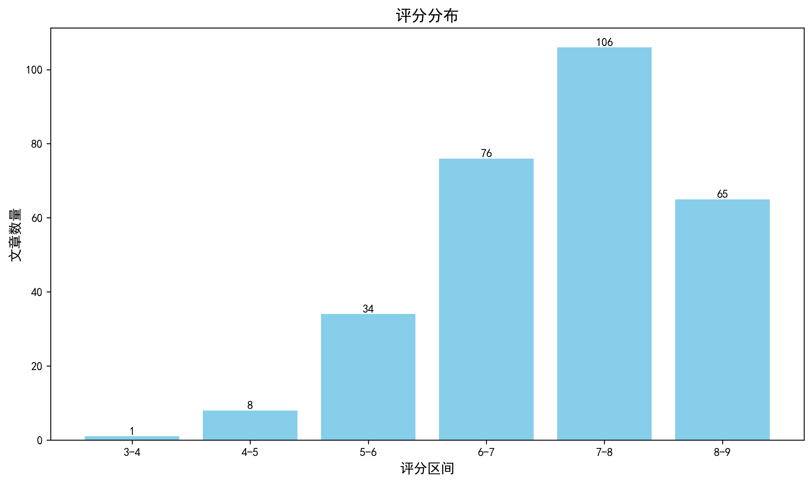

神经科学快讯·第028期 神经科学周报：单一ECoG植入同步解码言语与手势，瘫痪患者多模态交流新突破 (2026-09-20)
📊 本周概览
- 头条推荐: 0 篇
- 深度解读: 93 篇
- 简要提及: 151 篇
- 跨界启发: 0 篇
- 已过滤: 339 篇
🌏 环球视野

📊 评分分布
| 评分区间 | 文章数量 |
|---|---|
| 3-4 | 1 |
| 4-5 | 8 |
| 5-6 | 34 |
| 6-7 | 76 |
| 7-8 | 106 |
| 8-9 | 65 |
总计: 290 篇评分文章
📈 各领域文章分布
| 领域 | 深度解读 | 简要提及 | 总计 |
|---|---|---|---|
| 未知领域 | 0 | 76 | 76 |
| 临床与转化神经科学 | 15 | 14 | 29 |
| 认知神经科学 | 11 | 17 | 28 |
| 分子与细胞神经科学 | 21 | 5 | 26 |
| 系统与环路神经科学 | 14 | 12 | 26 |
| 计算与理论神经科学 | 7 | 10 | 17 |
| 发育神经科学 | 11 | 3 | 14 |
| 感觉与运动神经科学 | 7 | 7 | 14 |
| 方法学 | 6 | 5 | 11 |
| 社会与情感神经科学 | 1 | 2 | 3 |
合计: 深度解读 93 篇，简要提及 151 篇，共 244 篇
📚 精选文献（按领域分类）
临床与转化神经科学
Gliomas phenocopy an inborn error of metabolism to drive neuronal activity and tumor growth.
深度解读 8.7/10中文标题: 胶质瘤拟表型一种先天性代谢缺陷以驱动神经元活动和肿瘤生长
作者: Abdullah KG, Miki K, Edgar CK et al.
关键词: 胶质瘤, 代谢组学, 肌酸代谢, GAMT缺陷, 神经元兴奋性, 肿瘤生长
亮点: 胶质瘤通过分泌代谢中间体GAA兴奋周围神经元，将癌症代谢与癌症神经科学耦合成促瘤闭环
核心优势: 整合人类脑组织代谢组学、先天代谢病遗传学与神经-胶质瘤相互作用机制，提出GAA合成作为高级别胶质瘤的潜在干预靶点
研究局限: 当前仅基于摘要信息，尚无法评估GAA-GABA_A机制的特异性、在体因果性、模型外推性及临床转化可行性
目标读者: 神经肿瘤学、癌症神经科学、代谢组学、神经生理学及转化医学研究者
推荐理由: 该研究揭示高级别胶质瘤通过累积肌酸合成通路中间体GAA，表型模拟GAMT缺陷这一先天性代谢病，进而增强神经元兴奋性并促进肿瘤生长。它把肿瘤代谢重编程与神经活动直接联系起来，提出GAA是胶质瘤—神经元互作的关键分泌因子，也为癌症神经科学提供了可干预的代谢靶点。对神经科学读者而言，这项工作提示肿瘤可“劫持”先天代谢病通路来驱动环路活动，值得关注其治疗转化潜力。
中文标题: 帕金森病中的GBA1：过去、现在与未来
作者: Gan-Or Z
关键词: 帕金森病, GBA1, 溶酶体, α-突触核蛋白, 遗传风险, 生物标志物
亮点: 系统梳理GBA1与帕金森病从遗传发现到靶向治疗的完整图景，并指明未来转化方向。
核心优势: 由该领域领军学者撰写，覆盖GBA1遗传学、机制与治疗进展，兼具历史纵深与前沿展望。
研究局限: 仅凭标题与作者信息无法核实全文的文献覆盖范围与批判性深度；且主题专业性强，非遗传学读者门槛较高。
目标读者: 帕金森病遗传学、神经退行性疾病机制与药物研发研究者，以及临床神经科医生。
推荐理由: 该综述系统梳理了GBA1突变在帕金森病中的历史、现状与未来方向，涵盖从溶酶体功能障碍、α-突触核蛋白聚集到临床表型异质性和遗传风险分层。其价值在于把基础机制与生物标志物、靶向治疗和临床试验设计串联起来，为理解帕金森病遗传学如何走向精准干预提供了清晰框架。
中文标题: 面向瘫痪患者多模态交流的言语与手势同步解码
作者: Samantha C. Brosler, Jessie R. Liu, Edward F. Chang
资深研究者: Edward F. Chang (h指数=101)
关键词: 脑机接口, ECoG, 语音解码, 手势解码, 瘫痪, 多模态解码
亮点: 单一高密度ECoG植入实现瘫痪患者同时解码言语和手势，向自然多模态脑机接口迈出关键一步。
核心优势: 首次在单个皮层植入物上同时解码言语与手势，并用并行解码器驱动个性化虚拟化身，在孤立与同时尝试条件下均提升表现。
研究局限: 样本量较小（3名参与者），主要验证虚拟化身控制而非真实设备或长期家庭使用，摘要未提供详细解码精度与泛化性指标。
目标读者: 脑机接口、神经工程、言语与运动神经科学、临床转化及计算神经科学家。
推荐理由: 该研究利用单一高密度ECoG植入物，首次在瘫痪患者中实现语音与手势的同步解码，突破了以往孤立解码语音或手势的局限。其核心价值在于将多模态自然交流需求转化为可同时恢复的神经假体目标，并验证了上肢、口面部运动与语音信号可在同一皮层记录中可靠分离与重建。对临床BCI而言，这向更自然、更高效的沟通修复迈出关键一步，也为高密度电极阵列的解码算法与多任务神经假体设计提供了可借鉴的范式。
中文标题: 肌萎缩侧索硬化症中的诊断生物标志物问题
作者: Benatar M, Wuu J, Turner MR et al.
关键词: 肌萎缩侧索硬化, 诊断标志物, 神经退行性疾病, 临床转化, 生物标志物验证, 人类
亮点: 系统剖析ALS诊断生物标志物从发现到临床落地之间的鸿沟，并给出验证与转化路线图。
核心优势: 由ALS生物标志物领域权威团队撰写，聚焦诊断延迟和生物标志物验证失败的核心问题，兼具批判性与前瞻性。
研究局限: 作为综述/观点类文章而非原始研究，未提供新的实验数据；诊断生物标志物领域快速演变，具体推荐可能需随新证据更新。
目标读者: ALS/神经退行性疾病临床研究者、生物标志物科学家、临床试验设计者和神经病学专科医生。
推荐理由: 本文聚焦ALS诊断生物标志物从发现到临床落地之间的鸿沟，系统梳理异质性、样本偏倚、检测标准化、阈值定义与监管路径等关键障碍。对神经科学读者而言，其价值在于把“标志物阳性”与“临床可用诊断工具”区分开，并提供可检验的验证框架。适合关注神经退行性疾病早期诊断、临床试验入组富集和多中心队列整合的研究者。
中文标题: 基于结构的抗精神病样TAAR1激动剂发现
作者: Sijie Huang, Heng Liu, Brian K. Shoichet
关键词: TAAR1, 精神分裂症, 虚拟筛选, 药物发现, GPCR, 计算对接
亮点: 基于活性态TAAR1结构的超大规模对接发现新型抗精神病样激动剂，并在小鼠中验证疗效且无 catalepsy。
核心优势: 整合6500万分子超大规模对接、化学优化、cryo-EM结构验证和小鼠行为学，获得脑暴露良好且无 catalepsy 的TAAR1激动剂。
研究局限: 仅在小鼠PPL模型中验证行为疗效，缺乏多模型、长期毒性、脱靶效应及临床转化数据；模拟提示初始筛选可能过度优化命中率而牺牲亲和力成熟。
目标读者: 神经精神药理学、药物化学、计算药物发现、精神分裂症转化研究及相关系统神经科学研究者
推荐理由: 该研究利用基于结构的计算对接，从6500万分子中筛选出TAAR1激动剂，并实验验证了55个候选分子，最终发现14个具有中纳摩尔至微摩尔活性的新配体。TAAR1作为精神分裂症治疗的替代靶点，可调节单胺信号，有望减少现有抗精神病药物的副作用。这项工作展示了大规模虚拟筛选与实验验证相结合在GPCR药物发现中的高效性，为开发新型抗精神病药物提供了先导化合物，对临床转化神经科学具有重要价值。
中文标题: 查尔斯·邦奈综合征的神经机制
作者: Tangtartharakul G, Storrs KR, Schwarzkopf DS et al.
关键词: 视觉幻觉, 感觉剥夺, 视觉皮层, 神经影像, 神经调控, 人类
亮点: 系统整合Charles Bonnet综合征的视觉去传入、皮层释放与预测编码机制，为理解复杂视幻觉提供神经框架。
核心优势: 由神经眼科与视觉认知神经科学专家撰写，有望将临床表型、神经影像与计算机制整合为统一解释。
研究局限: 作为综述缺乏原始实验数据；且未提供摘要/全文细节，难以核实文献覆盖完整性、批判深度与具体框架创新性。
目标读者: 视觉神经科学、临床神经眼科、精神病学、幻觉研究与计算神经科学研究者
推荐理由: Charles Bonnet综合征是视力丧失后出现的复杂视幻觉，长期被误认为精神症状。该文从去传入、皮层兴奋性失衡和网络重组等角度梳理其神经机制，把眼科疾病、视觉通路损伤与幻觉生成联系起来。对神经科学读者而言，它提供了感觉剥夺如何驱动自发知觉的临床模型，并可能为幻觉的跨疾病机制、神经调控干预和生物标志物研究提供切入点。
中文标题: 癫痫中的认知与行为全景：从神经心理学到生活体验
作者: Hermann BP, Loring DW
关键词: 癫痫, 认知障碍, 行为共病, 神经心理学, 患者体验, 临床转化
亮点: 将癫痫认知与行为研究从传统神经心理评估拓展到患者主观体验，为理解癫痫共病提供更整合的临床-生活视角。
核心优势: 由癫痫神经心理学领域权威撰写，主题横跨认知、行为与患者体验， likely 能提供领域全景与整合框架。
研究局限: 缺少摘要与全文信息，评分主要基于标题、作者和期刊推断；若为叙述性综述，可能缺乏系统检索与证据分级。
目标读者: 癫痫神经心理学家、临床神经科学家、癫痫专科医生、患者报告结局与共病研究者
推荐理由: 该综述系统梳理癫痫中认知与行为障碍的谱系，从神经心理学评估延伸到患者主观生活体验，强调客观认知表型与主观结局的整合。对神经科学读者而言，它把癫痫视为研究脑网络、认知与情绪交互的临床模型，并提示临床转化研究需兼顾神经心理机制与患者报告结局，对跨诊断脑行为研究和精准照护具有参考价值。
中文标题: HTT CAG重复序列中中断的缺失与亨廷顿病中的体细胞扩增及中型多棘神经元丢失相关
作者: Kay C, Levesley J, Mätlik K et al.
关键词: 亨廷顿病, 体细胞扩增, 中等棘神经元, CAG重复, 纹状体, 神经退行性变
亮点: CAG-CCG loss-of-interruption修饰因子将亨廷顿病中型多棘神经元的体细胞CAG扩增与纹状体神经元丢失直接联系起来。
核心优势: 利用罕见LOI修饰因子分层的人脑组织证据，直接显示有害CAG-CCG LOI使MSN中大体细胞扩增比例增加约5倍，并与尾状核MSN计数减少相关。
研究局限: 横断面人尸检相关设计难以确立因果；不能排除神经元存活偏倚以及血液与脑组织体细胞扩增不一致带来的解释局限。
目标读者: 亨廷顿病、神经遗传学、重复扩增疾病和神经退行性变研究者，以及从事体细胞不稳定性建模的计算/系统生物学家
推荐理由: 该研究聚焦HD中HTT CAG重复中断缺失（LOI）这一遗传修饰因素，揭示纹状体中等棘神经元（MSN）的体细胞CAG扩增并非早期普遍事件，而是随病程累积，并在携带有害CAG-CCG LOI的患者中与MSN丢失相关。工作把生殖系修饰变异、细胞类型特异的体细胞不稳定性和神经退行性表型串联起来，为理解HD发病时序和靶向体细胞扩增的治疗策略提供了重要的人脑证据。
中文标题: 帕金森病中的韧性机制：一个领域特异性的概念框架
作者: Ruppert-Junck MC, van Eimeren T, Giehl K et al.
关键词: 帕金森病, 神经韧性, 多巴胺, 认知储备, 临床异质性, 运动症状
亮点: 以领域特异性框架重新定义帕金森病韧性机制，为解释异质性病程和开发针对性干预提供概念路线图。
核心优势: 将韧性从泛化概念推进到运动、认知等特定领域的机制框架，有助于整合补偿、抵抗与代偿等异质证据。
研究局限: 仅凭标题与期刊信息无法评估文献覆盖、证据分级和框架可检验性；概念框架尚需实证验证。
目标读者: 帕金森病与运动障碍临床研究者、神经影像/神经调控学者、计算与系统神经科学建模者。
推荐理由: 该文提出帕金森病中“韧性”的领域特异性概念框架，将运动、认知等不同功能域的保护机制区分开，强调同一病理负荷下临床表型异质性的驱动因素。其价值在于把传统以损伤为中心的研究转向代偿与储备机制，为分层生物标志物、疾病修饰试验和个体化干预提供可检验的假设框架，尤其适合关注神经退行性疾病异质性与转化研究的读者。
Ketamine attenuates habenula activity in response to aversive outcomes during Pavlovian learning.
深度解读 7.7/10中文标题: 氯胺酮减弱巴甫洛夫学习期间缰核对厌恶结果的反应活动
作者: Pulcu E, Costi S, Artiach-Hortelano P et al.
关键词: 氯胺酮, fMRI, 人类, 外侧缰核, 厌恶学习, 计算建模
亮点: 7T fMRI links ketamine’s rapid antidepressant action to dampened human habenula responses during aversive Pavlovian learning.
核心优势: 随机安慰剂对照设计结合7T fMRI与厌恶巴甫洛夫范式，在70名健康志愿者中直接检验氯胺酮对人类外侧缰核功能的影响，转化价值明确。
研究局限: 缰核体积小且7T fMRI易受信号脱落/部分容积效应影响；下游负性情绪记忆效应仅为初步证据，单次给药、24小时时间点及健康被试限制临床外推。
目标读者: 转化精神病学、 affective/computational neuroscience、7T神经影像及氯胺酮/抑郁症机制研究者
推荐理由: 该研究将临床前发现的氯胺酮对缰核的抑制作用转化到人类，利用计算神经科学方法结合fMRI，在70名健康志愿者中揭示氯胺酮减弱外侧缰核在巴甫洛夫学习中对厌恶结果的反应。这项工作为氯胺酮快速抗抑郁的神经机制提供了人类证据，并突出了缰核作为治疗靶点的重要性。其跨物种转化和计算建模方法为精神疾病研究提供了新范式。
中文标题: 抑制自噬可增敏高级别突变IDH1胶质瘤的放疗反应
作者: Felipe J. Núñez, Kaushik Banerjee, Maria G. Castro
单位: Department Of Neurosurgery, University Of Michigan Medical School, Ann Arbor, Mi, Usa
研究地区: United States
关键词: mIDH1胶质瘤, 自噬抑制, 放疗增敏, 单细胞测序, 线粒体代谢, 表观重编程
亮点: mIDH1胶质瘤因线粒体代谢与糖酵解双重受损而依赖自噬供能，用合成蛋白纳米颗粒递送ATG7 siRNA阻断自噬可显著增敏放疗并诱导长效生存与免疫记忆。
核心优势: 多模态证据链完整：人/鼠样本的RNA-seq、单细胞RNA-seq与ChIP-seq共同定位自噬与线粒体代谢失衡，并在体内用SPNP递送ATG7 siRNA验证了放疗增敏、肿瘤消退与免疫记忆，兼具机制发现与递送转化。
研究局限: 机制与转化证据仍不完整：自噬通量主要依赖LC3-I/II转换这一单一指标，缺乏体内自噬通量直接测量；免疫记忆的细胞与分子机制未深入解析；模型限于mIDH1小鼠与细胞系，临床可行性、递送效率及对TP53/ATRX共突变谱的普适性尚待验证。
目标读者: 神经肿瘤学与放射治疗研究者、自噬与肿瘤代谢生物学家、纳米药物递送与转化医学研究者
推荐理由: 该研究揭示mIDH1高级别胶质瘤在TP53/ATRX缺失背景下出现线粒体代谢下调与自噬通路上调，并通过多组学与功能分析证明自噬抑制可增强放疗反应。其价值在于把IDH1突变驱动的表观遗传与代谢重编程转化为可干预的放疗增敏策略，为难治性胶质瘤的联合治疗提供了临床前依据。
中文标题: 女性偏头痛的抗阻训练：激素、CGRP、自主神经、血管和伤害性通路的机制综述
作者: Tornero-Aguilera JF, Muñoz-López M, Casas-Gómez M et al.
关键词: 偏头痛, 女性, 人类, 抗阻训练, CGRP, 雌激素
亮点: 将女性偏头痛的激素、CGRP、自主神经、血管与痛觉通路机制整合起来，为抗阻训练提供性别特异性的转化框架。
核心优势: 以女性激素与CGRP/三叉神经血管系统为核心，把抗阻训练的多系统适应机制组织成连贯的生物学论证，并区分稳健证据、新兴信号与待检验假说。
研究局限: 属于叙述性综述而非系统综述，未对临床证据进行定量合并，女性特异性机制链条中不少环节仍为推测性整合，且抗阻训练处方的转化建议尚缺直接试验验证。
目标读者: 偏头痛与头痛研究者、运动生理学与康复医学研究者、女性健康与神经血管/自主神经科学领域的临床与转化研究人员
推荐理由: 该综述聚焦女性偏头痛，系统梳理抗阻训练对激素、CGRP、自主神经、血管及痛觉通路的潜在调节机制。其价值在于把运动干预从行为层面提升到神经血管与神经免疫机制层面，并强调雌激素与三叉血管系统交互带来的性别特异性。对关注偏头痛转化研究、非药物干预及性别差异的读者，本文提供了可检验的机制框架和临床研究切入点。
中文标题: 局部递送干扰素恢复抗原呈递并使髓母细胞瘤对T细胞杀伤敏感化
作者: Eisemann T, Chambers KR, Beigi Masihi M et al.
关键词: 髓母细胞瘤, 干扰素, 抗原呈递, T细胞杀伤, 局部递送, 免疫治疗
亮点: 局部递送干扰素可恢复髓母细胞瘤的抗原呈递能力，从而将其从免疫冷肿瘤转化为可被T细胞杀伤的靶标。
核心优势: 将干扰素局部递送、抗原呈递修复与T细胞杀伤直接联系起来，为髓母细胞瘤提供了一种机制明确、可转化的免疫治疗策略。
研究局限: 仅凭标题难以判断抗原呈递恢复的持久性、肿瘤异质性下的普适性、局部递送的安全性和长期免疫记忆效应；结论可能主要基于临床前模型。
目标读者: 神经肿瘤学、肿瘤免疫学、儿童脑肿瘤研究和免疫治疗转化研究者
推荐理由: 该研究针对髓母细胞瘤免疫逃逸的关键环节，采用局部递送干扰素恢复肿瘤抗原呈递通路，从而增强T细胞识别与杀伤。其创新在于将免疫调节因子直接递送至脑肿瘤微环境，有望绕过全身给药毒性并克服免疫治疗耐药。对神经肿瘤学与临床转化而言，这为髓母细胞瘤提供了一种可组合的免疫增敏策略，并提示抗原呈递修复是提升脑肿瘤免疫治疗疗效的潜在靶点。
中文标题: EGR3缺失减轻Kcna1缺失小鼠的发育性和癫痫性脑病
作者: Mazumder AG, Karedia S, Adhyapak N et al.
关键词: 小鼠模型, 癫痫脑病, Kcna1, EGR3, 钾通道, 基因敲除
亮点: 遗传学删除 EGR3 可减轻 Kcna1 缺失所致发育性癫痫性脑病，提示 EGR3 是潜在可干预节点。
核心优势: 利用 Kcna1-null DEE 小鼠模型建立 EGR3 与癫痫性脑病疾病修饰之间的遗传学联系，转化潜力明确。
研究局限: 目前主要依赖小鼠遗传学证据，缺乏人类样本、独立队列及完整机制链验证，临床可转化性仍待确认。
目标读者: 癫痫与神经发育障碍、离子通道病、转录调控及临床前治疗研究者
推荐理由: 该研究在Kcna1缺失的发育性癫痫性脑病小鼠模型中，发现删除EGR3可减轻疾病表型，揭示活动依赖性转录因子EGR3是Kv1.1通道病的关键修饰因子。工作将离子通道功能障碍与下游转录程序联系起来，为DEE的机制理解和靶向干预提供了新切入点，并提示EGR3通路可能成为难治性癫痫的转化靶点。
中文标题: VES001——一种用于治疗额颞叶痴呆的口服小分子sortilin受体抑制剂的临床前和临床研究：首次人体随机安慰剂对照1期试验
作者: Louise Klem, Daniel Dumas, Mads Kjolby
关键词: I期临床试验, 额颞叶痴呆, sortilin, 口服小分子, 随机安慰剂对照, 神经退行性
亮点: 首个口服小分子sortilin受体抑制剂VES001的首次人体试验，为额颞叶痴呆带来新靶点临床验证。
核心优势: 针对额颞叶痴呆未满足需求，采用随机安慰剂对照首次人体设计，将新型sortilin靶点从临床前推进到早期临床。
研究局限: 一期试验主要评估安全性、耐受性和药代动力学，缺乏疗效与长期疾病修饰证据；摘要未展示明确的靶点结合、中枢渗透或生物标志物变化。
目标读者: 临床神经科学家、神经退行性疾病药物开发者、额颞叶痴呆研究人员、转化医学与药理学研究者
推荐理由: VES001是一种口服小分子sortilin受体抑制剂，靶向调节颗粒蛋白前体相关通路，在额颞叶痴呆（FTD）中具有疾病修饰潜力。该研究整合临床前机制探索与首次人体随机安慰剂对照I期试验，报告安全性、耐受性及药代动力学特征，为FTD从靶点验证到早期临床转化提供了关键证据。尽管I期试验样本量和随访时间有限，其可口服、小分子靶向策略若获得后续疗效验证，可能拓展FTD及其他神经退行性疾病的治疗路径，值得神经科学读者关注。
Modelling the effect of ventricular expansion on white matter in normal pressure hydrocephalus.
简要提及 6.8/10中文标题: 正常压力脑积水中脑室扩张对白质影响的建模
作者: Del Giovane M, Darvishi V, David MCB et al.
摘要: 用生物力学建模将脑室扩大与白质纤维束形变及损伤联系起来，为正常压力脑积水的机制解释和干预评估提供定量框架。
优势: 聚焦正常压力脑积水这一临床难题，把宏观脑室扩张与白质组织水平力学效应桥接起来，兼具机制探索与转化潜力。 局限: 仅凭标题和期刊信息无法判断模型验证、样本量、多模态证据及个体化外推能力；计算模型对组织本构和边界条件的假设可能限制临床结论强度。 受众: 神经影像、生物力学建模、脑积水与白质疾病临床研究者
中文标题: 抗CD40L可防止脑膜B细胞聚集并减轻进展性自身免疫性脑脊髓炎
作者: Tyystjärvi S, Ruiz Navarro DE, Kulisch LM et al.
摘要: 抗CD40L阻断脑膜B细胞聚集，为进展型自身免疫性脑脊髓炎提供新的靶向治疗思路。
优势: 将脑膜B细胞聚集体这一进展型MS相关病理与CD40L通路连接，并在EAE模型中验证干预可减轻疾病进展，兼具机制与转化价值。 局限: 仅凭标题无法评估具体实验设计、样本量、机制特异性及是否优于现有B细胞清除策略；EAE模型向临床转化仍存在不确定性。 受众: 神经免疫学、多发性硬化/EAE、B细胞生物学及自身免疫治疗研究者
中文标题: 帕金森病中的多巴胺激动剂通过增强无奖励配对线索时的风险选择，使风险承担与奖励配对线索解耦
作者: Muksuris, K., Flynn, E., Feng, T. L. et al.
摘要: 帕金森病患者中，多巴胺激动剂联合左旋多巴可在缺乏奖赏线索时也增加风险选择，使风险决策与情境线索解耦。
优势: 采用ON/OFF药物与有无奖赏线索的双因素行为范式，在PD患者和健康对照中分离多巴胺激动剂与线索对风险决策的独立效应。 局限: 多巴胺激动剂亚组样本量较小，未充分控制药物类型/剂量、测试顺序和疾病严重度，且仅有行为证据、缺乏受体特异性或神经机制验证；预印本尚未同行评审。 受众: 帕金森病与运动障碍临床研究者、行为神经科学、多巴胺与决策神经科学、精神药理学及转化神经科学研究者
中文标题: 全基因组跨性状分析比较帕金森病与肾脏相关性状的遗传结构
作者: Le Chang, Sadaf Gawhary, Sarah A. Gagliano Taliun
摘要: 跨性状GWAS系统解析帕金森病与肾功能相关性状的共享遗传结构，提示潜在多效性与共病机制。
优势: 整合多个肾脏相关性状与帕金森病GWAS汇总数据，在全基因组尺度上比较遗传架构、遗传相关和多效性重叠，为PD与肾脏表型的共病遗传基础提供较系统的证据。 局限: 主要基于现有GWAS汇总统计的遗传统计推断，遗传相关性不等同于因果关系，难以完全排除样本重叠、群体分层、环境混杂和多效性影响，且缺乏实验或临床机制验证。 受众: 遗传流行病学、统计遗传学、神经遗传学、帕金森病及肾脏疾病研究者
中文标题: 基于人工智能的脑氟脱氧葡萄糖PET解剖分割：在神经退行性疾病谱系中的广泛验证
作者: Silva LC, Oliveira FPM, Costa DC et al.
摘要: 基于AI的FDG PET脑区解剖分割在神经退行性疾病谱系中完成广泛验证，为代谢影像定量分析提供更可重复的工具。
优势: 覆盖神经退行性疾病谱系的广泛验证，有望提升FDG PET分割的一致性与临床可推广性。 局限: 从标题判断属于方法学/验证型研究，原始理论创新有限；且缺少摘要细节，难以评估多中心、跨扫描仪和病理金标准的验证强度。 受众: 神经影像、核医学、阿尔茨海默病/额颞叶痴呆等神经退行性疾病研究者与计算神经科学家。
中文标题: 探索运动皮层中间神经元传导时间及其与慢性卒中患者运动功能的联系
作者: Rajendran A, Denyer R, Rubino C et al.
摘要: 方向性TMS揭示卒中后运动皮层中间神经元相关传导时间的半球间失衡，并与上肢运动功能相关
优势: 采用单脉冲单相TMS比较AP、PA、LM方向MEP起始潜伏期，在慢性卒中患者双半球中构建AP-LM/PA-LM指标，并直接关联WMFT运动功能，思路清晰且临床转化指向明确。 局限: 样本量较小且为横断面相关性设计，缺少纵向验证和病灶部位/严重程度等混杂控制；以MEP起始潜伏期差值间接推断中间神经元传导时间，机制解释仍较间接。 受众: 临床神经生理学、卒中康复、TMS与运动皮层回路研究者
中文标题: 基于规范建模的脑偏差分数识别儿童和青少年精神病理学维度
作者: Li, Z., Ren, B., Wu, H. et al.
摘要: 规范建模衍生的脑偏差分数可捕捉儿童青少年跨诊断情绪失调维度，并较传统结构形态指标更敏感。
优势: 将规范建模、稀疏典型相关分析与独立样本验证结合，系统比较了脑偏差分数与传统结构指标对跨诊断精神病理维度的识别能力。 局限: 发现与验证效应量偏小且验证仅名义显著，研究为横断面结构MRI，缺乏多模态、纵向及外部多中心验证，临床转化价值尚不明确。 受众: 计算精神病学、发展神经影像、临床神经科学及精神病理学研究者
中文标题: 血管紧张素II通过肝素样抗凝血酶激活和凝血功能障碍加重小鼠脑出血
作者: Shaoying Wang, Min Xue, Xiaopeng Tang
摘要: 将血管紧张素II、类肝素抗凝血酶激活与凝血功能障碍串联起来，提出其加重脑出血的新机制。
优势: 把RAAS激活与凝血/抗凝血平衡异常直接联系到脑出血进展，具备较清晰的机制假设和潜在干预靶点。 局限: 仅有标题信息，摘要与正文数据缺失，无法评估实验设计、统计严谨性和因果证据；研究限于小鼠，人类转化价值与普适性尚不明确。 受众: 神经血管生物学、脑出血/卒中、凝血与RAAS信号通路研究者
中文标题: 在自然亲子互动中通过预训练视觉-语言模型自动筛查孤独症
作者: Ruikang Deng, Huishi Huang, Zhengxing Huang
摘要: 用预训练视觉-语言模型从自然亲子互动视频中自动识别自闭症行为特征，探索低成本、可规模化的早期筛查新路径。
优势: 把通用视觉-语言基础模型零样本/微调迁移到真实家庭互动场景，绕开结构化临床范式与人工编码，为可扩展的行为学筛查提供了端到端的技术样例。 局限: 本质是现有基础模型的下游应用迁移，方法学原创性有限；仅凭标题与摘要无法确认样本规模、诊断金标准、外部多中心验证与场景/人口学偏倚控制，筛查性能的泛化性、公平性与临床可用性仍待严格检验。 受众: 儿童精神卫生与发育行为临床研究者、医学多模态AI与计算机视觉方法学者、自闭症早期筛查与公共卫生转化研究者
中文标题: 在非临床样本中解析心智游移与症状维度的关系：与ADHD的关键联系
作者: Likar, M., Brezoczki, B., Vekony, T. et al.
摘要: 在非临床大样本中同时建模七种精神症状维度，发现ADHD症状是特质性走神唯一稳健的独立预测因子。
优势: 用频率学派与贝叶斯多变量回归同时控制症状维度间共享方差，较清晰地分离出ADHD症状与走神的特异性关联。 局限: 横断面、自我报告、非临床样本，无法推断因果或临床机制，且走神与症状测量可能存在共同方法偏差。 受众: 临床心理学、精神病理学、ADHD与走神/内省研究及计算精神病理学研究者
中文标题: 慢性硬膜下血肿手术治疗后复发状态的分类——一种机器学习方法
作者: Hamou H, Kernbach J, Ridwan H et al.
摘要: 基于机器学习的慢性硬膜下血肿术后复发预测模型，面向临床决策支持。
优势: 将机器学习应用于慢性硬膜下血肿术后复发这一具有临床意义的预测问题，选题贴近神经外科实践。 局限: 仅为方法学应用型研究，突破性有限；缺乏多中心外部验证与前瞻性设计证据，且无法从现有信息判断模型可解释性与泛化能力。 受众: 神经外科医生、临床流行病学研究者、医学机器学习与预测建模研究者
Serum Na-Cl value from routine blood tests reflects CO2 retention in amyotrophic lateral sclerosis.
简要提及 4.3/10中文标题: 常规血液检测中的血清Na-Cl值反映肌萎缩侧索硬化中的CO2潴留
作者: Yamakawa I, Tamura R, Yabata H et al.
摘要: 常规血检中的Na-Cl差值可能作为ALS患者CO2潴留的简易替代标志物
优势: 利用极易获取的常规血清电解质指标，提出一种低成本、可广泛落地的ALS呼吸功能筛查思路。 局限: 研究很可能为回顾性相关性分析，缺乏机制验证与多中心前瞻性验证，且摘要信息不足，难以判断样本量、模型校正和临床效用。 受众: ALS临床医生、神经肌肉病与呼吸神经病学研究者、临床生物标志物与转化医学人员
中文标题: 连接知觉与现实：妄想性寄生虫病中的寄生虫识别
作者: Yoonuan T, Piyaphanee W, Srinukham S et al.
摘要: 通过实验室寄生虫鉴定区分妄想性寄生虫病患者的真实感染与妄想，为临床鉴别提供现实锚点。
优势: 聚焦妄想性寄生虫病中实际寄生虫感染的鉴定，具有直接的临床鉴别与处置价值。 局限: 所属领域更偏向临床寄生虫学/精神科，与神经科学或计算/系统生物学核心问题关联薄弱；且无摘要与详细方法，难以评估创新性和证据强度。 受众: 临床寄生虫学、精神科、皮肤科及全球健康研究者；对计算/系统神经科学读者相关性较低。
分子与细胞神经科学
中文标题: RNF213 通过直接泛素化调控糖原质量
作者: Matthew C. J. Yip, Katerina Naydenova, Felix Randow
关键词: RNF213, 糖原质控, 泛素化, 自噬, 多聚葡糖体, 神经退行
亮点: 首次揭示 RNF213 通过直接泛素化异常糖原启动自噬，将非蛋白泛素化确立为糖原质量控制的核心机制。
核心优势: 将 RNF213 的 CBM20 糖结合、异常糖原泛素化、LUBAC 层级与自噬受体招募整合为一条清晰的糖原质量控制通路，并获小鼠遗传学、细胞工程和 Cryo-EM 支持。
研究局限: 证据主要来自小鼠和工程化细胞，人类疾病相关性、内源性糖原泛素化的化学计量及 RNF213 完整结构-功能关系仍需验证；摘要未显示疾病模型中的因果挽救实验。
目标读者: 神经退行性疾病、自噬/泛素化、糖原代谢、结构生物学和细胞质量控制研究者
推荐理由: 该研究发现RNF213作为E3泛素连接酶直接泛素化异常糖原，并通过自噬清除，从而防止脑内多聚葡糖体积累。这揭示了一种全新的糖原质量控制机制，将糖原代谢、泛素-自噬系统与神经退行性疾病直接联系起来。对理解多聚葡糖体病、RNF213相关脑白质病变及蛋白质稳态以外的生物大分子质控具有重要启示。
中文标题: 中枢神经系统健康与疾病中的少突胶质细胞
作者: Ryan LJ, Miron VE
关键词: 少突胶质细胞, 髓鞘, 适应性髓鞘, 代谢支持, 脱髓鞘, 神经退行性疾病
亮点: 系统整合少突胶质细胞在发育、稳态、衰老和疾病中的异质性功能，并将其重新定位为神经系统疾病的可干预治疗靶点。
核心优势: 将代谢支持、适应性髓鞘化、髓鞘再生与疾病中的细胞自主致病作用纳入统一框架，并突出异质性对功能与治疗策略的影响。
研究局限: 仅依据摘要评估，无法核验全文的文献覆盖广度、引用时效性、批判深度及是否存在原创性整合框架；综述本身不提供原始实验数据。
目标读者: 胶质细胞生物学、髓鞘修复、神经退行性疾病、神经免疫与神经代谢研究者
推荐理由: 该综述系统梳理了少突胶质细胞从被动髓鞘提供者到中枢神经系统主动调控者的范式转变：它通过代谢支持满足轴突能量需求，并依据环境刺激进行适应性髓鞘重塑，从而动态调节神经信号传导；同时在损伤后参与髓鞘修复。文章进一步讨论其在衰老和疾病中功能失调甚至驱动病理的机制，为脱髓鞘疾病、神经退行性疾病及认知老化提供了细胞与分子层面的整合框架，并指出以髓鞘可塑性为靶点的干预方向。
中文标题: miR-10a-5p-γCaMKII 轴将外周至大脑的信号传导与女性中年期的认知脆弱性联系起来
作者: Qu J, Yang J, Li W et al.
关键词: 人类, 小鼠, miRNA, 表观遗传, 外周脑轴, 认知衰退
亮点: 揭示女性中年期认知脆弱性的外周—脑轴：脾源性miR-10a-5p经γCaMKII影响线粒体、衰老与记忆
核心优势: 跨人类组织、小鼠模型和患者来源神经元的多层次证据，将X连锁RBMX、脾脏miR-10a-5p与脑内γCaMKII联系起来，并提示可干预性。
研究局限: 外周到脑的信号传递机制和因果链仍需更直接验证；人类数据以关联性为主，且miR-10a-5p-γCaMKII轴在正常衰老与AD病理中的相对贡献尚需区分。
目标读者: 神经退行性疾病、衰老与性别差异、免疫—脑互作、非编码RNA及转化神经科学研究者
推荐理由: 该研究揭示女性中年认知脆弱性的外周-脑分子轴：X连锁RBMX的表观遗传上调促进脾脏miR-10a-5p升高，进而经γCaMKII影响脑功能与认知韧性。研究整合人类脑/脾组织与小鼠模型，将衰老、性别差异和外周免疫信号连接起来，为理解中年认知衰退的性别偏倚提供了可检验机制，并提示miR-10a-5p-γCaMKII轴作为干预靶点的潜力。
中文标题: 基于结构的亚型选择性迷幻剂类似物设计
作者: Huiqiong Li, Lingjie Tang, Jianjun Cheng
单位: Chengjj@Shanghaitech; Ihuman Institute, Shanghaitech University, Shanghai, China; Key Laboratory Of Multi-Cell Systems, Shanghai Institute Of Biochemistry And Cell Biology, Center For Excellence In Molecular Cell Science, Chinese Academy Of Sciences, University Of Chinese Academy Of Sciences, Shanghai, China
研究地区: China
关键词: 冷冻电镜, 5-HT2A, 5-HT2B, 迷幻剂, 亚型选择性, GPCR
亮点: 基于受体结构设计可选择性激活5-HT2A并拮抗5-HT2B的致幻剂类似物，在保留治疗潜力的同时规避心脏瓣膜病风险。
核心优势: 以多个cryo-EM受体-配体复合物结构指导合理药物设计，获得5-HT2A/5-HT2B亚型选择性配体，并在动物模型中验证抗抑郁样疗效。
研究局限: 摘要层面尚缺乏长期心脏安全性、临床转化、致幻/非致幻行为分离以及更广泛受体选择性的完整数据。
目标读者: 神经药理学、结构生物学、精神疾病药物研发与计算药物设计研究者
推荐理由: 该研究解析了5-HT2A受体的冷冻电镜结构，并与5-HT2B受体的正构结合口袋进行系统比较，进而基于结构设计亚型选择性迷幻剂类似物。其核心价值在于从分子层面回答如何保留5-HT2A介导的治疗潜力、同时规避5-HT2B激活导致的心脏瓣膜病风险，为迷幻剂类神经精神药物开发提供了可操作的结构模板与药理学依据。对神经科学读者而言，这不仅是GPCR选择性难题的案例，也提示血清素系统靶向治疗的安全窗口可通过理性设计拓展。
中文标题: 携带ASD风险突变小鼠的转录组分类
作者: Roh JD, Jun Y, Jeon H et al.
关键词: 自闭症, 小鼠, 前额叶, RNA-seq, 单核测序, 转录组
亮点: 跨17个ASD风险突变小鼠品系的转录组图谱将自闭症异质性划分为两种对立状态，并关联性别偏倚、细胞类型重塑与药物反应。
核心优势: 大规模性别平衡的bulk与单核RNA-seq整合，揭示可复现的ASD转录组亚型及突触方向性。
研究局限: 仅基于小鼠模型和转录组关联，缺乏人类组织验证与因果机制，药物反应差异需功能实验证实。
目标读者: 神经发育疾病遗传学、转录组学、系统神经科学及ASD模型研究者
推荐理由: 该研究构建了17个ASD风险突变小鼠品系的前额叶转录组图谱，基于1008个RNA-seq样本鉴定出两种相反的转录组状态。这两种状态在性别偏倚、区域特异性、发育稳定性、细胞类型重塑及对氟西汀和锂剂的反应上存在显著差异，单核RNA-seq进一步揭示组1具有更广泛的细胞类型重塑。这项工作为理解ASD的遗传异质性提供了分子分型框架，并将转录组亚型与细胞、环路及行为表型联系起来，对开发基于生物标志物的精准干预策略具有重要意义。
中文标题: 负向别构调节剂解偶联β1-肾上腺素能受体的别构信号网络
作者: Thomas H. Harman, Timothy Noel, Daniel Nietlispach
关键词: β1AR, GPCR, 负向变构调节, 信号网络, 分子药理学, 计算建模
亮点: 负向别构调节剂通过解耦β1肾上腺素受体的别构信号网络实现受体活性精细调控，为GPCR别构药理学提供机制模板。
核心优势: 结合溶液NMR、突变分析与功能实验，在残基尺度上刻画了负向别构调节剂诱导的别构网络重排。
研究局限: 机制结论主要来自体外受体体系与特定配体，生理环境下的别构耦合、亚型选择性及跨GPCR普适性仍需进一步验证。
目标读者: GPCR结构生物学、受体药理学、别构调节剂药物发现与计算生物物理学研究者
推荐理由: 该研究以β1-肾上腺素受体为模型，揭示负向变构调节剂如何解耦GPCR的变构信号网络。其价值在于把变构调节从单一通路抑制推进到网络层面的机制解析，为理解受体信号偏倚、开发亚型选择性神经精神药物提供了分子框架。对神经科学读者而言，β1AR参与觉醒、应激与记忆调控，该工作提示变构调节剂可在不阻断正位配体的情况下精细重塑信号输出，具有转化潜力。
中文标题: 雌性冈比亚按蚊大脑的空间与单细胞分辨率图谱
作者: Irene Z. Rossi, Cécile Cassan, Arthur M. Talman
关键词: 单细胞测序, 空间转录组, 冈比亚按蚊, 雌性脑, 全脑图谱, 细胞类型
亮点: 首个雌性冈比亚按蚊脑的空间与单细胞分辨率转录组图谱，为蚊媒嗅觉、宿主搜寻和神经调控研究提供高价值资源。
核心优势: 将空间转录组与单细胞测序结合，在非模式昆虫脑中实现细胞类型与空间区域的联合解析，资源稀缺性和技术难度突出。
研究局限: 仅凭标题和有限信息判断，缺乏摘要与实验细节；作为图谱资源，机制性突破和因果验证可能有限，跨物种泛化性也需评估。
目标读者: 昆虫神经生物学、媒介生物学、单细胞与空间组学、计算神经科学及蚊媒防控研究者
推荐理由: 该研究以单细胞和空间转录组分辨率绘制雌性冈比亚按蚊脑图谱，系统解析细胞类型组成、空间分布及分子特征。它将单细胞组学与空间信息结合，为理解蚊媒嗅觉、味觉和吸血行为的神经环路提供基础资源，也为昆虫脑跨物种比较和疾病媒介控制提供新靶点。作为方法学示范，展示了复杂小体型脑组织多模态图谱构建流程，对分子与细胞神经科学及媒介神经生物学均有参考价值。
中文标题: KCC2的错误转运促进Christianson综合征小鼠模型中海马环路的高兴奋性
作者: Mustian, J., Qiu, H., Gao, A. Y. et al.
关键词: 小鼠, 海马, KCC2, 内体运输, 抑制性传递, 过度兴奋
亮点: NHE6缺失通过破坏KCC2膜运输削弱GABA能抑制，将Christianson综合征癫痫重新定义为抑制性发育的原发性失败。
核心优势: 首次将NHE6内体pH调控与KCC2表面递送和稳定性直接联系，提出“内体—抑制性”轴，为CS及更广泛癫痫提供机制性治疗靶点。
研究局限: 仅为bioRxiv预印本，未经同行评审；摘要未提供样本量、因果 rescue 或药理学恢复KCC2功能的直接证据，且结论主要基于Nhe6-/Y小鼠模型，向人类CS及更广癫痫谱系的转化仍需验证。
目标读者: 癫痫与神经发育障碍、氯稳态/KCC2、内体运输、抑制性环路及转化神经科学研究者
推荐理由: 该研究在Christianson综合征小鼠模型中揭示KCC2的错误运输导致海马环路过度兴奋，将内体运输与抑制性神经传递缺陷直接耦合。NHE6缺失引起回收内体过度酸化并破坏货物递送，进而影响KCC2定位，为理解神经发育疾病中兴奋-抑制失衡提供了新的细胞机制。该工作还提示靶向内体运输通路可能成为治疗癫痫和CS的潜在策略。
中文标题: 突触结合蛋白7的可变剪接调控其寡聚化与短时程突触可塑性
作者: Mehta N, Larson DT, Wozney M et al.
关键词: 可变剪接, Syt7, 寡聚化, 短时程可塑性, 突触传递, 电生理
亮点: 揭示Synaptotagmin 7通过可变剪接调控寡聚化，从而设定短时程突触可塑性。
核心优势: 将可变剪接、蛋白寡聚化与短时程突触可塑性机制直接联系，具有明确的分子—突触功能因果链条潜力。
研究局限: 仅凭标题与有限信息无法评估实验设计、因果验证、体内普适性和统计严谨性；结论可能受限于特定神经元类型或突触。
目标读者: 分子/细胞神经科学、突触生理学、RNA剪接与神经计算/系统生物学研究者
推荐理由: 该研究聚焦突触结合蛋白7（Syt7）的可变剪接如何调控其寡聚化状态，并进而影响短时程突触可塑性。它把分子层面的剪接异构体差异与突触释放概率、易化或抑制等动态特性直接联系，为理解神经环路中信息传递的时间滤波提供机制解释。Syt7不同剪接体可能赋予突触不同的钙依赖释放特性，这种精细调控对神经计算和病理状态下的突触功能障碍均具启示意义。
中文标题: 长寿基因APOE2增强周细胞功能并减少脂滴
作者: Reskiawan A Kadir R, Bons J, Vega Hormazabal G et al.
关键词: APOE2, 周细胞, 脂滴, 脂质代谢, 血脑屏障, 神经血管单元
亮点: 长寿基因APOE2通过增强周细胞功能并减少脂滴，为阿尔茨海默病等年龄相关脑疾病提供血管-代谢新靶点。
核心优势: 将APOE2的保护作用从经典神经元/胶质细胞机制拓展到脑血管周细胞和脂滴代谢，概念新颖且转化潜力明确。
研究局限: 仅凭标题和期刊信息无法判断实验设计的因果强度、模型体系及人类相关性；APOE2–周细胞–脂滴轴的上下游机制和疾病特异性仍待验证。
目标读者: 神经血管生物学、阿尔茨海默病与衰老、脂质代谢及转化神经科学研究者
推荐理由: 该研究揭示长寿相关APOE2变异在周细胞中的功能效应，将APOE的神经保护机制从神经元和胶质细胞拓展到脑血管周细胞及脂质代谢层面。APOE2增强周细胞功能并减少脂滴，提示其在维持血脑屏障、神经血管单元稳态及延缓脑衰老中的潜在作用。对理解APOE异构体差异、阿尔茨海默风险及靶向脂滴的干预策略具有重要价值。
Rtel1 in hypothalamic oxytocin neurons regulates oxytocin output and social behaviors in mice
深度解读 7.4/10中文标题: 下丘脑催产素神经元中的Rtel1调控催产素输出与小鼠社会行为
作者: Wang, J., Wang, X., Qiu, Z.
关键词: Rtel1, 催产素, 下丘脑, 室旁核, 社会行为, 自闭症
亮点: RTEL1通过解析Oxt启动子区G-四链体调控下丘脑催产素输出与社交行为，揭示DNA解旋酶的非端粒神经功能。
核心优势: 多模态证据汇聚：小鼠遗传学、催产素传感器成像、G-四链体生化实验和成年期回补实验共同支持RTEL1-OXT-社交行为的关联。
研究局限: G-四链体在体内直接调控Oxt转录的因果链仍不完整，且为预印本，缺乏同行评审和独立重复；行为表型与催产素释放的细胞特异性机制也有待更严格验证。
目标读者: 神经发育疾病、社交行为与催产素神经环路、DNA修复/基因组稳定性及分子神经科学研究者
推荐理由: 该研究将DNA解旋酶RTEL1这一自闭症风险基因与下丘脑催产素系统和社会行为直接联系起来。作者发现Rtel1单倍剂量不足选择性损害社会新颖性、增加重复和焦虑样行为，并在室旁核OXT神经元中降低催产素水平、削弱社会刺激诱发的OXT传感器反应。工作把基因组稳定性与G-四链体解析同神经调质输出和环路功能相衔接，为ASD相关社交障碍提供了可检验的细胞与分子机制，也为催产素通路干预提供了新靶点。
中文标题: 小胶质细胞与边界相关巨噬细胞在雄性小鼠系统性炎症下的脑血管和白细胞反应中起相反作用
作者: Ana Rita Brás, Nikolett Lénárt, Ádám Dénes
关键词: 小胶质细胞, 边界巨噬, 系统性炎症, 脑血管, 白细胞募集, 小鼠
亮点: 系统性炎症下微胶质细胞与边界相关巨噬细胞对脑血管和白细胞反应发挥相反调控，揭示脑边界免疫分工。
核心优势: 通过区分微胶质细胞与边界相关巨噬细胞，并解析二者对脑血管反应和白细胞招募的相反作用，为神经免疫界面提供因果性证据。
研究局限: 仅基于雄性小鼠和特定系统性炎症模型，缺乏雌性及跨模型验证，结论外推需谨慎。
目标读者: 神经免疫学、脑血管生物学、系统炎症/脓毒症脑病及巨噬细胞/胶质细胞研究者
推荐理由: 该研究在系统性炎症背景下区分了小胶质细胞与边界相关巨噬细胞（BAMs）对脑血管反应和白细胞募集的相反调控作用，提示CNS实质与边界免疫龛并非同质群体。其价值在于把神经免疫研究从“小胶质细胞中心”拓展到边界巨噬细胞，并为理解全身炎症如何经血脑界面影响脑稳态、以及靶向不同髓系细胞治疗神经炎症提供了机制线索。雄性小鼠设计也提示后续需关注性别差异。
中文标题: 蝎子和真菌毒素抑制人源Slo1通道的结构基础
作者: Kallure GS, Pal K, Prather GW et al.
关键词: Slo1, BK通道, 离子通道, 毒素, 冷冻电镜, 结构生物学
亮点: 从结构层面揭示蝎毒肽与真菌小分子毒素抑制人Slo1/BK通道的分子蓝图
核心优势: 将两类化学性质迥异的毒素抑制机制统一到人Slo1结构框架中，为BK通道药理学提供直接模板。
研究局限: 若主要依赖静态结构或计算模型，毒素结合动力学、亚型选择性和生理条件下调控机制的证据强度仍有限。
目标读者: 离子通道结构生物学、神经药理学、毒素学与BK通道转化研究者
推荐理由: 该研究通过结构生物学手段解析人类Slo1（BK通道）与蝎毒、真菌毒素的复合物，揭示毒素抑制通道的分子机制与关键结合位点。它不仅连接了离子通道门控与天然毒素药理，也为理解神经元兴奋性调控、开发亚型特异性BK通道调节剂提供了结构模板，对神经药理学和结构导向药物设计具有参考价值。
Nanobody-boosted human ASIC1a endocytosis alleviates chronic pain and anxiety-like behaviours.
深度解读 7.3/10中文标题: 纳米抗体增强人ASIC1a内吞可缓解慢性疼痛与焦虑样行为
作者: Luo K, Song XL, Gao MH et al.
关键词: 纳米抗体, ASIC1a, 内吞作用, 慢性疼痛, 焦虑行为, 转化医学
亮点: 纳米抗体促进人源ASIC1a内吞，为慢性疼痛与焦虑共病提供新的靶向干预策略。
核心优势: 将纳米抗体工具、离子通道内吞调控与慢性疼痛/焦虑行为学表型直接连接，兼具机制探索与转化治疗潜力。
研究局限: 仅凭标题与摘要信息难以评估机制深度、模型严谨性和长期安全性；ASIC1a广泛表达，纳米抗体的靶向特异性、血脑屏障穿透及临床转化可行性仍需严格验证。
目标读者: 疼痛神经生物学、离子通道与ASIC研究者、纳米抗体治疗及转化神经科学领域读者
推荐理由: 该研究开发了一种靶向人源ASIC1a的纳米抗体，通过增强其内吞作用来降低神经元兴奋性，从而缓解慢性疼痛和焦虑样行为。这提供了一种不同于传统通道阻滞剂的治疗策略，凸显了纳米抗体在调控膜蛋白转运和神经精神疾病治疗中的潜力。对疼痛与焦虑共病的机制研究和药物开发具有重要启示。
中文标题: USP15调控神经炎症并驱动突触核蛋白病的发病机制
作者: Fodil, N., Del Cid-Pellitero, E., Piscopo, V. E.-C. et al.
关键词: USP15, 神经炎症, 小胶质细胞, 星形胶质细胞, α-突触核蛋白, 帕金森病
亮点: USP15被识别为连接神经炎症、α-突触核蛋白病理与帕金森病遗传易感性的髓系细胞驱动因子，并具治疗靶点潜力。
核心优势: 多模态证据链较完整：小鼠条件性敲除、突触核蛋白病模型、原代人小胶质/星形胶质细胞、患者组织表达、cis-eQTL与血浆标志物相互印证。
研究局限: 仅基于摘要评估，预印本未经同行评审；人类遗传与表达证据仍属相关性，USP15驱动病理的分子机制、细胞特异性贡献及治疗窗口尚不明确。
目标读者: 神经炎症、帕金森病与突触核蛋白病、小胶质细胞/星形胶质细胞生物学、神经免疫遗传学及药物靶点发现研究者
推荐理由: 该研究将去泛素化酶 USP15 定位为胶质细胞驱动神经炎症的关键节点。作者通过星形胶质细胞和小胶质细胞特异性 Usp15 缺失，在致死性神经炎症及 synucleinopathy 小鼠模型中证明其保护作用：减少 α-突触核蛋白沉积、延缓疾病进展并延长生存，且伴随干扰素刺激基因等炎症通路的原位差异表达。这为帕金森病等突触核蛋白病的神经免疫机制提供了细胞类型特异的因果证据，并提示 USP15 作为潜在转化靶点。对神经退行、胶质细胞与蛋白稳态交叉领域具有较高参考价值。
中文标题: 人类样本中α-突触核蛋白与Tau纳米级共组装体的成像
作者: Yu P. Zhang, Amber Wallis, David Klenerman
关键词: α-突触核蛋白, Tau, 共组装, 超分辨成像, 人类样本, 神经退行性疾病
亮点: 在人类样本中直接纳米尺度成像α-突触核蛋白与Tau的共组装，为神经退行性疾病共病理提供结构层面的新证据。
核心优势: 将超分辨成像应用于人源样本，同时解析α-突触核蛋白与Tau的纳米级共组装，连接体外聚集研究与人类病理。
研究局限: 仅凭标题难以判断样本量、对照设置和临床关联；人组织成像中表位可及性、自发荧光及聚集伪影可能影响共组装判读。
目标读者: 神经退行性疾病、蛋白质聚集、超分辨成像和神经病理学研究者
推荐理由: 该研究利用纳米级成像在人类样本中直接观察α-突触核蛋白与Tau的共组装，突破以往主要依赖体外重组或动物模型的局限。它将两种关键病理蛋白的相互作用从“共存”推进到“共组装”的结构层面，为理解帕金森病、阿尔茨海默病及共病理的分子机制提供了直接的人脑证据，也为以聚集体构象为靶点的诊断与干预策略提供新切入点。方法学上，其成像流程有望推广到其他神经退行性蛋白病变。
中文标题: Notch信号协同抑制与强制细胞周期重入驱动未损伤小鼠视网膜中Müller胶质细胞重编程
作者: Liao B, Lyu C, Jiang Y et al.
关键词: Müller胶质细胞, 视网膜, Notch信号, 细胞周期, 重编程, 小鼠
亮点: 联合阻断Notch信号与强制细胞周期再入，在未受损小鼠视网膜中唤醒Müller胶质细胞重编程潜能。
核心优势: 在未受损视网膜中实现Müller胶质细胞重编程，无需损伤预刺激，并揭示Notch抑制与细胞周期再入的协同作用。
研究局限: 缺乏完整摘要/全文信息，无法判断重编程细胞能否成熟为功能性神经元、整合入视网膜环路并恢复视觉；机制细节、长期安全性和跨物种保守性仍有待验证。
目标读者: 视网膜再生、Müller胶质细胞重编程、Notch信号、细胞周期调控及神经修复研究者
推荐理由: 该研究在未损伤小鼠视网膜中证明，单独抑制Notch信号或强制细胞周期重进入不足以有效重编程Müller胶质细胞，而二者协同可突破胶质细胞命运锁定，诱导其向神经前体/神经元方向转化。工作把Notch通路与细胞周期调控置于同一重编程框架，揭示了内源性视网膜再生的关键屏障，并为视网膜退行性疾病的原位再生策略提供了可操作靶点。
中文标题: MAST1与14-3-3η复合物调控发育中皮层的Tau磷酸化
作者: Antonioli S, Heisterkamp P, Chen W et al.
关键词: MAST1, 14-3-3η, Tau磷酸化, 发育皮层, 蛋白复合物, 激酶信号
亮点: 鉴定MAST1–14-3-3η复合物作为发育期皮层Tau磷酸化的关键调控节点，连接细胞骨架信号与神经发育。
核心优势: 将MAST1与14-3-3η形成复合物并调控Tau磷酸化这一分子事件置于发育皮层背景中，为理解Tau生理功能及相关病理机制提供新候选通路。
研究局限: 基于标题信息，研究聚焦发育期皮层，向成年脑、神经退行性疾病及人类Tau病理的推广仍需验证；且缺乏摘要/全文细节以判断因果证据强度和多模态验证程度。
目标读者: 发育神经生物学、Tau/神经退行性疾病、蛋白磷酸化信号与细胞骨架调控研究者
推荐理由: 该研究在发育皮层中鉴定MAST1与14-3-3η形成复合物，并调控Tau磷酸化，为Tau的生理性磷酸化提供了新的激酶-支架蛋白模块解释。它把发育期微管调控、信号转导与皮层细胞事件联系起来，提示Tau功能异常可能早于典型病理阶段。对关注皮层发育、细胞骨架调控及Tau相关疾病机制的研究者具有参考价值。
中文标题: 线粒体钙：稳态突触可塑性的潜在传感器
作者: Pekala D, Safar M, Lampert M et al.
关键词: 线粒体钙, 稳态突触可塑性, 钙信号, 生物能量代谢, 突触, 细胞器互作
亮点: 线粒体钙信号作为稳态突触可塑性的代谢传感器：连接能量供需与突触稳态的新视角。
核心优势: 紧扣线粒体钙摄取、ROS/ATP代谢与突触稳态之间的因果环路，整合了细胞器级机制与网络稳态假说。
研究局限: 综述以概念整合为主，直接检验线粒体钙作为稳态传感器的在体因果证据仍不充分，且缺乏统一定量框架。
目标读者: 突触可塑性、线粒体生物学、细胞代谢与计算神经科学研究者。
推荐理由: 该文提出线粒体钙信号可作为稳态突触可塑性的传感器，将细胞能量代谢与突触强度的负反馈调控直接联系起来。它超越传统以胞质钙为中心的观点，提示线粒体不仅是钙缓冲器和能量工厂，也可能是检测神经元活动历史、设定突触稳态阈值的信号节点。对理解突触稳态维持、神经退行性疾病中线粒体功能障碍及潜在干预靶点具有启发意义。
中文标题: 可溶性病理性tau向星形胶质细胞的传播在阿尔茨海默病tau病变模型中驱动急性氧化损伤、细胞衰老和神经血管解偶联
作者: Galvan, V., makhlouf, H., Miller, l. et al.
关键词: 单细胞测序, 小鼠, 皮层, 星形胶质细胞, 细胞衰老, 神经血管耦合
亮点: 可溶性tau寡聚体经肝素敏感途径进入星形胶质细胞，触发线粒体ROS-衰老-SASP轴，并驱动神经血管耦联障碍与神经元结构损伤。
核心优势: 多模态整合单细胞转录组、原代人星形胶质细胞、共培养及在体CBF记录，构建从tau摄取到星形胶质细胞衰老、再到神经元/血管功能损伤的跨细胞机制链。
研究局限: 关键在体救援实验（星形胶质细胞SOD2过表达改善CBF）未达到统计学显著，且为bioRxiv预印本，因果链和转化意义仍需同行评审与独立验证。
目标读者: 阿尔茨海默病/ tau蛋白病、星形胶质细胞生物学、神经血管单元、线粒体与细胞衰老研究者。
推荐理由: 该研究揭示可溶性病理性tau寡聚体可从血管内皮传递至星形胶质细胞，诱发线粒体功能障碍、细胞衰老并破坏神经血管耦合。单细胞转录组显示hTau小鼠皮层星形胶质细胞转录组显著改变，电子传递链基因协同下调。工作将tau蛋白病、胶质细胞衰老与神经血管单元功能失耦联联系起来，为阿尔茨海默病tauopathy的细胞间传播和血管-胶质互作提供了新机制，并提示星形胶质细胞衰老可作为干预靶点。
中文标题: 靶向胶质细胞PD-1/PD-L1可恢复阿尔茨海默病模型中的小胶质细胞稳态并减少神经元过度活跃
作者: Taeyoung Park, Leechung Chang, Seung Won Chung et al.
单位: Department Of Microbiology And Immunology, Yonsei University College Of Medicine, Seoul 03722, Republic Of Korea; Imnewrun Inc; Department Of Biomedical Engineering, Sungkyunkwan University, Suwon 16419, Republic Of Korea 等
研究地区: United States
关键词: PD-1/PD-L1, 小胶质细胞, 阿尔茨海默病, 在体双光子, 5xFAD, 神经免疫
亮点: 星形胶质细胞PD-L1是AD脑内调控小胶质细胞稳态与神经元过度兴奋的“脑内免疫检查点”节点
核心优势: 在体双光子成像结合脑内局部抗PD-L1干预与星形胶质细胞特异性PD-L1敲低，把免疫检查点通路、小胶质细胞过程动态（P2RY12）与神经元过度兴奋三者直接串联起来，因果链条较清晰且具转化指向。
研究局限: 证据主要来自单一5xFAD模型与局部皮层干预，缺乏细胞类型特异性PD-1受体层面的直接操控与挽救实验，长期回补、行为学终点及跨模型/跨脑区泛化性未见于摘要；样本量与效应量难以评估，人体数据仅提示表达升高而非功能因果。
目标读者: 神经免疫学、胶质细胞生物学、AD疾病机制与神经退行性疾病转化研究，以及在体成像与计算/系统神经生物学研究者
推荐理由: 该研究揭示AD脑中胶质细胞PD-1/PD-L1免疫检查点信号异常升高，并通过皮层内抗PD-L1局部阻断，结合在体双光子成像，发现可恢复小胶质细胞稳态并降低神经元过度活跃。它把免疫检查点、胶质稳态与AD环路功能障碍连成一条可干预通路，为AD神经免疫治疗提供了新靶点，也提示免疫检查点抑制剂在脑内需关注胶质与神经元活动效应。
中文标题: 儿茶酚-O-甲基转移酶连接精神分裂症中多巴胺稳态与氧化还原信号、金属稳态及蛋白质折叠
作者: Tripathi SJ, Chakraborty S, Wood NB et al.
摘要: 将COMT从经典多巴胺降解酶拓展为连接氧化还原、金属稳态与蛋白折叠的精神分裂症多效分子枢纽。
优势: 以COMT为核心串联多条细胞稳态通路，为精神分裂症的分子异质性提供统一机制假说。 局限: 摘要缺失，无法核实实验设计、样本量、因果验证与多模态证据；从关联到病理因果仍需独立重复和功能实验支撑。 受众: 精神分裂症遗传学、神经化学、氧化应激、金属稳态及蛋白质稳态研究者
中文标题: 抑制ESCRT-I可防止NMDAR功能低下并在精神分裂症细胞模型中恢复突触稳态
作者: Shalaby, M., Prato, V., Elies, J. G. et al.
摘要: 靶向ESCRT-I/TSG101纠正NMDAR低功能并恢复E/I平衡，为精神分裂症提供受体分选新靶点
优势: 多模态电生理与分子指标结合，显示TSG101抑制可稳定表面NMDAR/GABAAR并恢复网络兴奋/抑制平衡 局限: 仅基于原代海马神经元PCP模型，缺乏在体动物行为、脑区特异性操控和人类组织验证，向精神分裂症治疗转化仍为推测 受众: 精神分裂症机制、突触受体运输、电生理与精神药物发现研究者
中文标题: 钙结合蛋白表达无法作为猕猴皮层GABA能神经元的一般性分类标志
作者: Brigande AM, Krueger J, Park C et al.
摘要: 挑战传统GABA能中间神经元分类标记物：钙结合蛋白在猕猴皮层中并非通用分类器。
优势: 直接检验并质疑广泛使用的钙结合蛋白分类标准，对猕猴皮层中间神经元分类具有重要校正意义。 局限: 仅凭标题难以评估方法细节与样本覆盖度，阴性结论可能受抗体特异性、定量阈值和皮层区域选择的影响。 受众: 神经解剖学、中间神经元分类、猕猴皮层回路及计算神经科学研究人员
中文标题: 可视化亨廷顿病中多巴胺热点释放和调节的突触破坏
作者: Yang SJ, Komatsu N, Butler B et al.
摘要: 在亨廷顿病中直接可视化多巴胺释放热点及其突触调控异常，连接突触前病理与多巴胺信号紊乱。
优势: 聚焦多巴胺释放热点这一突触前功能单元，将高分辨率成像/功能测量与亨廷顿病模型中的突触破坏联系起来。 局限: 仅凭标题无法评估样本量、对照、因果验证和跨模型普适性；J Neurosci 级别提示更可能是扎实的专门研究而非范式突破。 受众: 亨廷顿病、多巴胺突触传递、突触前释放机制及神经退行性疾病成像研究者
中文标题: 特化血管微环境维持成年神经回路
作者: Bonanomi D
摘要: 神经血管niche通过动脉平滑肌细胞来源的Netrin-4限制成年交感神经元潜伏死亡通路，选择性维持成熟神经回路。
优势: 将特化血管微环境与成年神经回路维持直接联系，突出空间限制性存活信号这一新概念，点评及时且概念清晰。 局限: 属于Preview/Commentary而非原创研究或系统综述，仅围绕单篇论文展开，全面性、批判性整合和独立证据有限。 受众: 神经血管生物学、自主神经科学、细胞死亡与神经环路维持领域的研究者
发育神经科学
中文标题: 利用人源类器官在小鼠中实现发育性异种皮质化
作者: Konstantin Kaganovsky, Kevin W. Kelley, Sergiu P. Pașca
关键词: 人源类脑器官, 小鼠移植, 皮层发育, 环路整合, 基因策略, 跨物种
亮点: 通过基因消融小鼠皮层谷氨酸能神经元并移植人皮层类器官，构建可在行为层面读出人源神经环路的异种皮层平台。
核心优势: 利用宿主皮层空缺策略实现人源皮质类器官的大体积整合，并结合在体钙成像、电生理和行为学进行多模态功能验证。
研究局限: 行为差异可能混杂宿主皮层缺失效应与移植物功能贡献，且人源-鼠源环路成熟度和物种差异仍限制对疾病机制的因果推断。
目标读者: 神经发育、类器官与移植、系统神经科学、疾病模型及再生医学研究者
推荐理由: 该研究建立了人源神经类器官在小鼠体内发育性异种皮层化的移植平台，通过遗传策略改善供体组织与宿主皮层的空间匹配和环路竞争问题。其核心价值在于将人脑发育与环路功能研究置于活体环境中，同时保留宿主行为表型分析的可能，为研究人类特异性皮层发育、疾病建模和跨物种环路整合提供了更可控的实验范式。对关注人源类器官移植、皮层发育和疾病机制的读者具有重要参考意义。
中文标题: NFI 对祖细胞谱系进展和输出的时间调控是人类新皮质畸形的基础
作者: Zhang Q, Yuan G, Albizzati E et al.
资深研究者: Li Y (h指数=60)
关键词: NFI, 放射胶质细胞, 脑类器官, 皮质发育, 谱系进程, 脑畸形
亮点: NFI 家族作为 RGP 谱系进程的全局时间调节器，双向控制新皮层发育并与人类皮层畸形直接关联。
核心优势: 结合患者突变的人脑类器官与小鼠遗传模型，双向操控 NFI 表达，系统揭示其对 RGP 时序进程、寿命和产出的剂量与阶段依赖性调控。
研究局限: 人脑类器官和鼠模型难以完全复现人类新皮层折叠与畸形表型；NFI 下游时序靶点的因果网络及不同 NFI 亚基的特异性贡献仍需进一步解析。
目标读者: 发育神经生物学、神经干细胞、皮层发育与畸形、脑类器官和计算/系统生物学研究者
推荐理由: 该研究揭示NFI转录因子通过剂量依赖方式调控放射状胶质祖细胞（RGP）的时序谱系进程与寿命，从而双向控制新皮质发育。作者结合患者突变脑类器官和小鼠模型，将人类皮质畸形表型与RGP时序异常直接关联，为理解小头/巨脑等发育障碍提供了统一机制框架。其创新在于把转录因子表达水平、祖细胞时间窗口和最终神经元输出联系起来，并展示了类器官在人类遗传病机制研究中的价值。对发育神经生物学与皮质畸形研究具有重要参考意义。
中文标题: 从几何到层级：通过发育刻画人类皮层功能的主导模式
作者: Holmes, A., Pavlovich, K., Qian, X. et al.
关键词: 人类, 皮层梯度, 发育轨迹, 解剖模态, 功能层级, 生物物理建模
亮点: 揭示人类皮层功能层级并非几何模式的直接映射，而是由长程皮层耦合的发育成熟逐步塑造。
核心优势: 整合四个独立fMRI数据集（n=1,512，0-21岁）并结合计算建模与长程连接移除，系统刻画了从几何主导到层级功能模式的发育轨迹。
研究局限: 仅凭摘要难以评估方法细节与效应量；长程连接移除为计算模拟而非因果实验，且发育证据可能主要依赖横断面比较。
目标读者: 发展认知神经科学、神经影像、计算神经科学、皮层网络与生物物理建模研究者
推荐理由: 该研究系统比较了人脑皮层解剖几何的主导模态与功能信息处理层级，发现发育中的主导解剖模态并非感觉-联合轴，而是沿头尾、内外侧、背腹轴的简单空间梯度。这一结果挑战了“几何共振模式直接支撑功能层级”的直觉，提示需要重新审视皮层功能层级如何在发育中由解剖约束、连接和活动共同塑造。对理解人脑皮层宏观组织原则、发育轨迹及计算模型构建具有重要价值。
中文标题: 调控前额叶–运动区区域化的视黄酸自调节环路
作者: Lin Yang, Mikihito Shibata, Nenad Sestan
资深研究者: Lin Yang (h指数=63); Nenad Sestan (h指数=94)
关键词: 视黄酸, 前额叶, 运动皮层, 皮层区域化, 小鼠, 单细胞测序
亮点: 出生后神经元以RA–MEIS2–ALDH1A3自调节环巩固前额叶-运动皮层区域身份
核心优势: 跨人类发育皮层网络与小鼠条件敲除，证明MEIS2维持前额叶RA梯度和区域连接身份，连接形态发生素、转录身份与神经精神疾病风险。
研究局限: 因果证据主要来自小鼠Meis2条件敲除，人类MEIS2环路和ALDH1A3细胞群的直接功能验证及行为层面影响仍有限。
目标读者: 发育神经生物学、皮层区域化、神经精神疾病遗传学及计算/系统生物学研究者
推荐理由: 该研究揭示视黄酸（RA）信号在前额叶皮层发育中的空间限制机制，提出RA自调控环路调控前额叶—运动皮层区域性分化。作者结合小鼠遗传学、类器官或单细胞转录组手段，解析RA响应基因网络及其反馈回路，为理解皮层感觉运动—联合轴区域身份建立提供分子框架。对从事皮层发育、区域特化及RA信号研究的读者具有重要参考价值，并提示区域化异常与认知障碍的潜在联系。
中文标题: 两个平行的神经外胚层祖细胞共同参与发育中大脑的形成
作者: Rayyan T. Jokhai, Carolyn E. Dundes, Kyle M. Loh
关键词: 谱系追踪, 原肠胚形成, 神经外胚层, 前脑中脑, 后脑, 人多能干细胞
亮点: 提出大脑由前、后两个谱系限制神经外胚层祖细胞并行形成的双祖细胞模型，并建立rhombomere 5/6运动神经元体外分化路径。
核心优势: 将小鼠体内谱系追踪、人PSC定向分化与染色质可及性景观结合，为前脑/中脑与后脑命运分离提供跨物种证据，并实现此前难以获得的rhombomere 5/6运动神经元。
研究局限: 人类胚胎和进化保守性证据主要来自体外PSC模型与染色质推断，缺乏体内谱系追踪和跨物种功能扰动验证；550 Myr保守性仍属推测。
目标读者: 发育神经生物学、干细胞与神经分化、神经退行性疾病建模、进化发育生物学及计算/系统生物学研究者
推荐理由: 该研究挑战了单一神经外胚层祖细胞生成全脑的传统观点。作者通过小鼠胚胎谱系追踪发现，原肠胚形成期同时出现两个平行的脑祖细胞群：前侧神经外胚层（前脑/中脑）与后侧神经外胚层（后脑），并利用人多能干细胞定向分化验证其保守性。这为脑区特化提供了新的发育框架，也提示不同脑区可能起源于早期分离的谱系，对理解脑发育、区域身份决定及干细胞疾病建模具有重要意义。
中文标题: 瞬态形态发生约束组织自组装轴突邻域，以实现稳健而灵活的神经布线
作者: Brittin, C., Santella, A., Barnes, K. M. et al.
关键词: 秀丽隐杆线虫, 神经毡, 轴突导向, 自组装, 形态发生约束, 单细胞分辨率
亮点: 用线虫单细胞发育图谱与随机神经支配模型揭示瞬态形态发生约束如何塑造可重复又灵活的神经连接组。
核心优势: 将胚胎期瞬态结构、单细胞分辨率连接组与agent-based模型结合，提出物理约束与分子特异性之间的权衡解释布线可重复性。
研究局限: 尚为bioRxiv预印本，未经同行评审；因果扰动和跨物种推广有限，模型结论依赖参数与简化假设。
目标读者: 神经发育生物学、连接组学、计算神经科学与系统生物学研究者
推荐理由: 该研究在秀丽隐杆线虫神经毡中，将胚胎发育动态与成体单细胞解剖对接，发现玫瑰花环、走廊细胞和先驱轴突支架等瞬态形态发生结构，通过限制轴突接触把神经毡组织成重叠邻域。它表明接线可重复性并非完全由分子密码预成，而是自组装与早期空间约束共同作用，为稳健而灵活的环路形成提供机制框架，也为跨物种连接组发育研究提供可检验范式。
中文标题: 母胎免疫冲突导致神经发育障碍小鼠模型中的雄性特异性损伤
作者: Irene Sanchez-Martin, Bharti Kukreja, Paige Henderson et al.
单位: Cold Spring Harbor Laboratory, Cold Spring Harbor, Ny 11724, Usa; Division Of Newborn Medicine, Boston Children'S Hospital, Boston, Ma 02115, Usa
研究地区: United States
关键词: 母体免疫激活, poly(I:C), 小鼠, 胎盘, 性别差异, ASD
亮点: 揭示母胎免疫界面的雄性偏好性炎症反应是MIA导致神经发育障碍性别差异的关键早期机制
核心优势: 在MIA后24小时内整合胎儿、胎盘和羊水多组织单核转录组与IL-6功能验证，定位到海绵滋养层细胞及雄性特异性损伤通路
研究局限: 机制仍以小鼠poly(I:C)模型和急性结构/分子表型为主，未证明这些早期改变与成年ASD样行为及人类相关性，且雄性胚胎触发免疫的独特蛋白仅为推测
目标读者: 神经发育障碍、母胎免疫、胎盘生物学、性别差异和单细胞组学研究学者
推荐理由: 该研究利用poly(I:C)母体免疫激活小鼠模型，在MIA后24小时内追踪胎儿、胎盘与羊膜的变化，揭示母胎免疫冲突如何导致雄性后代特异性神经发育损伤。其价值在于将ASD的母体环境风险、胎盘界面免疫信号与性别偏倚表型联系起来，为理解男性易感性和开发早期干预策略提供机制线索。对发育神经科学、神经免疫与转化精神病学读者具有参考意义。
中文标题: 表观遗传扰动揭示皮层星形胶质细胞的多样起源、状态转换与去分化
作者: Mirza, M., Hohl, T., Fullio, C. L. et al.
关键词: DOT1L, H3K79甲基化, 星形胶质细胞, 皮层发育, 表观遗传, 条件敲除
亮点: DOT1L作为皮层星形胶质细胞状态转换的表观遗传屏障，并揭示多种胚胎起源与去分化轨迹
核心优势: 将条件性表观遗传扰动与单细胞/谱系分析结合，提出DOT1L限制吞噬相关星形胶质细胞状态并协调TF网络，同时挑战皮层星形胶质细胞仅源于背侧AP的传统观点。
研究局限: 仅为bioRxiv预印本，未经同行评审；摘要未体现正交验证、功能实验和蛋白/空间层面证据，去分化与状态转换结论主要依赖转录组与计算推断，且局限于小鼠P0皮层。
目标读者: 发育神经生物学、胶质细胞生物学、表观遗传学、单细胞组学与计算生物学研究者
推荐理由: 该研究利用 Emx1-cre 介导的 DOT1L 条件敲除，系统解析小鼠皮层发育期星形胶质细胞发生。作者在 P0 皮层识别出吞噬功能相关标记不同的星形胶质细胞类型，并揭示表观遗传扰动可触发细胞状态转换与去分化。工作将 DOT1L/H3K79 甲基化与胶质细胞异质性、起源多样性及可塑性联系起来，为理解星形胶质细胞发育和表观遗传调控提供新框架。
中文标题: 解析自闭症谱系障碍的异质性
作者: Martín JM, Geschwind DH
关键词: 自闭症, 遗传异质性, 亚型分层, 神经发育, 基因突变, 病理通路
亮点: 以基因突变分层为切口，解析自闭症谱系障碍异质性背后的多条神经发育病理通路。
核心优势: 由自闭症遗传学领域权威团队（Geschwind 实验室）执笔，紧扣最新分层遗传学证据，将突变亚型与不同病理生理通路明确对应，观点凝练且指向性强。
研究局限: 属 Science 观点/展望类短文（Perspective），篇幅限制了文献覆盖的系统性与证据细节的展开，缺乏对现有分层方案的定量比较与批判性元分析，结论更多依赖概念框架而非系统证据整合。
目标读者: 神经发育遗传学、精神疾病基因组学、系统与计算神经科学研究者，以及关注自闭症精准分型的临床转化研究者
推荐理由: 该文聚焦自闭症谱系障碍的异质性，提出按遗传突变进行分层，将同一诊断拆解为若干由不同病理生理通路驱动的亚型。这一思路超越了基于行为症状的分类，把遗传学、神经发育机制与临床表型更紧密地连接起来，为理解ASD病因、构建生物学亚型以及开发更有针对性的干预策略提供了框架。对关注神经发育障碍机制与转化研究的读者具有重要参考价值。
中文标题: 脊髓连合神经元分化与轴突跨中线生长背后的基因表达程序
作者: Abolafia JR, Hameedy H, Prakash L et al.
关键词: 脊髓, 连合神经元, 轴突生长, 中线交叉, 基因表达, 神经元分化
亮点: 以单细胞转录组描绘脊髓连合神经元从前体分化到跨中线轴突生长的连续基因表达程序，为轴突导向提供分子层面的资源图谱。
核心优势: 将脊髓连合神经元这一经典轴突导向模型与发育时序的单细胞转录组相结合，系统解析分化与中线穿越过程中的基因调控程序，并辅以原位/功能验证形成从描述到机制的证据链。
研究局限: 研究建立在Netrin/DCC、Slit/Robo等既有轴突导向框架之上，属重要增量而非范式颠覆；且核心结论多基于单一模式系统与转录组相关性，跨物种、跨神经元亚型及因果性仍待更强体内功能实验确认。
目标读者: 发育神经生物学、轴突导向与神经环路组装研究者，以及关注单细胞转录组在神经发育中应用的计算与系统生物学家
推荐理由: 该研究系统描绘脊髓连合神经元分化及轴突跨越中线过程中的基因表达程序，将细胞命运决定与轴突导向在转录层面联系起来。其价值在于揭示 midline crossing 这一经典发育事件的分子逻辑，并为理解神经环路组装、轴突再生与脊髓损伤修复提供可检验的候选调控节点。对关注发育神经生物学、轴突导向与基因调控的读者具有较高参考价值。
中文标题: Lowe综合征中的神经元分化缺陷与线粒体功能障碍及纤毛相关的Sonic Hedgehog信号受损有关
作者: Walkiewicz G, Chen S, Lo C et al.
关键词: Lowe综合征, 神经元分化, 线粒体功能障碍, 初级纤毛, SHH信号, OCRL
亮点: Lowe综合征神经元分化缺陷与线粒体功能障碍及纤毛相关SHH信号受损相连，提示罕见病神经发育障碍的多细胞器机制。
核心优势: 将Lowe综合征的神经元分化缺陷与线粒体功能和初级纤毛SHH信号轴联系起来，提供了多机制整合的疾病模型视角。
研究局限: 仅凭标题无法评估因果方向、模型系统及多模态证据，线粒体功能障碍与纤毛SHH信号受损之间的上下游关系可能仍未厘清。
目标读者: 神经发育疾病、罕见遗传病、线粒体生物学、初级纤毛/SHH信号及iPSC疾病建模研究者
推荐理由: 该研究聚焦Lowe综合征中神经元分化缺陷，将线粒体功能障碍与纤毛相关Sonic Hedgehog信号受损联系起来，为理解OCRL缺陷如何影响神经发育提供了机制整合视角。其价值在于把代谢/细胞器功能与发育信号通路耦合，提示线粒体-纤毛轴可能是神经发育障碍的潜在干预节点。对关注细胞命运决定、纤毛信号和线粒体质量控制的研究者均有参考意义。
中文标题: Delta节律与声音熟悉性组织婴儿大脑的神经夹带
作者: Rambosson, I., Benis, D., Barcos-Munoz, F. et al.
摘要: 6个月婴儿的delta节律神经夹带受母亲声音熟悉度调控，右额叶逐步强化时间预测模型，左颞叶偏好母亲声音。
优势: 将高频神经夹带的频率特异性、发育时间窗与声音熟悉度结合，在6个月婴儿中揭示层级时间预测的偏侧化网络。 局限: 仅为预印本且样本量有限，缺乏行为、纵向和成人对照验证；EEG夹带指标与婴儿源定位的推断仍较间接。 受众: 发育认知神经科学、听觉语言发展、神经夹带/EEG方法学及计算神经科学研究者
中文标题: 皮层-边缘系统结构-功能耦合对童年逆境敏感，并在发育过程中缓冲逆境相关症状
作者: Sisk LM, Keding TJ, Drew A et al.
摘要: 将童年逆境与皮层-边缘系统结构-功能耦合联系起来，提示这种跨模态耦合可能缓冲发育期逆境相关症状。
优势: 聚焦结构-功能耦合这一跨模态神经影像指标，把童年逆境、发育期精神症状与皮层-边缘系统回路联系起来，具有发育精神病理学转化价值。 局限: 仅凭标题与期刊信息无法评估样本、纵向设计、统计严谨性和效应量；因果方向性、可重复性及跨队列泛化仍需验证。 受众: 发育认知神经科学、儿童青少年精神病理学、神经影像与计算精神病学研究者
中文标题: 肌球蛋白Va通过控制Neuropilin-1的运输调控新皮质中的终末转位
作者: Kohno T, Okino R, Li M et al.
摘要: 揭示Myosin Va通过调控Neuropilin-1转运控制新皮层神经元终末易位，连接细胞骨架运输与导向受体信号。
优势: 将肌球蛋白Va介导的囊泡转运与Neuropilin-1依赖性皮层神经元终末迁移直接关联，机制节点清晰。 局限: 仅有标题和期刊元数据，无法评估实验设计、证据强度和统计严谨性；研究可能局限于小鼠皮层发育，机制普适性与功能后果尚不明确。 受众: 发育神经生物学、神经元迁移、细胞骨架与囊泡运输研究者
感觉与运动神经科学
Odorant receptor Or117 detects camphor to induce floral seeking by the mosquito Aedes aegypti.
深度解读 8.2/10中文标题: 气味受体Or117检测樟脑以诱导埃及伊蚊寻找花朵
作者: Nalikkaramal S, Pelletier J, Tallon AK et al.
关键词: 埃及伊蚊, 气味受体, 樟脑, 嗅觉行为, 行为可塑性, 花寻找
亮点: 一个嗅觉受体Or117被鉴定为camphor受体，并作为年龄和交配依赖的花香寻食行为转换的分子开关。
核心优势: 将孤儿受体Or117与天然配体camphor及埃及伊蚊年龄/交配依赖的花香趋性建立直接因果链，结合异源表达、CRISPR敲除、行为学和电生理验证，逻辑链完整。
研究局限: 结论主要基于实验室合成气味和单一受体/配体，缺少野外行为、自然混合气味以及下游神经环路的充分验证；Or117的充分必要性和camphor的生态相关性仍需拓展。
目标读者: 昆虫嗅觉与神经行为学、蚊媒生物学、化学感觉受体、基因编辑及蚊媒防控转化研究者
推荐理由: 该研究在埃及伊蚊中鉴定气味受体Or117为樟脑的检测受体，并证明其介导未成熟雌蚊的花香寻求行为。工作将受体表达动态与雌蚊从花蜜到血液的资源寻求行为转换联系起来，揭示嗅觉系统如何通过特定受体表达变化支持阶段性、动机依赖的行为选择。对感觉神经科学而言，这提供了‘受体表达重编程—行为状态切换’的清晰案例；对蚊媒防控，Or117通路也可能成为干扰能量寻求或宿主寻找的潜在靶点。
中文标题: 颈动脉体研究的重大进展：过去与现在
作者: Iturriaga R, Andrade DC, Alcayaga J
关键词: 颈动脉体, 化学感受, 缺氧感知, 心肺反射, 神经递质, 电生理
亮点: 从18世纪解剖描述到现代分子机制，系统梳理颈动脉体化学感受器研究的历史争论与当代突破。
核心优势: 以历史脉络整合当代电生理、分子与遗传学证据，清晰呈现O2/CO2-H+传感及递质争论的演进。
研究局限: 作为综述缺乏原始实验数据；从摘要看，对单细胞组学、光遗传学等最新技术及跨物种比较的覆盖深度尚不明确，且读者群偏窄。
目标读者: 呼吸生理学、化学感受器、自主神经与系统神经科学家，以及对氧传感和线粒体信号感兴趣的细胞生物学家。
推荐理由: 该综述系统梳理了颈动脉体从18世纪解剖描述到20世纪确立为外周化学感受器的历程，并重点总结了现代电生理与分子技术如何推动O2、CO2/H+传感机制及多递质作用的争论走向整合。对理解化学感觉转导、呼吸循环稳态的传入编码以及相关心肺疾病机制具有重要参考价值，适合作为感觉神经科学与系统生理学交叉领域的权威综述阅读。
中文标题: 基于MRI的颈段脊髓形态遗传架构揭示感觉-运动轴与系统性疾病关联
作者: Zhuopin Sun, Jiru Han, Melanie Bahlo
关键词: MRI, 人类, 脊髓, 感觉运动轴, GWAS, 影像遗传学
亮点: 大规模影像遗传学解析颈段脊髓形态的遗传结构，并揭示其感觉-运动轴组织及与系统性疾病的遗传关联。
核心优势: 将MRI衍生的脊髓形态表型与全基因组关联分析结合，系统刻画遗传结构并连接神经轴组织原则与系统性疾病风险。
研究局限: 基于MRI衍生形态表型，因果方向与生物学机制仍不明确，且样本祖先多样性和临床转化价值有待进一步验证。
目标读者: 神经影像遗传学、脊髓与感觉运动系统研究、计算与系统生物学、神经退行性疾病及流行病学研究者
推荐理由: 该研究将大规模MRI衍生的颈髓形态表型与遗传关联分析结合，系统刻画了颈髓形态特征的遗传架构，并识别出沿感觉-运动轴的组织梯度及其与系统性疾病的遗传关联。其核心价值在于把脊髓从传统“临床解剖结构”提升为可遗传、可量化的神经影像表型，为理解感觉运动通路在健康与疾病中的遗传基础提供了新框架。对脊髓损伤、神经退行及神经肌肉疾病的转化研究也具有重要参考意义。
TRPM2 is a direct pain transducer.
深度解读 7.5/10中文标题: TRPM2是一种直接的疼痛转导器
作者: Varghese L, Alizada M, Yang J et al.
关键词: TRPM2, 伤害感受, 离子通道, 感觉神经元, 电生理, 疼痛转导
亮点: TRPM2被提出作为直接痛觉转导器，连接氧化应激/炎症信号与伤害性感受。
核心优势: 若得到充分验证，TRPM2作为直接痛觉转导器可为镇痛靶点开发提供新的机制入口。
研究局限: 仅依据标题与期刊信息评分，缺少摘要、实验设计和原始数据，无法判断因果证据、特异性及生理相关性。
目标读者: 疼痛神经生物学、离子通道、感觉生理学、转化医学与药物开发研究者
推荐理由: 该研究提出TRPM2本身可作为直接的疼痛转导通道，而非仅间接参与炎症或氧化应激信号。若在伤害感受器中证实其直接门控机制，将改写外周痛觉转导的分子清单，并为氧化还原敏感型镇痛靶点提供新依据。对感觉神经生物学与疼痛转化研究均有重要意义。
中文标题: 雄性果蝇交配控制的机械感觉反馈回路
作者: Wang M, Wang K, Wang F
关键词: 果蝇, 机械感觉, 交配行为, 感觉运动转换, 运动神经元, 神经环路
亮点: 首次系统解析雄性果蝇生殖器机械感觉反馈如何通过分离通路驱动交配的启动、维持与终止
核心优势: 鉴定三类生殖器机械感觉神经元，并证明其通过不同通路选择性招募雄性特异运动神经元，对交配不同阶段有差异性贡献。
研究局限: 证据主要基于雄性果蝇且摘要未体现机械转导分子机制与完整突触连接图谱，跨物种和雌性适用性尚不明确。
目标读者: 果蝇神经行为学、感觉运动环路、生殖行为神经生物学及计算系统神经科学研究者
推荐理由: 该研究在雄性果蝇中鉴定出三类生殖器机械感觉神经元，并解析了它们如何通过独立通路选择性招募雄性特异运动神经元，进而分别参与交配的启动、维持与终止。工作把触觉反馈到运动输出的转化分解为可区分的并行环路，为理解复杂本能行为的序列控制提供了清晰的环路逻辑。对感觉运动整合、运动程序切换及性别二态行为研究均有参考价值。
中文标题: 将策略性运动学习理解为一种假设检验过程
作者: Niyogi, A., Cisneros, E., Ding, W. et al.
关键词: 运动学习, 策略发现, 假设检验, 视运动扰动, 行为学, 感觉运动适应
亮点: 将策略性运动学习形式化为假设检验过程，捕捉从系统探索到顿悟收敛的发现动态
核心优势: 新颖行为范式隔离策略发现，并用计算建模直接对比假设检验与多种替代学习机制
研究局限: 预印本且仅基于摘要可见，证据主要来自行为建模，缺少神经层面验证及跨任务泛化证据
目标读者: 运动控制、计算神经科学、认知神经科学及强化学习研究者
推荐理由: 该研究将策略性运动学习刻画为假设检验过程，并通过新颖的行为范式在多种视运动扰动下分离出策略发现阶段。它把传统上偏重适应与误差驱动的运动学习，推进到认知策略如何生成与筛选的问题。若其揭示策略发现遵循假设检验的动态规律，将为运动康复、技能训练以及人机交互中的自适应控制提供重要启示。
Identification and structural characterization of stereochemical promiscuity in a taste receptor.
深度解读 7.3/10中文标题: 一种味觉受体中立体化学混杂性的鉴定与结构表征
作者: Mizoguchi R, Toda Y, Nagae M et al.
关键词: 味觉受体, 结构解析, 立体化学, GPCR, 配体识别, 构象变化
亮点: 首次鉴定并结构表征味觉受体的立体化学混杂性，揭示受体识别不同立体异构体的分子机制
核心优势: 结合结构生物学与功能测定，系统解析了味觉受体立体化学混杂性的结构基础
研究局限: 缺乏体内功能验证，对味觉感知行为的影响尚不明确，且信息仅基于标题推测
目标读者: 味觉受体研究者、结构生物学家、化学感觉神经科学家
推荐理由: 该研究围绕味觉受体的立体化学混杂性展开鉴定与结构表征，揭示受体如何识别不同立体构型的配体。对感觉神经科学而言，它把味觉编码从生理层面推进到受体结构与化学选择性的分子机制，有助于理解味觉信号的起始、调谐与进化分化；对分子药理学和受体工程也具有参考价值。
State- and Identity-Dependent Motor Neuron Excitability Shapes Cutaneous Long-Latency Reflexes.
简要提及 6.9/10中文标题: 状态与身份依赖的运动神经元兴奋性塑造皮肤长潜伏期反射
作者: Finck Y, Soteropoulos DS, Del Vecchio A
摘要: 千次刺激与运动单位分解揭示皮肤长潜伏期反射的状态与身份依赖性，并挑战单纯放电重置解释PED。
优势: 采用1000次刺激和MU级分解显著提升反射估计可靠性，结合模拟验证提出PED为混合机制。 局限: 仅9名健康受试者、单肌肉等长收缩范式，PED机制仍以相关性和模拟推断为主，缺乏直接因果验证。 受众: 运动控制、人类神经生理学、肌电分解与感觉运动反射研究者
中文标题: C4硬膜外电刺激通过上行脊髓和外周反馈通路改变舌下运动输出
作者: Mickle AR, Peñaloza-Aponte JD, Brennan C et al.
摘要: C4硬膜外脊髓刺激可通过上行脊髓兴奋通路和外周感觉抑制反馈改变舌下运动输出，为颈髓损伤后上气道功能障碍提供脊髓-脑干调控新靶点。
优势: 在啮齿类颈髓损伤模型中直接连接C4硬膜外刺激与舌下运动核输出，揭示脊髓刺激可经上行脊髓和外周反馈双向调控上气道运动程序。 局限: 研究局限于特定物种与损伤模型，通路因果解剖、刺激参数依赖性以及向人类上气道功能和睡眠/吞咽行为转化的潜力仍需系统验证。 受众: 呼吸神经生理学、脊髓损伤与神经康复、硬膜外电刺激、上气道/吞咽/睡眠呼吸障碍研究者
Far-periphery retinotopy reveals a nonlinear relationship between pRF size and eccentricity.
简要提及 6.4/10中文标题: 远周边视野视网膜拓扑映射揭示pRF大小与偏心度之间的非线性关系
作者: Chen PY, Wada A
摘要: 宽视野fMRI将pRF测量推进至约90°远周边，揭示pRF大小与偏心距呈非线性关系并修正经典线性假设。
优势: 利用宽视野双目刺激系统结合2D高斯pRF建模，在V1–V3、hV4和V3A/B中系统刻画远周边视网膜拓扑，并进一步揭示皮层距离依赖的pRF偏心距与大小非线性变化。 局限: 结论主要基于BOLD fMRI和2D高斯pRF模型，摘要未体现样本量、模型比较、交叉验证及跨物种/跨区域泛化证据，机制解释仍有限。 受众: 视觉神经科学、fMRI视网膜拓扑映射、计算视觉与视觉模型研究者
中文标题: Theta-gamma 经颅交流电刺激与健康年轻成人的复杂视觉运动训练
作者: Tilley NJ, Cirillo J, Opie GM et al.
摘要: 将θ-γ tACS从简单运动任务拓展到复杂视觉运动序列学习，并结合TMS探查皮层兴奋性变化。
优势: 在复杂运动技能训练中采用sham对照的θ-γ tACS，并用TMS评估皮层兴奋性与抑制，实验设计较规范。 局限: 样本为健康年轻人且n=40，单中心；摘要未给出完整结果，无法判断效应是否显著及是否具有长期保留或泛化价值。 受众: 运动学习、非侵入脑刺激、神经调控与运动康复研究者
Conflict-dependent gain control in area VIP during visual-vestibular self-motion processing.
简要提及 6.2/10中文标题: VIP区在视觉-前庭自运动处理中冲突依赖的增益控制
作者: Sun H, Wang R, Zeng F et al.
摘要: VIP在视觉-前庭冲突下动态增益控制，为多感觉自运动编码提供神经元层面证据
优势: 聚焦顶叶VIP的冲突依赖性增益，直接连接多感觉整合、可靠性加权与自运动知觉。 局限: 仅凭标题无法评估实验设计、样本量、因果操控与统计证据；创新性可能受限于已知多感觉增益框架。 受众: 多感觉整合、前庭系统、顶叶皮层电生理与系统神经科学研究者
中文标题: 步行中听觉反馈的放大与延迟：对步态变异性、步频和颞叶皮层活动的影响
作者: Gu, J., Honeyman, P., Gao, Y. et al.
摘要: 实时放大或延迟脚步声可改变步行变异性和节奏，并伴随颞上回活动变化，为听觉反馈调控步态提供行为与皮层层面的新线索。
优势: 将实时脚步声反馈操控与移动fNIRS结合在自然行走中，同时捕捉步态行为与颞叶/前额叶血流动力学响应，生态效度较高。 局限: 样本量较小且仅为健康年轻人，fNIRS空间分辨率和运动伪影限制皮层定位，行为与皮层活动的因果方向不明，两个理论模型均未被直接检验，且为预印本尚未同行评审。 受众: 运动控制、步态与平衡、听觉神经科学、移动神经影像及康复工程研究者。
Interlimb differences in reach-to-grasp coordination under goal- and dynamics-related perturbations.
简要提及 5.4/10中文标题: 目标相关与动力学相关扰动下伸手抓握协调的肢间差异
作者: Akbaş A, Yarossi M, Hibino H et al.
摘要: 在机械扰动而非视觉扰动下，优势手偏向远端手指重组、非优势手偏向近端稳定化，揭示双手协调策略的任务依赖性分工。
优势: 同时采集运动学与EMG，并采用基线校正分离扰动特异性效应，较清晰地刻画了双手在动态扰动下的差异化调整。 局限: 样本量小（n=12），虚拟环境与特定扰动范式限制生态效度和泛化性；缺少神经机制或因果干预证据，结论仍以运动学/肌电关联为主。 受众: 运动控制、手性/偏侧化、神经康复与运动学习研究者
方法学
中文标题: 通过同步机械-电生理记录对自由活动果蝇幼虫进行实时跨模态基因型映射
作者: Kairu Dong, Hao Song, Qianhui Zhao et al.
单位: State Key Laboratory Of Advanced Drug Delivery And Release Systems, School Of Pharmacy, Zhejiang University, Hangzhou 310058, China; Qiushi Academy For Advanced Studies, Zhejiang University, Hangzhou 310027, China; Nhc And Cams Key Laboratory Of Medical Neurobiology, Zhejiang University, Hangzhou 310058, China 等
研究地区: China
关键词: 果蝇幼虫, 电生理, 微针阵列, 基因分型, 自由移动, 实时记录
亮点: 面向自由活动果蝇幼虫的实时跨模态基因型-表型映射平台，将机械与电生理记录融合为可扩展的非破坏性功能遗传学工具。
核心优势: 将导电与压电微针电极集成到柔性阵列中，在自由活动3D空间中同步采集机械和电生理信号，并结合机器学习实现96%分类准确率，30分钟内无标记识别RNAi敲低幼虫的肌肉缺陷。
研究局限: 验证主要围绕RNAi敲低导致的肌肉缺陷展开，跨基因、跨行为状态、跨发育阶段及跨物种的泛化能力尚不明确；作为机器学习驱动的分类平台，其对潜在神经肌肉机制的解析深度有限。
目标读者: 神经工程、果蝇遗传学与行为学、神经肌肉疾病建模、电生理技术及机器学习交叉领域研究者
推荐理由: 该研究推出了一种可扩展的生物电子平台，能在自由移动的果蝇幼虫中同步进行机械与电生理记录，实现实时、高通量的跨模态基因型映射。相比传统破坏性、侵入性或毒性方法，该平台在开放3D空间中无创操作，为神经肌肉疾病相关基因的大规模筛选和神经-行为关联研究提供了新范式。其集成导电与压电微针的设计在方法学上具有推广价值，有望加速果蝇模型在转化神经科学中的应用。
中文标题: 大血管静脉信号混淆BOLD fMRI中表观的杏仁核激活
作者: Diamandis, Z., Tyszka, J. M., Adolphs, R.
关键词: fMRI, BOLD信号, 杏仁核, 深部静脉, 静脉混淆, 神经影像
亮点: 深静脉信号会系统性混淆杏仁核BOLD激活，空间平滑后更会误导亚核功能解读，对常规fMRI结论提出关键方法学警告。
核心优势: 结合精准成像任务阵列与HCP大样本复现，系统证明Rosenthal基底静脉等深静脉信号可被误判为杏仁核激活，且平滑处理加剧空间错位。
研究局限: 未提供直接血管造影/血流ground-truth验证，也未给出可操作的混淆校正流程；作为预印本尚缺同行评审，结论的普适性仍需独立数据检验。
目标读者: fMRI方法学、情感与情绪神经科学、杏仁核亚核功能及精神疾病影像研究者
推荐理由: 该研究系统揭示BOLD fMRI中表观杏仁核激活常被邻近深静脉（如Rosenthal基底静脉）信号显著混淆，且杏仁核参与时虽为主要贡献者但并非唯一来源。它挑战了以往将杏仁核激活简单归因于局部神经活动的解释，提示情感与情绪障碍研究需结合血管解剖、静脉掩模或校正方法，以避免假阳性或误读。对认知与临床神经影像的方法学质控具有重要参考价值。
中文标题: 利用聚焦超声对灵长类脊髓进行功能性神经致动器的无创局灶基因递送
作者: Corigliano, M. R., Guretse, S. S., Nosenchuck, N. T. et al.
关键词: 聚焦超声, 基因递送, 非人灵长类, 脊髓, 病毒载体, 神经调控
亮点: 利用聚焦超声无创打开血脊髓屏障，在灵长类脊髓实现局灶性病毒基因递送与化学遗传学功能操控。
核心优势: 在狨猴中系统优化FUS参数，结合PET功能读出、行为与组织病理学安全性验证，并提供高分辨MRI/CT模板和开源硬件资源，方法链条完整。
研究局限: 目前仅为bioRxiv预印本摘要层面，缺少样本量、对照、长期表达与免疫原性等关键细节，且治疗性载荷与临床转化仍需验证。
目标读者: 基因治疗、聚焦超声、脊髓损伤与疼痛、非人灵长类神经科学及转化神经工程研究者。
推荐理由: 该研究展示了一种非侵入性、局灶性的灵长类脊髓基因递送策略：借助聚焦超声将功能性神经调控器导入脊髓，在保持靶向性的同时规避传统病毒递送的侵入性与扩散风险。对脊髓损伤、退行性疾病和慢性疼痛等转化研究而言，这提供了从基因治疗到神经环路干预的新工具，也凸显了超声介导递送在大型动物模型中的可行性与安全性评估价值。
中文标题: BEAR-GRN：基于单细胞多组学的基因调控网络推断方法的系统评估
作者: Karamveer Karamveer, Eric Moeller, Yasin Uzun
关键词: 单细胞多组学, 基因调控网络, 基准测试, 方法学评估, 计算建模, 机器学习
亮点: 系统评估单细胞多组学基因调控网络推断方法，为计算方法选择与开发提供基准指南。
核心优势: 构建了覆盖多组学数据与主流推断方法的系统性基准，明确了现有方法在不同场景下的性能边界与适用性。
研究局限: 作为方法学基准研究，其结论高度依赖所选数据集、仿真策略和评价指标，对真实生物网络及神经科学特定问题的直接外推有限。
目标读者: 计算系统生物学、单细胞多组学、基因调控网络方法学研究者，以及需要选择GRN推断工具的神经科学计算人员。
推荐理由: 该研究系统评估了基于单细胞多组学的基因调控网络推断方法，建立了统一的基准框架，覆盖数据模态、评价指标与可扩展性。对神经科学而言，单细胞多组学正广泛用于解析脑细胞类型多样性、发育轨迹和疾病机制，但GRN推断工具选择长期缺乏客观依据。BEAR-GRN为研究者提供了方法选型指南和性能边界，有助于提升脑组织单细胞数据中调控机制推断的可靠性，并推动可重复的计算神经科学实践。
中文标题: 旋转拍字节级重建揭示Golgi-Cox与共聚焦树突棘分类中固有的观察角度偏差
作者: Manjarrez E, Hernández ST, Zamora-Ursulo MA et al.
关键词: 电子显微镜, Golgi-Cox, 共聚焦, 树突棘, 形态分类, 人类皮层
亮点: 旋转三维视角即可让树突棘分类近乎随机重排，提示百年形态分类法可能混淆了真实结构与观察角度。
核心优势: 利用人类H01 petavoxel电镜重建和Neuroglancer旋转，系统量化了视角变化对树突棘分类及形态测量的方向性影响，并给出采用连续/粗略形态描述的最佳实践建议。
研究局限: 仅基于5个神经元、一个数据集和两种视角，且以电镜重建旋转模拟视角变化而非直接分析Golgi-Cox或共聚焦图像，外推到光学显微分类需谨慎。
目标读者: 树突棘与突触可塑性研究者、电镜/光学显微成像方法学家、神经形态测量与计算神经科学工作者
推荐理由: 该研究利用人类H01 petavoxel电镜重建，系统检验了传统Golgi-Cox与共聚焦显微镜下树突棘形态分类的可靠性。通过旋转重建体，作者发现同一树突棘的类别会随观察角度显著改变，揭示沿用百年的thin、stubby、mushroom等分类存在内在视角偏差。这一结果对突触结构-功能研究、疾病模型中的棘形态定量以及跨模态数据比较具有直接警示意义，并提示未来需采用三维、无偏的形态学标准或计算分类框架。
An applicable and efficient retrograde monosynaptic circuit mapping tool for larval zebrafish.
深度解读 7.3/10中文标题: 一种适用于斑马鱼幼鱼的高效逆行单突触回路映射工具
作者: Chen TL, Deng QS, Lin K et al.
资深研究者: Li Y (h指数=60)
关键词: 斑马鱼, 逆行示踪, 单突触, 环路图谱, 幼虫, 神经回路
亮点: 为斑马鱼幼体提供高效、易用的逆行单突触环路示踪工具，推动全脑连接组与发育环路研究。
核心优势: 在透明幼体斑马鱼中实现逆行单突触映射，兼顾效率与适用性，填补该模型系统环路示踪的工具缺口。
研究局限: 作为工具论文，主要验证范围可能局限于斑马鱼幼体；跨发育阶段、物种及非神经元/特定神经元亚型的普适性，以及单突触特异性、毒性/效率权衡仍需更多对照检验。
目标读者: 斑马鱼神经环路、发育神经生物学、连接组学与病毒/遗传学示踪工具开发者。
推荐理由: 该研究推出了一种面向幼体斑马鱼的逆行单突触环路示踪工具，针对小体积透明脑和活体发育成像需求，提供了更高效、可操作的全脑输入网络解析方案。其核心价值在于把单突触特异性与斑马鱼遗传学、光学成像优势结合，有望在感觉运动等环路发育研究中快速定位上游输入。若工具具备低毒性、强信号和细胞类型兼容性，将显著降低环路绘制门槛，并推动跨物种保守回路与疾病模型的机制比较。
中文标题: 空间转录组学分析的十条快速技巧
作者: Kurogi N, Shimbara K, Koreeda T et al.
摘要: 面向空间转录组实操者的十条可落地分析规范，帮助神经科学与计算生物学家避开从数据预处理到空间域识别的常见陷阱。
优势: 以『Ten quick tips』的清单式结构把空间转录组分析的关键决策点（质控、批次效应、空间域聚类、细胞类型解卷积与统计推断）压缩成可立即执行的建议，对新手和跨领域团队极具操作性。 局限: 属于观点/教程类Primer而非原创研究或系统性综述：缺乏对方法学取舍的定量基准与对照实验支撑，结论多基于作者经验与偏好，覆盖深度受十条框架限制，对前沿方法（如亚细胞分辨率成像、多组学整合）的讨论可能不够充分且易随时间过时。 受众: 开始或正在开展空间转录组实验的计算生物学家、系统神经科学家及需要跨入空间组学分析的生信人员
中文标题: 图元作为复杂网络的结构指纹
作者: Anna Pidnebesna, David Hartman, Aneta Pokorna et al.
摘要: 将graphlet分布发展为复杂网络的系统性结构指纹，并在合成网络、脑连接组扰动与精神分裂症分类中严格检验其优势与边界。
优势: 评估框架完整：从多种随机图模型、受控拓扑扰动到真实静息态功能连接组，系统比较graphlet指纹与经典图论指标，并诚实报告其在精神分裂症分类中未显示优势。 局限: graphlet方法并非全新概念，本文更多是框架整合与应用验证；在真实脑疾病分类中相对经典图论特征无显著增益，且计算复杂度、阈值选择和连接组构建对结果的影响可能限制推广。 受众: 网络神经科学、复杂网络分析、计算生物学、脑连接组与神经影像分类研究者
中文标题: 用于小鼠卒中模型的4D脑微血管成像平台开发
作者: Yoshihisa Kaneko, Moe Kumai, Hiroyuki Igarashi et al.
摘要: 连续机械扫描实现5秒级小鼠全脑4D超声微血管成像，用于缺血再灌注过程中局部与全脑血流动力学动态监测。
优势: 将连续机械扫描与超声微血管成像框架结合，在体实现了缺血/再灌注过程中局部和全脑血流响应的快速、连续可视化。 局限: 摘要仅展示平台可行性与定性可视化，缺少定量验证、重复性、样本量、与传统金标准对比及详细方法学信息，且为arXiv预印本未经同行评审。 受众: 神经影像方法学、脑卒中与脑血流动力学、小动物超声成像及临床前转化研究者
中文标题: ProLiVis 2.0：以文献为中心的蛋白质-蛋白质相互作用网络可视化，并附带用于相互作用证据的引用信任模型
作者: Melih Sözdinler, Yalçın Doksanbir, Gökhan Akpınar et al.
摘要: 以引用可信度重塑PPI网络可视化：浏览器中即刻揭示哪些互作被多实验室独立支持、哪些仅出自单篇文献。
优势: 将独立实验室数引入互作证据评分，并用确定性布局与纯浏览器实现提升可重复性和可访问性。 局限: 可信度模型缺乏金标准校准与专家/用户验证，实证仅限BioGRID SARS-CoV-2子集；对神经科学直接贡献有限。 受众: 计算系统生物学、生物信息学、PPI数据库/知识库管理者及使用互作网络的神经科学研究者
社会与情感神经科学
中文标题: 在社交互动猴子同步脑记录中动态追踪社会变量
作者: Simon, S., Bhadra, D., Saha, S. et al.
关键词: 无线电生理, 双脑记录, 非人灵长类, 社会互动, 理毛行为, 高级视觉皮层
亮点: 双猴同步无线神经记录在自然社交中揭示社会变量（如互惠理毛）的动态神经编码。
核心优势: 首次在无约束自然社交场景中同时对两只猕猴进行无线神经记录，并发现高级视觉皮层持续追踪互惠理毛的“社会恩惠”信号。
研究局限: 仅两只动物、观察性相关设计，无法确立因果；“接受者驱动互动”的结论需更多个体和干预实验验证，且预印本未经同行评审。
目标读者: 社会神经科学、系统神经科学、神经伦理学、计算神经科学与灵长类行为研究者
推荐理由: 该研究首次实现两只自由互动猕猴的同步无线神经记录，在自然、无约束社交场景中直接捕捉社会行为相关的神经活动。作者发现每个个体的大脑编码理毛状态、伙伴身份和联合运动等关键社会变量，且高级视觉皮层持续追踪“社会恩惠”信号（净理毛时长）。这项工作把社会神经科学从单脑、简化任务推进到双脑、自然互动层面，为理解社会认知的动态估值、伙伴识别与多脑耦合提供了新的实验范式。
中文标题: 等级与威胁依赖的先天性防御行为的社会调节
作者: Li LY, Gao X, Zhang J et al.
摘要: 揭示社会等级与威胁情境如何动态调节先天防御行为，为社交压力与生存本能交互提供行为学框架。
优势: 选题切中社会因素对内源防御回路调节的重要空白，将社会等级、威胁水平与先天防御行为联系起来，具有跨物种转化意义。 局限: 仅凭标题和期刊信息无法评估实验设计、样本量、因果操纵和统计严谨性；社交等级与威胁交互的神经机制细节及创新程度不明。 受众: 社会神经科学、行为神经科学、本能防御与情绪回路研究者
中文标题: 审视的代价：亚临床社交焦虑与表现情境重塑概率学习中的额中线theta网络重构
作者: Liu H, van der Molen MJW
摘要: 亚临床社交焦虑与表现情境共同重塑概率学习中的额中线theta网络动态，揭示社会评价压力对学习相关神经振荡的调节。
优势: 将社交焦虑、表现情境与额中线theta网络重组联系起来，关注个体差异对学习相关神经振荡动态的调节。 局限: 亚临床样本和概率学习任务限制临床转化与泛化；仅凭标题难以判断网络分析方法、样本量和效应稳健性。 受众: 社交焦虑、认知神经科学、EEG神经振荡与计算精神病学研究者
系统与环路神经科学
中文标题: 蓝斑去甲肾上腺素神经元的地形结构与功能
作者: Zhixiao Su, Polina Kosillo, Jeremiah Y. Cohen
关键词: 蓝斑, 去甲肾上腺素, 轴突投射, 基因表达, 小鼠, 行为学
亮点: 单细胞投射组、梯度基因表达与任务态电生理联合揭示蓝斑去甲肾上腺素神经元按胞体位置形成拓扑化功能分工，并将选择转换与奖赏预测误差信号传递至等皮层。
核心优势: 多模态整合：将单细胞全脑轴突投射、梯度基因表达和任务态活动与蓝斑胞体位置直接关联，提出背侧-腹侧功能分离，并发现背侧蓝斑向等皮层传递学习相关信号。
研究局限: 摘要未体现因果操纵或闭环验证，形态、基因表达与活动之间多为相关性；结论主要基于小鼠特定学习任务，跨物种和自然行为泛化仍需验证。
目标读者: 系统神经科学、学习与决策、去甲肾上腺素神经调控、单细胞转录组与脑连接组研究者
推荐理由: 该研究系统描绘了小鼠蓝斑去甲肾上腺素能神经元在形态、基因表达和活动上的拓扑组织，发现单个神经元的轴突投射虽广泛但偏向特定脑区，并与胞体位置及分级基因表达相关。在需要持续从行动中学习的行为任务中，背侧蓝斑神经元表现出投射与功能特异性。这为理解弥散性神经调质系统如何以空间编码实现模块化调控提供了关键证据，也把蓝斑异质性与学习行为紧密联系起来，对系统与环路神经科学具有重要参考价值。
中文标题: 新皮层区域间的相互连接动态构建共识
作者: Mitra Javadzadeh, Marine Schimel, Guillaume Hennequin
关键词: 小鼠, 视觉皮层, V1-LM, 多区电生理, 光遗传学, 计算建模
亮点: 通过多区域因果扰动与潜回路建模揭示V1-LM间互惠兴奋连接实现动态共识的线吸引子机制。
核心优势: 将同时多区域电生理、局灶光遗传扰动、非线性系统辨识与生物约束潜回路模型结合，因果性地识别出跨皮层区域共识形成的近似线吸引子动力学。
研究局限: 基于摘要，尚不清楚该机制在V1-LM之外的泛化性、行为任务相关性、细胞类型特异性，以及模型可辨识性和替代动力学假设的排除程度。
目标读者: 系统神经科学、计算神经科学、皮层回路与多区域通信研究者
推荐理由: 该研究同时记录小鼠初级视皮层V1与高级后外侧视觉区LM，并结合局灶光遗传扰动与数据驱动的非线性系统辨识，构建受生物约束的潜在回路模型，揭示双向连接如何在动态交互中形成脑区间共识。它将因果扰动、多区电生理与计算建模整合起来，为理解皮层区域如何协调冲突、形成统一知觉与决策提供了机制框架，也为跨脑区环路研究提供了可推广范式。
中文标题: 进食过程中脑干对多种身体信号的感知
作者: Essner RA, Ruda K, Choh HJ et al.
关键词: 钙成像, 小鼠, 臂旁核, 内感受, 摄食, 脑干
亮点: 通过清醒小鼠脑干LPBN密集钙成像与X射线视频透视同步，绘制进食过程中多模态内感受信号的功能分区与跨日稳定编码图谱。
核心优势: 在深部脑干LPBN实现数百神经元的密集、纵向钙成像，并用X射线视频透视将神经活动波与上消化道食物传输动态精确对应，系统揭示口部信号、胃充盈、内脏不适、觉醒和身体运动等信号的聚类编码。
研究局限: 研究以钙成像相关观测为主，缺乏对特定LPBN亚群及皮层输入调控的因果操控和分子身份验证；结论主要来自小鼠，向其他物种和自然行为范式的推广仍需验证。
目标读者: 系统与环路神经科学家、内感受和摄食行为研究者、脑干成像技术开发者及计算/系统生物学家
推荐理由: 该研究在系统与环路层面解析了摄食过程中脑干臂旁核（LPBN）对内感受信号的组织方式。作者建立可同时记录数百个LPBN神经元活动的致密钙成像方法，发现摄食触发持续数秒的跨LPBN活动波，其动态与食物经上消化道推进的过程相呼应。这为理解口腔与摄入后化学/机械感受信号如何在脑干整合提供了直接证据，也为摄食、内感受和代谢调控研究提供了可推广的成像与环路分析框架。
Predictive and instructive cerebellar encoding of dopamine reward drives motivated behavior
深度解读 8.4/10中文标题: 小脑对多巴胺奖赏的预测性与指令性编码驱动动机行为
作者: Benjamin A. Filio, Amma Otchere, Mark J. Wagner
关键词: 小脑, 颗粒细胞, 多巴胺, 奖赏, 动机行为, 双光子成像
亮点: 小脑以预测性和指令性双重编码多巴胺奖赏，并因果性驱动动机行为，拓展了小脑在奖赏预测网络中的角色。
核心优势: 结合延迟脑内多巴胺自我刺激、双光子成像与因果操控，有效区分奖赏与消费运动，并揭示颗粒细胞和攀缘纤维对多巴胺奖赏的差异化编码。
研究局限: 直接脑内多巴胺奖赏与人工自我刺激范式可能偏离自然奖赏环路，且攀缘纤维自我刺激驱动的操作性学习仅为中等强度，向自然行为及更复杂动机任务的泛化仍需验证。
目标读者: 系统神经科学、奖赏与动机、小脑生理学、行为神经科学及计算神经科学研究者
推荐理由: 该研究巧妙地将多巴胺奖励直接递送至脑内并设置延迟，从而把奖赏本身与进食、饮水等消费运动解耦。结合双光子钙成像，作者在小脑颗粒细胞群体中观察到对多巴胺奖励的预测性编码，以及具有指令/强化性质的反应成分，并证明这些信号与动机行为输出相关。工作拓展了小脑从运动协调到奖赏学习与动机控制的环路功能边界，也为理解预测性与指令性奖励信号如何在非经典奖赏环路中协同驱动行为提供了新框架。
中文标题: 丘脑对跨觉醒状态皮层线性度的调制
作者: Eli J. Müller, Brandon R. Munn, Giulia Baracchini et al.
单位: Latin American Brain Health Institute, Universidad Adolfo Ibañez, Santiago, Chile; School Of Medical Sciences, Faculty Of Medicine And Health, The University Of Sydney, Sydney, Nsw, Australia
研究地区: Australia
关键词: fMRI, 电生理, 丘脑, 丘脑皮层环路, 清醒状态, 线性动力学
亮点: 丘脑组织轴被证明是跨觉醒状态调控皮层线性度的系统级枢纽。
核心优势: 跨物种多模态记录结合药理消融与丘脑直接电刺激，提供了从相关到因果的强证据链。
研究局限: 基于摘要尚无法评估样本量、统计稳健性与行为/觉醒状态混杂控制，且结论高度依赖线性度这一动力学指标。
目标读者: 系统神经科学、神经影像、丘脑-皮层回路、觉醒/意识与计算神经科学研究者
推荐理由: 该研究把“皮层动力学是线性还是非线性”这一理论问题转化为可时变测量的系统级指标，并在人类fMRI与猕猴电生理两套模态中一致地观察到：清醒状态下线性程度呈非随机波动，并沿丘脑的关键神经解剖轴组织；在睡眠等低唤醒状态下这种波动被削弱。这一结果为“丘脑按唤醒状态在稳定与灵活两种动力学区制之间切换皮层活动”的假说提供了迄今最直接的系统级证据，也提示丘脑不仅是感觉中继，更是皮层计算模式的调控者。其时间分辨线性度指标可迁移到麻醉、睡眠、意识障碍及精神疾病等状态依赖的环路研究，对理解唤醒调控与皮层状态转换具有广泛价值。
中文标题: 局部交感信号使肝星状细胞能够免疫逃逸
作者: Li T, Zhou X, Wang G et al.
关键词: 交感神经, 肝星状细胞, 肝纤维化, 神经免疫, 化学遗传学, 免疫逃逸
亮点: 局部交感—ADRA1B—NK配体轴驱动肝星状细胞免疫逃逸，为肝纤维化提供神经免疫治疗新靶点。
核心优势: 多模态因果证据链：人肝样本相关性、交感消融/化学遗传学操控、HSC特异性Adra1b敲除与NK免疫逃逸机制串联。
研究局限: 机制主要基于CCl4小鼠模型与人体相关性数据，ADRA1B下游NK配体调控网络、细胞亚群特异性和治疗窗口仍需更系统验证。
目标读者: 自主神经/神经免疫研究者、肝病与纤维化研究者、肿瘤免疫及系统/计算生物学读者。
推荐理由: 该研究将肝脏局部交感神经信号与肝星状细胞的免疫逃逸联系起来，发现交感轴突密度与人类肝纤维化严重程度正相关，交感消融可缓解而化学遗传学激活可加重小鼠CCl4纤维化。机制上，活化肝星状细胞主要表达α1B肾上腺素受体，提示交感信号直接塑造其免疫逃逸表型。工作把自主神经调控从经典脑-体交互拓展到外周器官局部神经免疫微环境，为神经免疫学和纤维化治疗提供了新靶点。
Serotonin neurons in the dorsal raphe control food-craving-like behavior during pregnancy in mice
深度解读 8.3/10中文标题: 小鼠妊娠期间背侧中缝核的5-羟色胺神经元控制类似食物渴望的行为
作者: Qianru Zhao, Bing Feng, Yanlin He
关键词: 小鼠, 背侧中缝, 5-HT神经元, 电生理, 基因敲除, 食物渴望
亮点: 孕期食物渴求样行为由中缝背核5-HT神经元经SK3通道活动下降及DRN→VTA投射调控。
核心优势: 结合条件性SK3敲除/过表达、电生理记录与环路特异性操控，建立了孕期5-HT DRN活动抑制与食物渴求样行为之间的因果链条。
研究局限: ‘食物渴求样行为’主要依赖动物行为替代指标，与人类主观食物渴求及孕期食欲失调的转化相关性仍需验证；同时发育代偿和全身代谢因素难以完全排除。
目标读者: 摄食与代谢神经科学、血清素系统、孕期生理学、神经环路及转化医学研究者
推荐理由: 该研究揭示孕期食物渴望样行为的神经环路与离子通道机制：背侧中缝5-HT神经元放电活动在孕期下降，由SK3钙激活钾通道活动增强所介导；从5-HT DRN神经元敲除SK3可消除放电抑制并减少食物渴望。工作将孕期摄食行为变化与特定神经调质系统的兴奋性调控直接联系，为理解孕期代谢、情绪与动机行为的交互提供了可检验的机制框架，对系统神经科学与行为内分泌学交叉研究具有参考价值。
中文标题: 杏仁核-纹状体过渡区神经元编码持续性线索反应以指导防御行为
作者: Mills F, Lee CR, Howe JR et al.
关键词: snRNA-seq, 小鼠, 杏仁核, 纹状体, 防御行为, 在体电生理
亮点: 被忽视的杏仁核-纹状体过渡区ASt以持续性威胁线索反应填补恐惧行为的时间缺口，并因果性驱动防御行为。
核心优势: 多模态证据链完整：单核RNA测序界定ASt分子独特性，在体电生理与钙成像揭示持续性线索反应，光遗传学激活/抑制支持充分性与必要性。
研究局限: 因果操纵主要停留在ASt或Drd2+群体层面，摘要未展示投射特异性、上下游环路交互及对运动/自主神经混杂因素的充分控制，ASt边界与跨范式普适性仍需验证。
目标读者: 系统与行为神经科学、恐惧/防御环路、杏仁核与基底神经节研究者及计算神经科学家
推荐理由: 该研究将杏仁核-纹状体过渡区（ASt）定义为恐惧回路中缺失的一环。通过单核RNA测序，作者证明ASt在遗传上不同于相邻的纹状体和杏仁核结构；在体记录进一步显示ASt神经元对威胁线索产生持续反应，其时间尺度足以驱动防御行为。这一发现挑战了杏仁核以短暂反应为主的传统观点，揭示了从威胁感知到持续防御动作的环路节点。对理解恐惧、焦虑及防御行为的神经基础具有重要价值，也为研究边缘-纹状体交界区的细胞类型和功能组织提供了新框架。
中文标题: 海马星形胶质细胞序列在学习与记忆提取中涌现
作者: Ryan A. Senne, Rebecca L. Suthard, Steve Ramirez
关键词: 星形胶质细胞, 海马CA1, 在体钙成像, 小鼠, 情境恐惧条件反射, 记忆提取
亮点: 星形胶质细胞也拥有‘时间细胞’式序列，为海马记忆的时间编码增添非神经元维度。
核心优势: 首次在自由活动小鼠中跨天追踪CA1星形胶质细胞，将星形胶质细胞序列与情境恐惧学习/回忆的时间结构直接联系起来。
研究局限: 相关性证据为主；单光子成像难以完全排除神经元/神经毡信号污染，且缺少同时神经元记录和因果操控，无法确定星形胶质细胞序列是驱动记忆还是反映神经元活动。
目标读者: 系统神经科学、学习记忆、星形胶质细胞/胶质生物学及计算神经科学研究者
推荐理由: 该研究将自由活动小鼠CA1星形胶质细胞的在体钙成像与情境恐惧学习结合，发现足底电击可诱发类似‘时间细胞’的时间压缩性星形胶质序列，并在记忆提取时重现。它将非神经元细胞纳入海马时间/序列编码框架，挑战记忆表征的神经元中心观，提示星形胶质细胞可能是记忆印迹与时间信息组织的活跃参与者，为胶质-环路互作研究提供新范式。
Overlapping representations in the ventral hippocampus support rapid fear memory retrieval
深度解读 8.2/10中文标题: 腹侧海马中的重叠表征支持快速恐惧记忆提取
作者: Robert R. Rozeske, Léonie Runtz, Mark P. Brandon
关键词: 海马, 恐惧记忆, 情境表征, 小鼠, 在体成像, 群体编码
亮点: 腹侧海马通过增加威胁与中性情境表征的重叠，支持恐惧记忆的快速提取，挑战经典的正交化编码理论。
核心优势: 首次在同一实验框架下直接比较dCA1与vCA1在威胁/中性情境转换中的群体表征动态，发现vCA1表征重叠与冻结行为相关并能预测快速提取。
研究局限: 研究主要基于表征相似性与行为相关性分析，缺乏对vCA1重叠表征的因果操控，浅吸引子景观机制仍为推论而非直接证明。
目标读者: 学习记忆、恐惧与情绪、海马回路、系统神经科学及计算神经科学研究者
推荐理由: 该研究挑战了海马通过生成差异化情境表征来避免干扰的经典观点，发现腹侧海马在威胁与中性情境间可保持重叠表征，并支持快速恐惧记忆提取。作者同步监测dCA1与vCA1在瞬时情境转换中的群体活动，揭示vCA1表征变化与冻结行为相关，且背腹侧海马在辨别测试中功能分离。这项工作为理解情绪记忆提取、情境辨别及焦虑相关障碍提供了新的环路与表征层面见解。
Post-inhibitory rebound firing promotes hypothalamic activation during male mating in mice.
深度解读 8.1/10中文标题: 抑制后反弹性放电促进雄性小鼠交配期间的下丘脑激活
作者: Zhang W, Zha X, Cao H et al.
资深研究者: Fan L (h指数=61)
关键词: 在体电生理, 小鼠, mPOA, BNST, 反弹放电, 交配行为
亮点: 抑制性输入通过T型钙通道介导的反弹放电门控下丘脑激活，从而驱动雄性交配行为。
核心优势: 将体内电生理、行为学、计算模型与双向T型钙通道操控结合，系统性地把BNST→mPOA抑制、反弹放电与雄性交配行为串联为可检验的因果机制。
研究局限: 结论高度依赖mPOA-雄性交配这一特定环路与行为范式；T型钙通道操控可能影响多种神经元和网络，且PIR与行为因果性仍需更细胞类型特异和闭环干预进一步确认。
目标读者: 系统神经科学、行为神经内分泌、下丘脑/边缘系统环路及计算神经科学研究者
推荐理由: 该研究结合在体电生理与行为分析，揭示雄性小鼠交配启动前 mPOA 神经元先受 BNST 抑制，随后通过抑制后反弹放电被激活，且抑制强度可预测后续激活幅度。这一发现挑战了‘抑制仅限制活动’的传统观点，把 BNST→mPOA 抑制性输入重新定位为行为启动的主动机制。对理解抑制主导的 limbic-hypothalamic 环路如何生成行为相关激活、动机向运动转换以及交配等社会行为调控具有重要价值。
中文标题: 口渴通过双重多巴胺能和内分泌调节重新调整果蝇的温度偏好
作者: Chiang MH, Lin YC, Chen YL et al.
关键词: 果蝇, 蘑菇体, 多巴胺, 钙成像, 温度偏好, 口渴
亮点: 渴觉通过多巴胺与20E-DopEcR双通路动态重加权γ蘑菇体冷热表征，从而改变温度偏好。
核心优势: 将内部状态、双多巴胺能环路、不同受体/分子通路与冷热行为选择整合为较完整的因果框架。
研究局限: 主要基于果蝇蘑菇体温度偏好范式，未展示全新技术或范式突破；跨物种、自然行为及长期状态变化下的泛化仍需验证。
目标读者: 果蝇神经环路、神经调质与内感受、温度感觉、学习记忆及计算神经科学研究者。
推荐理由: 该研究在果蝇中揭示口渴状态通过增强热回避、抑制冷回避来重加权温度偏好，并确定γ蘑菇体神经元为整合内部状态与热感觉信号的关键节点。结合定量行为、在体钙成像和靶向神经操作，发现多巴胺能与内分泌双重调制机制。这项工作为理解生理状态如何灵活调节感觉处理与行为决策提供了环路和分子层面的新见解，对系统与感觉神经科学均有重要参考价值。
中文标题: 由多巴胺神经元胞体树突释放的胆囊收缩素广泛改变腹侧被盖区的突触强度
作者: Sianati S, Ma Y, Kauer JA
关键词: 胆囊收缩素, 多巴胺神经元, 腹侧被盖区, 突触强度, 神经调质, 电生理
亮点: 多巴胺神经元通过体树突释放CCK，广泛重塑VTA局部突触强度，揭示非经典神经调质信号。
核心优势: 将CCK体树突释放与VTA局部突触强度广泛调控直接联系，拓展了多巴胺神经元信号传递的维度。
研究局限: 缺乏摘要与完整方法细节；结论主要依赖离体切片电生理，在体生理相关性、因果性和行为意义仍需验证。
目标读者: 系统神经科学、多巴胺与奖赏环路、神经调质及突触可塑性研究者
推荐理由: 该研究揭示多巴胺神经元可在胞体-树突部位释放胆囊收缩素（CCK），并广泛调节腹侧被盖区（VTA）内突触强度。这一发现突破了多巴胺神经元仅以经典递质进行局部信号传递的传统认识，表明神经肽可作为跨微环路扩散的调质信号，重塑VTA兴奋-抑制平衡。对理解奖赏、动机及成瘾相关环路的可塑性机制具有重要意义，也为神经调质体积传递研究提供了新范式。
中文标题: 自由行为小鼠皮层中灵巧运动技能自然变异性在多天内的编码
作者: de Laittre EA, MacLean JN
关键词: 运动皮层, 自由行为, 小鼠, 灵巧运动, 自然变异性, 长期记录
亮点: 长期自由活动小鼠皮层记录揭示灵巧运动技能中自然变异的编码动态
核心优势: 在自由行为小鼠中跨多天追踪皮层对灵巧运动自然变异的编码，兼顾生态效度与纵向稳定性。
研究局限: 仅凭标题与摘要无法评估记录规模、因果操纵和跨任务泛化；突破性和机制深度可能受限于单任务、单脑区设计。
目标读者: 运动系统神经科学、行为神经科学、神经工程与计算神经科学研究者
推荐理由: 该研究在自由行为小鼠中跨多天追踪一项灵巧运动技能，同步刻画行为中自然发生的变异性与皮层神经活动，探讨皮层如何编码并稳定这种变异。相比传统固定试次、短时程记录，这一范式更接近自然运动，能够揭示运动学习与执行中神经表征的长期动态。其价值在于把行为变异性从噪声提升为可分析的编码维度，为理解运动皮层在真实行为条件下的群体编码、学习巩固和个体差异提供新窗口，也为自由行为神经记录与运动解码研究提供参考。
中文标题: 灵长类上丘中面部表情的神经元加工
作者: Yu, G., Katz, L., Krauzlis, R.
摘要: 在灵长类上丘中分离出短潜伏期威胁偏好与延迟恐惧偏好的两类神经元，为皮层下情绪面孔快速通路补上关键处理节点。
优势: 直接在上丘层面区分出对威胁和恐惧表情具有不同时间动态的两类非重叠神经元群体，为SC-丘脑-杏仁核亚皮层情绪通路提供了细胞级新证据。 局限: 仅有摘要信息，无法评估样本量、记录脑区定位、刺激控制、因果操纵和环路验证；且为bioRxiv预印本，未经同行评议。 受众: 系统与认知神经科学、情绪与面孔加工、皮层下视觉通路及灵长类电生理研究者
中文标题: 联想学习期间上丘中的奖赏预期信号
作者: Mutlu, S., Das, A., Tripodi, M.
摘要: 上丘在联想学习中携带独立于舔舐预判的习得性奖赏期望信号
优势: 纵向追踪上丘群体活动，结合奖赏概率设计和对舔舐行为的回归控制，将奖赏期望信号与运动准备分离。 局限: 仅为预印本，缺乏因果操控；证据以相关性为主，上丘奖赏期望信号的来源、下游功能及与多巴胺系统的直接关系尚不明确。 受众: 系统与认知神经科学、奖赏学习、上丘/感觉运动环路及多巴胺研究者
中文标题: 杏仁核纹状体过渡区表现出类似外侧杏仁核的放电活动及音调-电击配对诱导的可塑性
作者: Magyar D, Karlócai MR, Hájos N
摘要: 系统刻画杏仁核-纹状体过渡区的类外侧杏仁核电活动及其在恐惧条件化中的可塑性，提示其参与恐惧学习环路。
优势: 将此前功能不明的杏仁核-纹状体过渡区纳入恐惧学习相关环路，结合在体电活动与音-电击配对可塑性证据。 局限: 仅有标题和期刊信息，缺少摘要/全文，无法核实样本量、因果操纵、统计严谨性与可重复性；且更偏向特定区域的功能表征，范式突破有限。 受众: 恐惧学习、杏仁核-纹状体环路、在体电生理与系统神经科学研究者
中文标题: 灵长类前扣带皮层向杏仁核的投射：支撑情绪与心境调节的拓扑与层特异性组织
作者: Kimura K, Soga Y, Yoshino R et al.
摘要: 灵长类前扣带回至杏仁核投射的拓扑与层特异性组织，为情绪和心境调节提供精细解剖框架。
优势: 在灵长类脑中系统解析ACC→杏仁核投射的拓扑和层特异性，直接关联情绪与心境调控的环路基础。 局限: 缺少摘要和具体方法细节，无法评估示踪策略、样本量、定量严谨性与功能因果验证；纯解剖描述可能限制机制层面的突破性。 受众: 情绪与动机神经环路、灵长类神经解剖学、精神疾病动物模型及系统神经科学研究者
Distinct mechanisms mediate dopamine-octopamine opponency in an insect model of olfaction.
简要提及 6.6/10中文标题: 不同机制介导昆虫嗅觉模型中的多巴胺-章鱼胺拮抗作用
作者: Bessonova Y, Clark I, Sumida R et al.
摘要: 揭示多巴胺与章鱼胺在昆虫嗅觉中通过不同机制形成拮抗性调控，为神经调质对立环路提供机制证据。
优势: 将两种关键生物胺的拮抗作用与嗅觉环路机制直接联系，选题聚焦且具有系统神经生物学意义。 局限: 缺少摘要与具体实验细节，无法评估方法原创性和证据强度；期刊层级和潜在新颖性可能限制为专门领域的重要进展，而非范式突破。 受众: 昆虫神经生物学、嗅觉编码、神经调质与神经环路机制研究者
中文标题: 疑核控制心率的分子解歧
作者: Jalil M, MacMillan MK, Coverdell TC et al.
摘要: 用分子遗传学手段区分疑核内控制心率的迷走神经细胞亚群，为脑干自主神经环路提供更精细的细胞靶点。
优势: 将疑核的分子身份与心率调控功能直接关联，有望提升对心脏迷走控制环路的细胞分辨率。 局限: 仅有标题且摘要缺失，无法评估实验设计、分子标记特异性与多模态证据；研究很可能是在已知疑核心脏运动神经元框架内的细分，而非范式级突破。 受众: 自主神经、心血管神经科学、脑干环路与分子遗传学研究者
Greater Movement-Type Selectivity in the Striatum Than in the Cerebellum during Rhythm Processing.
简要提及 6.4/10中文标题: 在节奏加工过程中，纹状体比小脑具有更强的运动类型选择性
作者: Kameda M, Tanaka M
摘要: 揭示节律加工中纹状体比小脑具有更强的运动类型选择性，支持基底节-小脑功能分工。
优势: 直接比较纹状体与小脑在节律加工中的运动类型选择性，为两系统功能分离提供区域水平证据。 局限: 仅凭标题和期刊信息无法评估样本量、实验范式、统计模型与效应量；单篇成像研究难以支持因果结论。 受众: 运动控制、节律加工、基底节与小脑功能的认知神经科学和神经影像研究者
中文标题: 黑质中一群多巴胺能神经元是食物预期性活动所必需的
作者: Villa AP, Trzeciak J, Wolfe D et al.
摘要: 揭示黑质多巴胺能神经元群是食物预期活动环路的关键节点，将多巴胺系统与食物同步昼夜节律直接联系。
优势: 选题连接两个重要系统——黑质多巴胺与食物预期昼夜节律，若机制成立，可拓展多巴胺在节律和动机行为中的功能边界。 局限: 未提供摘要或全文细节，无法评估操纵特异性、多模态验证和回路因果性；仅凭标题不足以支撑顶刊级突破性判断，评分需谨慎。 受众: 昼夜节律、摄食行为、多巴胺系统与神经环路研究者
Task-stage-specific modes of beta frequency coordination in the hippocampal-prefrontal network.
简要提及 5.7/10中文标题: 海马-前额叶网络中β频率协调的任务阶段特异性模式
作者: Toptas P, Lew K, Wang G et al.
摘要: 海马CA1-前额叶β振荡在不同任务阶段切换协调模式，为认知任务中的网络动态重组提供新证据。
优势: 同步记录CA1与PFC的LFP和单细胞活动，结合β子带、群体放电和相位调制分析，较系统地刻画了阶段特异性网络协调。 局限: 研究本质为相关性电生理，缺乏因果操纵；仅基于特定气味引导二选一任务，跨任务与跨物种泛化性有限；摘要未体现样本量、效应量及行为混淆控制。 受众: 系统与认知神经科学家、海马-前额叶回路研究者、神经振荡与电生理计算建模研究者。
中文标题: 基底外侧杏仁核中社会奖励与蔗糖奖励表征不重叠
作者: Javier JL, Balasubramanian H, Isaac J et al.
摘要: 原创研究：在基底外侧杏仁核中比较社交奖赏与蔗糖奖赏的神经表征，提示二者可能由非重叠神经元群编码。
优势: 选题切中奖赏、社交行为和杏仁核环路交叉点；若证据扎实，可为社交奖赏具有独立神经基础提供细胞层面支持。 局限: 仅凭标题无法评估实验设计、记录/成像技术、行为范式、因果操纵和统计证据；常规技术路线与期刊层级使其难以达到顶刊级范式突破，且缺少摘要限制评分置信度。 受众: 奖赏与动机、社交行为、杏仁核环路及系统神经科学研究者
中文标题: 秀丽隐杆线虫中的同步特性：将行为回路与结构和功能神经元连接联系起来
作者: Sar GK, Patton A, Towlson E et al.
摘要: 以线虫全脑连接组为桥梁，将网络同步动力学与行为回路及结构/功能连接联系起来。
优势: 跨尺度整合结构连接、功能连接与行为回路，为理解小神经系统中同步如何支撑行为提供可计算框架。 局限: 仅凭标题难以核实具体方法、数据与验证强度；若为纯计算建模，行为因果性与跨个体泛化性可能有限。 受众: 计算神经科学、网络神经科学、线虫行为与连接组研究者
中文标题: 伏隔核核心区表达D2的中型多棘神经元激活反映新颖性暴露对大鼠摄食起始的延迟效应
作者: van Irsen AAS, Kool T, Semenova S et al.
摘要: 新颖性暴露延迟摄食启动的行为效应，可由NAc核心D2型中等棘状神经元激活所镜像，提示该群体是调控摄食启动时机的候选环路节点。
优势: 将新颖性暴露、NAc核心D2 MSN活动与摄食启动延迟三者对齐，为奖赏/动机环路调控摄食时机提供了可检验的候选机制。 局限: 仅有标题且缺少摘要与实验细节；‘mirrors’暗示相关或拟态而非明确因果，操控特异性、行为范式、样本量与对照信息未知，当前证据不足以支撑顶刊级突破性结论。 受众: 摄食行为、动机与奖赏、纹状体/伏隔核环路及行为神经科学研究者
计算与理论神经科学
Disorder-promoted stability.
深度解读 8.3/10中文标题: 无序促进稳定性
作者: Montanari AN, Zanin P, Motter AE
关键词: 非厄米雅可比, 网络动力学, 节点异质性, 稳定性, 计算建模, 复杂系统
亮点: 颠覆“异质性抑制稳定性”的传统观点，提出非厄米高阶动力学下无序反而可增强复杂系统稳定性的一般框架。
核心优势: 将非厄米Jacobian、高阶节点动力学与随机无序统一起来，并在神经、电力、材料和生态网络中展示稳定化机制，理论原创性强。
研究局限: 主要基于理论推导与示例网络，缺乏真实神经系统的实验验证；非厄米/高阶动力学假设的适用边界和生物学可检验性仍需进一步明确。
目标读者: 复杂系统、网络动力学、理论神经科学、计算生物物理与生态网络研究者
推荐理由: 该研究重新审视网络动力学中长期存在的“异质性损害稳定性”结论，指出它源于为数学可处理性而做的低维模型约化；当节点动力学为高维并产生非厄米雅可比时，节点异质性反而可增强稳定性，且对随机无序参数也成立。作者将这一机制统一到神经、电网和材料网络，提示神经环路中神经元参数、连接与动力学异质性可能不是失稳源，而是鲁棒计算与稳定动力学的组织原则。对计算与系统神经科学而言，该工作要求重新评估均值场、低维约化和Hermitian近似在脑网络建模中的适用边界。
中文标题: 自然与人工系统中智能的配方
作者: Summerfield C, Stachenfeld K
关键词: 人工智能, 自然智能, 认知科学, 计算建模, 类脑计算, 神经启发
亮点: 将自然与人工智能统一到‘配方’隐喻下，系统检视二者共享的计算问题与未解难题。
核心优势: 以‘成分 vs 配方’的新框架整合AI与神经科学进展，强调组件如何组织而非仅罗列组件，并指出跨领域平行机制。
研究局限: 作为观点/综述文章，缺乏原始数据与系统性文献计量，核心‘配方’类比的实证边界和可证伪性仍不明确。
目标读者: 计算神经科学、认知科学、人工智能/机器学习及跨学科智能研究者
推荐理由: 本文从计算与理论神经科学视角，重新审视自然智能与人造智能在经历十年AI突破后的共同问题。作者指出，尽管许多AI难题的解决并未直接受脑启发，但两个领域正从解析智能的‘成分’转向理解其‘配方’——即各组件如何协同组织。对神经科学读者而言，这一框架有助于从人工系统的成功与局限反观脑的认知架构，并为类脑计算、神经AI及智能理论提供可检验的整合视角。值得关注智能本质与跨学科建模的研究者阅读。
中文标题: 量化狮子终端攻击的控制律
作者: Duporge I, Frost H
关键词: 无人机摄像, AI姿态估计, 无标记追踪, 控制律, 捕食行为, 感觉运动
亮点: 无人机+AI揭示狮子终端攻击遵循与猛禽共享的混合制导律，为跨物种追捕控制提供统一量化框架。
核心优势: 将无人机视频与无标记姿态估计结合，在自然攻击行为中定量拟合制导律，并首次在陆生哺乳动物中报告比例导航与比例追踪的混合策略。
研究局限: 以机械诱饵替代真实猎物，可能无法完全代表自然追捕中的逃逸多样性与生态约束；摘要未展示模型比较、个体差异与神经机制证据。
目标读者: 神经行为学、感觉运动控制、计算神经科学、生态学与仿生机器人研究者
推荐理由: 该研究用无人机摄像与AI无标记姿态估计重建67次狮子对不可预测机械诱饵的终端攻击，首次在自然捕食场景中量化转向与速度控制律。对神经科学而言，它把感觉信息到运动指令的实时转换置于闭环、生物力学约束下检验，为拦截制导、感觉运动计算和生态行为建模提供可迁移框架，也提示捕食者可能采用简洁的反馈控制策略。
中文标题: 具有二阶突触模体的随机神经网络的非线性动力学
作者: Jun Yang, Hannah Choi
资深研究者: Jun Yang (h指数=84); Hannah Choi (h指数=13)
关键词: 随机网络, 突触基序, 动态平均场, 路径积分, 非线性动力学, 特征值谱
亮点: 将二阶突触基序纳入随机神经网络动力学理论，揭示链式、汇聚、发散等连接模式如何重塑混沌、多稳态与吸引子几何。
核心优势: 用路径积分动态平均场统一刻画四类二阶突触基序对非线性网络动力学的影响，并区分其对噪声、平均活动与混沌几何的不同作用。
研究局限: 结论主要基于理论推导与理想化随机网络，尚缺真实皮层连接数据或实验验证；且作为 arXiv 预印本未经同行评审。
目标读者: 计算神经科学、理论神经科学、统计物理与随机矩阵理论研究者
推荐理由: 该工作突破了随机神经网络长期假设连接独立的经典框架，系统考察链式、互惠、汇聚与发散四类二阶突触基序对非线性发放率网络动力学的影响。作者用路径积分推导出动态平均场理论，不仅再现了链式关联产生离群特征值的已知结果，更揭示基序会共同重塑雅可比矩阵的特征值连续谱，从而改变网络的稳定性与集体响应模式。对关注皮层回路中过表达基序（如互惠连接、汇聚输入）如何决定网络状态的计算与系统神经科学家而言，这提供了可检验的解析预言与统一理论工具。
中文标题: 策略正则化作为纹状体在学习中分工的统一理论
作者: Bhatia, C., Gershman, S. J., Lai, L.
关键词: 计算建模, 强化学习, 纹状体, 策略正则化, 习惯与目标导向, 决策
亮点: 以KL正则化策略框架统一解释DLS/DMS分工，将习惯缓存与灵活控制形式化为默认策略与奖励驱动控制器之间的权衡。
核心优势: 用一个共享参数集和一致损伤规则复现多种经典纹状体双分离，理论简洁且解释范围广。
研究局限: 纯计算/理论工作，无新实验验证；主要依赖已发表的有限任务范式，摘要中未体现严格的替代模型比较与泛化预测。
目标读者: 计算神经科学、基底神经节/纹状体系统神经科学、强化学习与决策研究者。
推荐理由: 该研究提出策略正则化作为纹状体分工的统一计算理论：背外侧纹状体偏向选择缓存的历史依赖动作，背侧内侧纹状体支持随奖赏变化灵活更新，可被理解为容量受限智能体在最大化奖赏与最小化策略复杂度之间的权衡。其价值在于把习惯化与目标导向行为、DLS/DMS环路功能差异纳入同一规范性框架，为强化学习模型和纹状体实验提供可检验预测，也便于跨物种、跨任务比较。
中文标题: 预测因子构建可逆转多模态神经对比
作者: Lucas Nadolskis, Galen Pogoncheff, Michael Beyeler
关键词: fMRI, 编码模型, 多模态, 基础模型, 视觉表征, 自然场景
亮点: 预测变量的构造方式本身就能反转多模态神经对比，提示表征性结论必须依赖匹配控制。
核心优势: 通过系统操控语言预测变量的词数匹配与内容词身份，清楚展示了嵌套编码模型对比可能得出相反结论，方法学警示强且可复现。
研究局限: 主要基于单一fMRI数据集和两名受试者，词数匹配为近似匹配，结论向更广模型、脑区和被试群体的外推仍需验证。
目标读者: 神经影像编码模型、多模态表征学习、计算神经科学与认知神经科学研究者
推荐理由: 该研究对使用基础模型特征进行神经编码分析提出关键方法学警示：在多模态比较中，仅重构条件预测变量就可能让结论反转。作者以NSD fMRI、DINOv2视觉特征和MPNet文本嵌入为例，发现短字幕与长叙事对视觉预测增益的对比可因预测变量构造而改变符号。这提醒研究者，关于大脑表征内容的推断不能脱离编码模型的构造与嵌套比较设计。对计算神经科学和脑解码研究具有直接指导意义，强调应报告预测变量构造敏感性并采用稳健比较框架。
中文标题: 更大的语言模型更好地与自然语言的神经表征对齐
作者: Hong Z, Wang H, Zada Z et al.
关键词: 大语言模型, 自然语言, 神经表征, fMRI, 编码模型, 表征相似性
亮点: 系统评估语言模型规模与大脑自然语言表征对齐的缩放关系，为LLM作为脑语言计算模型提供量化证据。
核心优势: 跨模型尺度与神经数据系统比较，直接量化更大语言模型与自然语言神经表征对齐程度的提升。
研究局限: 对齐本质上是预测性/相关性证据，难以揭示因果机制；模型规模、训练数据、架构等混杂因素可能影响结论解释。
目标读者: 计算神经科学、语言神经科学、自然语言处理与认知科学研究者
推荐理由: 该研究系统比较了不同规模大语言模型与自然语言加工时的脑活动表征，发现模型越大，其内部表征越接近人脑语言网络。这一尺度效应提示，语言模型性能提升不仅是工程优化，也可能逼近人脑语言计算的某些组织原则。对认知与计算神经科学而言，它为建立可解释的脑-模型对齐指标、检验语言网络计算假说提供了重要依据，并可能推动更生物可信的语言模型与神经解码应用。
中文标题: 基于适配器库的组合运动控制中的选项学习
作者: Sreejan Kumar, Marcelo Mattar, Lea Duncker
摘要: 将运动基元低秩扰动理论落地为适配器库架构，实现组合性运动技能与分布外泛化
优势: 无需显式秩约束即可涌现低秩动力学扰动，并通过冻结网络上的离散选项策略组合适配器，产生新颖运动序列。 局限: 证据主要来自闭环生物力学仿真，缺少真实神经/行为数据、跨任务跨物种验证及预印本同行评审，结论普适性仍待检验。 受众: 计算神经科学、运动控制、强化学习与神经启发式AI研究者
中文标题: 神经调质扩散用于时间信用分配
作者: Barretto-Bittar J, Levina A, Giannakakis E et al.
摘要: 将神经调质扩散与时间信用分配联系起来，提出一种基于扩散动力学的神经调质学习信号机制。
优势: 跨尺度连接细胞外扩散动力学与强化学习中的时间信用分配，为神经调质体积传输提供计算功能解释。 局限: 可能主要依赖计算模型和模拟，缺乏在体实验直接验证；结论对参数和网络结构的敏感性未在标题中体现。 受众: 计算神经科学、强化学习、神经调质与突触可塑性研究者
中文标题: 一种神经-星形胶质细胞架构实现用于证据积累的混合自动机
作者: Giacomo Vedovati, Ilya E. Monosov, Thomas J. Papouin et al.
资深研究者: Ilya E. Monosov (h指数=26)
摘要: 将星形胶质细胞建模为证据累积与情境切换的混合自动机，提出神经-胶质动态计算新框架。
优势: 用奖励诱导分岔、吸引子重定位和吸引子深度调制等动力系统机制，统一解释星形胶质细胞如何参与情境推断与行为粘滞。 局限: 纯计算建模研究，缺乏实验验证和生理参数约束；结论依赖特定分层多情境任务，跨任务、跨脑区泛化性仍待检验。 受众: 计算神经科学、胶质细胞生物学、强化学习与动力系统建模研究者
中文标题: 自发性活动背角小清蛋白中间神经元中爆发放电的内在离子机制
作者: Jalandoni, R. F. D., Todrineau, C., Qiu, H. et al.
摘要: 双室随机Hodgkin-Huxley模型揭示Ih/Im与噪声如何驱动脊髓背角PV中间神经元自发簇状放电并增强下游抑制。
优势: 将随机HH模型、分岔分析与微环路模拟结合，系统解析Ih/Im对自发簇状放电及下游抑制性输出的调控。 局限: 主要基于计算模型，实验验证和模型参数生理约束有限，结论的跨细胞类型与在体普适性尚不明确。 受众: 计算神经科学、脊髓背角/疼痛环路和抑制性中间神经元研究者
中文标题: 神经噪声使罕见事件的精确内部模拟成为可能
作者: Heng Zhang, Pawel Herman, Zenas C. Chao
资深研究者: Heng Zhang (h指数=62)
摘要: 适度神经噪声可将有限经验下的内部模拟从系统性偏差中解放出来，提高罕见事件的边际与条件概率保真度。
优势: 把噪声从传统意义上的干扰因素重新定义为内部模拟保真度的功能性资源，并提出可用于帕金森病等神经变异性相关疾病的计算测试框架。 局限: 仅基于BCPNN的仿真研究，缺乏生物实验验证；结论高度依赖特定马尔可夫任务、噪声模型和网络参数，跨任务与跨脑区泛化性未证明。 受众: 计算神经科学、认知建模、神经变异性与帕金森病机制研究者
中文标题: 灵长类腹侧视觉通路脉冲神经网络模型中的层级特征绑定
作者: Gardner B, McCarthy PT, Chrol-Cannon J et al.
摘要: 以脉冲神经网络实现灵长类腹侧视觉通路的分层特征绑定，连接生物视觉机制与类脑计算。
优势: 将分层视觉处理与脉冲时序依赖的特征绑定结合，可能提供更具生物可信度的物体表征计算框架。 局限: 仅凭标题无法判断其与已有腹侧通路SNN模型的实质差异；若验证主要来自模拟，缺乏电生理或行为实验支撑，证据强度受限。 受众: 计算神经科学、视觉神经科学、脉冲神经网络与类脑计算研究者
中文标题: 离子通道簇形成与组织的蒙特卡洛建模
作者: Moise N, Weinberg SH
摘要: 用蒙特卡洛模拟连接单通道随机动力学与离子通道纳米尺度聚集的组织规律
优势: 聚焦离子通道聚集这一突触/膜信号关键问题，计算框架有望解释随机自组装与空间组织的形成机制。 局限: 仅凭题录信息难以判断模型是否经过实验约束与多模态验证，且模拟研究通常受参数不确定性、尺度外推和生理相关性限制。 受众: 计算神经科学、离子通道与突触生物物理、细胞膜纳米域建模研究者
中文标题: 通过网络通量计数推断有效神经环路
作者: Chen KS, Yang YJ
摘要: 提出用网络通量计数推断有效神经元回路的计算框架，可能连接网络动力学与有效连接估计。
优势: 标题显示的方法学思路具有一定原创性，若验证充分可为有效连接推断提供新工具。 局限: 仅有标题、无摘要与正文细节，无法评估方法严谨性、基准测试、生物学验证及与现有方法的比较。 受众: 计算神经科学、连接组学、系统神经科学和网络建模研究者
中文标题: 动机情感心智的数学模型——认知具身系统
作者: Wiesław L. Galus, Janusz A. Starzyk
摘要: 将动机、情感与稳态调节统一进具身认知架构的数学形式化尝试。
优势: 把动机学习、全局情感调制、稳态违背限制和表征竞争整合为可形式化的再入环路框架，并提出semblions等衔接认知与计算的概念。 局限: 缺乏仿真、机器人实验或神经数据验证，证据主要停留在概念与数学形式化层面，且形式化与认知现象之间的映射仍较松散。 受众: 计算认知科学、具身人工智能、情感神经科学与强化学习理论研究者
认知神经科学
中文标题: 基于功能连接的语言偏侧化在不同时间尺度上的动态变化
作者: Cao W, Wang N, Zhou K et al.
关键词: fMRI, 功能连接, 语言偏侧化, 时间尺度, 发育可塑性, 人类
亮点: 将语言偏侧化从静态解剖属性重构为跨时间尺度动态波动的功能连接特性，并提出兼顾灵活性与稳定性的多尺度框架。
核心优势: 以功能连接为核心，整合发育、经验依赖、扰动诱导的长期重组与短时情境/自发波动证据，提出语言网络偏侧化的多尺度动态理论。
研究局限: 仅基于摘要与期刊信息，无法评估全文对具体神经机制、跨尺度因果链和争议证据的批判深度；框架可能偏概念化，仍需计算模型与纵向/扰动实验支撑。
目标读者: 语言神经科学、认知神经影像、脑网络动力学及计算神经科学研究者
推荐理由: 该综述整合功能连接视角，提出语言偏侧化并非静态左半球优势，而是语言网络内连接偏侧化在多个时间尺度上程度与方向均可动态变化。作者区分长期发育、经验依赖与扰动诱导的重组，以及短时波动，为理解语言网络的稳定性和可塑性提供统一框架。对认知神经科学、发育与临床研究者而言，这一观点有助于重新解释个体差异、脑损伤后语言重组及脑刺激效应，并提示需在实验设计和纵向分析中显式考虑时间尺度。
中文标题: 人类颅内记录揭示眶额皮层内侧与外侧对趋避决策的差异性贡献
作者: Clara Kwon Starkweather, Ethan H. Willbrand, Robert T. Knight
关键词: 颅内脑电, 人类, 眶额皮层, 趋避决策, 价值决策, 电生理
亮点: 人类颅内记录揭示眶额皮层内侧与外侧在趋避决策中呈现解剖分离的动态信号及快速状态交替。
核心优势: 在人类OFC中同时捕捉到内侧活动增强与外侧活动减弱的两条解剖分离信号，并揭示决策前快速交替的离散趋近/回避状态，提供高时空分辨率的机制证据。
研究局限: 基于机会性sEEG电极覆盖，样本量和OFC亚区采样可能有限；研究以相关记录为主，缺乏因果操控，任务特异性与跨范式泛化性仍需验证。
目标读者: 认知与决策神经科学家、人类颅内电生理研究者、计算精神病学及系统神经科学研究者
推荐理由: 该研究利用人类颅内立体定向脑电（sEEG），在游戏化趋避任务中直接捕捉眶额皮层（OFC）的实时计算，发现内侧与外侧OFC在趋近决策前表现出可分离的神经信号。其价值在于把OFC对奖赏—惩罚冲突的仲裁从fMRI层面的宏观相关推进到人脑单试次、高时空分辨率的电生理层面，为理解价值决策的环路分工及焦虑、成瘾等趋避失衡提供人类直接证据。
中文标题: 人脑海马-扣带动力学联系强化学习与记忆
作者: Qasim, S. E., Panov, F., Nunez, L. et al.
关键词: 颅内脑电, 人类, 海马, 扣带回, 强化学习, 情景记忆
亮点: 人类颅内多脑区记录揭示奖赏预测误差在ACC重激活并与海马耦合，从而将强化学习计算转化为情景记忆。
核心优势: 多脑区颅内电生理结合计算建模，直接捕捉RPE表征在PFC、ACC与海马间的时空动态及theta同步，为人脑RL-记忆交互提供直接神经证据。
研究局限: 样本量有限且为相关观测，无法确立ACC-海马耦合对记忆的因果作用；电极覆盖异质性及预印本尚未经同行评审也限制结论外推。
目标读者: 认知/系统神经科学、计算神经科学、强化学习与记忆、颅内电生理研究者
推荐理由: 该研究利用颅内多脑区记录结合计算建模，在人类外科患者中同时刻画强化学习与情景记忆。通过赌博任务与试次独特图像的识别测验，发现正性奖赏预测误差可预测后续记忆，并揭示海马-扣带回环路在反馈阶段的动态交互。工作将RL的奖赏计算与记忆形成直接联系起来，为理解奖赏如何偏置记忆提供人脑环路证据，也为计算精神病学、教育干预和AI记忆系统提供可迁移框架。
Complexity is a unified cognitive kind
深度解读 8.2/10中文标题: 复杂性是一种统一的认知类型
作者: Tal Boger, Chaz Firestone
关键词: 复杂性, 领域一般性, 奖励迁移, 行为实验, 人类被试, 认知表征
亮点: 用11项跨模态奖励迁移实验表明，‘复杂度’可能是视觉、听觉、语言、数学和触觉共享的域一般认知量。
核心优势: 大规模（N=1500）且跨多种刺激类别的行为证据，同时检验奖励迁移、自动性和个体差异一致性，系统支持复杂度的域一般表征。
研究局限: 全部为行为学证据，缺乏神经机制与因果干预；复杂度操作定义可能受低层特征、熟悉度或加工流畅性混淆，跨域迁移是否真为共享抽象表征仍需谨慎。
目标读者: 认知神经科学、心理物理学、决策与奖赏、审美与跨模态表征研究者。
推荐理由: 该研究通过11项实验（N=1500）系统检验“复杂性”是否构成统一的认知类别。作者用奖励迁移范式发现，与复杂性关联的奖赏可在图像、旋律、语言和数学等不同信息域间泛化，提示大脑并非为每种复杂性单独编码，而是提取一个领域一般性的复杂性量。对认知神经科学而言，这为抽象认知维度、价值学习和跨域信息整合提供了行为学证据，也向计算神经科学提出如何表征和泛化“复杂性”这一标量的问题。若能结合神经影像或电生理，将有望揭示其共享神经基质。
中文标题: 语义歧义分离词义与共现统计在句子加工中的作用
作者: Zyryanov, A., Pierz, V., Oganian, Y.
关键词: 语言加工, 语义歧义, 下一词预测, 大语言模型, surprisal, 计算建模
亮点: 语义歧义在保留词共现统计的同时引入词义不确定性，从而区分人脑预测性加工中词义依赖与LLM式统计预测。
核心优势: 通过语义歧义巧妙解耦词义与共现统计，并结合三项自控阅读和MEG实验提供多模态证据，将行为成本、LLM surprisal与皮层网络联系起来。
研究局限: 仅凭摘要难以判断歧义加工成本与不可预测性成本是否完全分离；LLM surprisal与人类预测的关系仍属相关证据，且结论可能受语言和材料特异性限制。
目标读者: 心理语言学、语言神经科学、MEG/认知神经科学、以及大语言模型与人脑对比研究者
推荐理由: 该研究利用语义歧义作为实验工具，将词汇意义与共现统计对句子加工的影响分离开来，直接检验人类下一词预测究竟依赖语义表征还是LLM式共现surprisal。若结果成立，它将挑战“LLM surprisal即人类预测成本”的简化假设，并为语言理解的计算模型提供更精细的约束。对认知神经科学与计算语言学交叉读者均有重要价值。
中文标题: 自然视觉中观察动作的行为相关特征主导皮层表征几何
作者: Jane Han, Vassiki Chauhan, Samuel A. Nastase
关键词: fMRI, 人类, 动作理解, 自然视觉, 表征几何, 计算建模
亮点: 行为相似性模型优于语义与视觉模型，揭示社会性与目的性维度主导自然动作观察的皮层表征几何。
核心优势: 用多个行为模型与语义/视觉控制模型系统比较，并在全脑RSA框架下发现社会性与目的性维度在动作观察网络及腹侧颞叶的独特表征贡献。
研究局限: 主要基于相关性fMRI与有限视频刺激集，行为维度由实验者定义，因果性和跨任务/跨物种泛化仍待验证。
目标读者: 认知神经科学、fMRI表征分析、社会认知与动作理解、计算神经科学研究者。
推荐理由: 该研究利用fMRI和90段真实世界动作视频，结合行为排列任务构建五类行为模型，系统比较了哪些特征主导动作理解的皮层表征几何。结果表明，行为相关的动作特征而非低层视觉属性更能解释皮层活动模式，为自然视觉下的社会认知与动作理解提供了表征层面的新证据。其多模型比较框架也可用于其他复杂自然刺激的神经编码研究。
中文标题: 自然语音诱发的脑电响应：分析方法、当前见解与未来方向综述
作者: Chang CY, Sanders LD
关键词: EEG, 自然语音, 语言加工, 听觉皮层, 神经振荡, 时间响应函数
亮点: 系统梳理自然语音EEG诱发响应的分析范式，并给出从方法学到机制发现的整合路线图
核心优势: 聚焦自然语音范式与EEG分析方法，兼顾当前发现与未来方向，对该交叉领域具有实用指导价值
研究局限: 作为领域内方法学综述，可能偏重技术罗列而缺乏跨模态、跨物种的普适性框架；且EEG空间分辨率限制了对神经机制的深入推断
目标读者: EEG/语音神经科学、听觉认知、自然刺激分析和计算神经科学研究者
推荐理由: 该综述系统梳理了自然语音诱发EEG响应的分析框架，涵盖时间响应函数、语音包络追踪、源定位与成分分解等方法，并讨论了当前对听觉与语言加工的洞见及未来方向。对认知神经科学读者而言，它提供了从实验设计到统计建模的实用路线图，尤其有助于在接近真实交流的场景中研究语音编码、注意与个体差异。方法学上，该文也提示了信噪比、重叠响应与跨研究可比性等关键挑战。
中文标题: 揭示时距的表征几何
作者: Grasso, C. L., Nalborczyk, L., van Wassenhove, V.
关键词: 时间知觉, 时长表征, 表征几何, 心理时间线, 相似性判断, EEG
亮点: 持续时间并非一维心理时间线，而是由幅度、情境和周期性维度构成的广义螺旋几何，并在EEG中动态展开。
核心优势: 将行为相似性判断与EEG表征相异性矩阵结合，提出并验证广义螺旋模型，并关联静息神经振荡与个体差异。
研究局限: 仅为预印本且基于摘要评估，行为相似性任务与EEG oddball任务不同，样本量、统计细节和泛化性未充分呈现，因果推断有限。
目标读者: 时间知觉、认知神经科学、表征几何、EEG计算建模与心理物理学研究者
推荐理由: 该研究以“时长的表征几何”为核心问题，在同一批被试中结合行为相似性判断与EEG，检验经典的一维、线性、空间化心理时间线是否足以解释时长经验。其创新在于把表征几何分析引入时间认知，将时长从单一幅度变量拓展为可检验多维结构的心理表征，并进一步关联神经活动。若发现时长相似性结构偏离一维时间线，将挑战时间心理学的基本假设，为理解时间知觉的维度性、个体差异及其神经基础提供新框架。
中文标题: 视觉言语增强人类颞上回中的音素可分离性
作者: Li, Y., DeWitt, I., Brennan, J. R. et al.
关键词: 颅内脑电, 人类, 上颞回, 音素表征, 视听整合, 言语感知
亮点: iEEG解码揭示视觉语音在STG锐化音素级类别边界而非低级声学特征，并加速词汇识别。
核心优势: 利用人类颅内EEG结合层级解码，将视觉语音增益定位到STG的音素级表征，并提供时间分辨证据。
研究局限: 样本仅12例癫痫患者、16个单音节词，电极覆盖异质，解码置信度是间接代理，缺乏因果操控与跨范式泛化验证。
目标读者: 语音感知、多感觉整合、颅内电生理与神经解码领域的研究者。
推荐理由: 该研究利用人类颅内脑电（iEEG）在视听言语任务中揭示视觉唇读线索如何调制上颞回的音素表征。结果显示视觉信息提升音素可分性，提示视听整合可作用于音素级、而非仅早期特征阶段。对理解自然言语识别机制、多感觉整合及开发语音神经假体具有重要价值。
中文标题: 记忆中经心理转换的表征与其原始表征相关联
作者: Ataseven, N., Özdemir, S., Akyürek, E. G. et al.
关键词: EEG解码, 多变量解码, 工作记忆, 心理旋转, 人类, 表征保持
亮点: 工作记忆中的心理旋转产物与其源表征绑定存储，并受注意选择门控，而非源表征的感知残留或深度编码。
核心优势: 用心理旋转、额外编码与回溯线索结合的EEG解码设计，系统区分并排除感知编码和深度存储解释，揭示转换产物与源表征的依赖性结构。
研究局限: 核心结论主要依赖解码证据且未发现行为收益，源表征保留的功能意义仍属推测；样本量、统计稳健性和预注册情况需全文确认。
目标读者: 认知神经科学、工作记忆与心理旋转、EEG解码/计算认知建模研究者
推荐理由: 该研究聚焦工作记忆中的心理转换：为何转换后的产物已形成，原始编码仍被保留且似乎无功能收益。作者采用多变量EEG解码，让被试心理旋转记忆中的朝向光栅，再编码额外光栅，并通过回溯线索区分旋转产物与新增项，从而检验原始表征的维持是否反映感知编码、转换过程或资源竞争。其价值在于把“转换产物—原始信息”的关系放到可解码的时间动态中考察，有望揭示工作记忆操作时表征并非简单替换，而是保留来源痕迹。对理解工作记忆容量、认知控制与表征动态具有启发，也为EEG解码实验设计提供参考。
Cortical Origins of the Flash-Lag Effect distortions: The Influence of Retinotopic Map Architecture.
简要提及 6.9/10中文标题: 闪光滞后效应失真的皮层起源：视网膜拓扑图结构的影响
作者: Giancani S, Chemla S, Chavane F et al.
摘要: 把经典Flash-Lag错觉的畸变追溯到皮层视网膜拓扑图的几何架构，为错觉的皮层起源提供机制线索。
优势: 将心理物理学错觉、皮层映射架构和可能的计算模型联系起来，问题切入具有跨层次特色。 局限: 仅凭标题与缺失摘要无法判断实验范式、样本量和因果操控强度；对非视觉领域读者的普适性有限。 受众: 视觉神经科学、心理物理学、计算神经科学及皮层拓扑映射研究者
中文标题: 多模态整合支持语法否定的神经加工
作者: Zora H, Hagoort P, Özyürek A
摘要: 多模态整合如何支撑语法否定的神经加工，连接语言理解与跨通道交流。
优势: 以PNAS级别工作探究语法否定的多模态神经机制，作者团队在语言神经科学与多模态交流领域积累深厚。 局限: 仅凭标题和作者信息无法评估实验设计、样本量、神经指标与效应稳健性；否定加工的多模态优势可能受范式和语言特异性限制。 受众: 语言神经科学、认知神经科学、心理语言学及多模态交流研究者
中文标题: 对话中的fMRI：默认模式网络在实时心理化期间激活
作者: Torubarova, E., Arvidsson, C., Pereira, A. et al.
摘要: 长时程真实对话fMRI揭示理解阶段默认模式网络参与，并区分会话产生与理解的网络动态。
优势: 采用10分钟实时对话fMRI与被试个体化网络分析，捕捉自然对话中语言外网络的动态，并复制了产生/理解的不对称性。 局限: 摘要未报告样本量、效应量及多重比较校正，且fMRI相关设计无法确立DMN激活与心理化之间的因果方向；结果基于特定伦理困境范式，泛化性有限。 受众: 语言神经科学、社会认知/心理化、fMRI自然范式与网络神经科学研究人员
中文标题: 颜色-概念关联揭示一个新的概念空间
作者: Mukherjee K, Lessard L, Gleicher M et al.
摘要: 以颜色-概念关联为探针，绘制出可量化的概念语义空间新图景
优势: 将颜色知觉与抽象概念语义联系起来，为概念表征提供新的行为与计算分析框架 局限: 仅凭标题与期刊信息难以判断；可能缺乏神经机制证据，且跨文化、跨语言泛化仍需验证 受众: 认知科学、语义表征、心理语言学、颜色知觉与计算认知建模研究者
A parietal grid-like code rotates with cognitive maps but lags rapid behavioral transfer.
简要提及 6.7/10中文标题: 顶叶类网格编码随认知地图旋转，但滞后于快速行为迁移
作者: Yu LQ, Vaidya AR, Akhmetzhanova AA et al.
摘要: 揭示顶叶网格样编码随认知地图旋转，却滞后于快速行为迁移，提示认知地图重映射与灵活行为之间存在时间解耦。
优势: 将顶叶网格样群体编码的方向旋转与行为迁移动态关联，为认知地图的神经几何提供新证据。 局限: 网格样信号为间接神经指标，且神经旋转滞后于行为可能反映相关而非因果；缺乏多模态或因果干预验证。 受众: 认知神经科学、空间导航与认知地图、fMRI/计算神经科学研究者
中文标题: 居家笼中决策过程中探索-利用策略的性别差异
作者: Murrell, C. L., Legaria, A. A., McCullough, K. B. et al.
摘要: 自动化家庭笼觅食任务揭示雌雄小鼠在探索-利用权衡中的微小但稳健差异，并显示该差异在确定性与概率性环境中的适应性后果不同。
优势: 大样本、多任务、连续多日的家庭笼行为学设计，结合功效分析与行为建模，较好控制了摄食驱动等混杂因素。 局限: 研究仅停留在行为层面，未提供神经或因果机制证据；效应量较小，且性别差异是否跨品系、跨实验室及自然情境泛化仍不明确。 受众: 行为神经科学、决策与强化学习、性别差异、计算精神病学及系统神经科学研究者
中文标题: 行动导向决策中基于情境和奖赏的紧迫性调节的运动实现
作者: Fumery T, Chaise F, Hambye AS et al.
摘要: 将决策中的紧迫性调节从抽象证据积累延伸到可测量的运动执行层面，连接情境与奖赏对行动速度的控制。
优势: 选题切中决策与运动控制交叉界面，有望用运动学、肌电或计算建模指标量化紧迫性如何被情境和奖赏动态调节。 局限: 未提供摘要与具体方法细节，难以判断创新是否显著超越已有紧迫性/决策阈值模型；结论的跨任务、跨物种泛化性未知。 受众: 认知神经科学、决策与运动控制、计算精神病学及行动导向决策建模研究者
中文标题: 人类大脑、人类行为和深度神经网络中基于最小视觉信息的生物-非生物物体分类
作者: Spriet C, Rostami F, Hochmann JR et al.
摘要: 多模态视角下，大脑、行为与深度网络如何从极简视觉线索中提取生物与非生物的类别边界。
优势: 将人类行为、脑成像与深度神经网络整合到同一分类问题中，聚焦最小视觉信息下的 animacy 表征，具备较好的跨层次验证潜力。 局限: 缺少摘要与结果细节，当前评分主要依据标题、作者和期刊信息；JOCN 的定位与可能有限的范式泛化性使其突破性和广泛影响力难以达到顶刊级里程碑标准。 受众: 认知神经科学、视觉物体识别、计算神经科学及深度神经网络建模研究者
中文标题: 通过非侵入性脑刺激调节任务-结果价值以缓解现实世界中的拖延症
作者: Chen Z, Ren Z, Li W et al.
摘要: 用非侵入脑刺激因果性调节任务-结果价值，为真实世界拖延提供可干预的神经靶点。
优势: 将价值决策计算框架与真实世界拖延干预直接连接，兼具机制探索与转化应用潜力。 局限: 仅凭标题与元数据难以判断刺激靶点特异性、真实世界拖延测量效度、效应量及长期泛化；缺乏多模态机制验证细节，顶刊级突破性有限。 受众: 认知神经科学、决策神经科学、非侵入脑刺激及行为干预研究者
中文标题: 自然主义电影观看中惊讶度与语义距离的神经追踪
作者: O'Leary, R. M., Smith, H. C., Myers, E. B. et al.
摘要: 在自然电影观看中分离惊奇度与语义距离对语言网络及右小脑的独特预测贡献
优势: 在控制低阶视听特征后，采用分层体素编码模型直接对比surprisal与语义距离，发现二者在双侧颞叶等区域解释独特方差，将预测编码与语义整合研究拓展到视听自然情境。 局限: 仅基于20名被试和单部电影，刺激与语言样本有限，未提供行为理解指标或因果操纵，编码模型的解释仍属相关层面。 受众: 认知神经科学、神经语言学、fMRI编码建模及自然语言处理与脑映射研究者
Neural Reinstatement of Features in Audiovisual Working Memory Indicates Object-based Retrieval.
简要提及 6.0/10中文标题: 视听工作记忆中特征的神经重激活指示基于客体的提取
作者: Arslan C, Schneider D, Getzmann S et al.
摘要: 视听工作记忆提取伴随特征特异性神经重激活，支持基于客体的检索而非独立特征检索。
优势: 将多感官工作记忆的神经重激活与基于客体的提取机制直接联系起来，选题兼具认知理论与多感觉整合价值。 局限: 仅有标题与期刊信息，缺乏摘要、方法、样本与统计细节；若采用EEG相关性范式，因果推断和跨模态泛化仍受限。 受众: 认知神经科学、工作记忆、多感觉整合、EEG/MVPA及计算认知建模研究者
Location-Specific and Location-Invariant Neural Representations of Visual Summary Statistics.
简要提及 5.9/10中文标题: 视觉概要统计的位置特异性与位置不变性神经表征
作者: Kong Q, Zhao Y, Fang F et al.
摘要: 揭示视觉汇总统计量既存在位置特异性又具位置不变性的双重神经表征。
优势: 选题直击视觉统计表征的空间不变性这一核心问题，有望连接知觉恒常性、注意与群体编码理论。 局限: 仅凭标题无法判断实验范式、神经测量手段、样本量与统计效力；缺乏摘要和全文使评分置信度很低。 受众: 视觉神经科学、fMRI/电生理、计算视觉与知觉/注意研究者
Cognitive control in the presence of a gun.
简要提及 5.9/10中文标题: 枪支在场时的认知控制
作者: Silva KJ, Schmeichel BJ
摘要: 将枪支线索与认知控制联系起来，探讨环境威胁线索如何影响执行功能与自我调节。
优势: 选题具有鲜明的现实意义，可能把认知控制研究与枪支环境、公共安全政策直接关联。 局限: 仅有标题和期刊信息，无法评估实验范式、样本、预注册与效应稳健性；行为学证据可能不足以阐明神经机制。 受众: 认知心理学、认知神经科学、公共政策与枪支暴力预防研究者
中文标题: 视听自我生成感觉事件中的N1抑制
作者: Ayatollahi S, Bermeitinger C, Wittenberg T et al.
摘要: 将自我生成感觉衰减从听觉扩展到视听双通道，检验N1抑制是否反映跨模态预测加工。
优势: 聚焦视听自我生成事件的N1抑制，直接检验感觉衰减/预测加工是否具有跨模态普遍性。 局限: 仅有标题与期刊信息，无法评估实验设计、样本量、对照条件和效应稳健性；N1抑制范式较成熟，创新性可能以增量为主。 受众: 认知神经科学、ERP/EEG、预测加工与多感觉整合研究者
中文标题: 抽象属性选择性集群将连续属性表征与人类高级视觉皮层中的离散类别选择性区域联系起来
作者: Zhao Q, Xu J, Li D et al.
资深研究者: Fan L (h指数=61)
摘要: 在人类高级视觉皮层中，属性选择性聚类可能架起连续特征表征与离散类别选择区之间的桥梁。
优势: 直面视觉皮层组织中的核心张力：连续属性编码如何与离散类别选择区共存并被聚类结构连接。 局限: 仅有标题与作者信息，缺少摘要、方法、样本和统计细节；研究很可能以fMRI相关性证据为主，因果性与跨任务泛化性尚不明确，且期刊定位为专业领域期刊而非综合顶刊。 受众: 人类视觉神经科学、fMRI表征分析、类别选择区与计算视觉研究者
中文标题: 人工智能时代的教育神经科学
作者: Dikker S
摘要: 以师生对话同步脑活动为切入点，评论 AI 教育中神经同步与理解的关联，兼具时效性与争议性。
优势: 紧扣 AI 教育前沿，将人际神经同步与教学理解联系起来，并指出人机对比的关键问题。 局限: 仅为短篇评论，缺乏对领域进展的系统覆盖与深入批判性整合，可操作指导有限。 受众: 教育神经科学、认知神经科学、AI 教育及学习科学研究者。
中文标题: 长期记忆对工作记忆的贡献：一项对侧延迟活动研究
作者: Rodriguez A, Shepherdson P, Bartsch LM
摘要: 用CDA这一电生理指标追踪长时记忆如何渗入工作记忆的在线维持过程。
优势: 将经典CDA范式用于LTM-WM交互问题，为工作记忆中长时记忆激活观点提供候选ERP证据。 局限: 核心结论依赖CDA单一指标，且相关设计难以完全分离长时记忆对工作记忆的因果贡献；仅凭标题与期刊信息无法评估样本、预注册与统计稳健性。 受众: 认知神经科学、工作记忆/长时记忆研究者及EEG/ERP方法学研究者
跨界
中文标题: 利用prime assembly实现靶向基因组整合与重排
作者: Sébastien Levesque, Nozomu Kawashima, Daniel E. Bauer
关键词: CRISPR, 基因组编辑, 基因治疗, 非分裂细胞, DNA整合, 人类细胞
摘要: Prime assembly实现无需双链断裂和HDR的RNA可编程大片段DNA定点整合，并可在非分裂细胞中完成兆碱基级基因组重排。
优势: 突破HDR依赖细胞周期和双链断裂的限制，在治疗相关原代细胞中实现中到大片段DNA的定点整合、外显子重编码与兆碱基级重排。 局限: 摘要未展示整合效率、脱靶率、递送策略及体内长期安全性；在复杂原代细胞和体内治疗场景中的稳健性与可扩展性仍需全文数据验证。 受众: 基因组工程、基因治疗、干细胞生物学、神经科学疾病建模与合成生物学研究者
The Virtual Biotech: A multi-agent AI framework for therapeutic discovery and development.
简要提及 8.9/10中文标题: 虚拟生物科技公司：用于治疗发现与开发的多智能体AI框架
作者: Zhang HG, Eckmann P, Miao J et al.
关键词: 多智能体, AI4Science, 药物发现, 临床试验, 证据整合, 计算建模
摘要: 多智能体AI以虚拟生物科技公司形式整合多尺度证据，在真实药物开发决策点上展示可追溯、可扩展的治疗发现与试验失败归因能力。
优势: 用超过3.7万个AI智能体对55,984项临床试验进行大规模标注，并发现细胞类型特异性靶点药物上市可能性提高48%、不良事件减少32%，同时展示肺癌策略提出和溃疡性结肠炎试验失败机制推断。 局限: 多为回顾性、示范性分析，缺乏前瞻性临床试验验证；智能体标注的可靠性、可重复性和幻觉风险尚未充分评估，临床决策价值仍需严格基准测试。 受众: AI4Science、药物发现与开发、计算生物学、临床试验分析、神经药理学与转化神经科学研究者
中文标题: 将研究论文重塑为可交互且可靠的人工智能智能体
作者: Jiacheng Miao, Joe R. Davis, James Zou
资深研究者: James Zou (h指数=79)
关键词: AI智能体, 论文转化, 自动化科研, 可重复性, 科研工作流, 知识复用
摘要: 将静态论文转化为可交互、可验证的AI代理，推动科研知识从被动阅读走向主动执行与协作发现。
优势: 提出Paper2Agent自动构建MCP服务器并通过测试提升鲁棒性，把论文代码、数据和流程封装为自然语言可调用的虚拟通讯作者，并在AlphaGenome、Scanpy/TISSUE及银屑病因果基因优先级案例中展示复现与新颖查询能力。 局限: 验证仍集中在计算生物学和已有代码/数据的论文，对湿实验、噪声大或代码不完整的领域可靠性未知；LLM幻觉、MCP安全性与长期维护成本也需系统评估。 受众: AI4Science、计算神经科学、系统生物学、单细胞/空间组学方法开发者及关注科研可复现性与知识传播的读者。
中文标题: 面向腹部CT诊断的专家级通用人工智能模型
作者: Zhang Q, Zhang J, Cao W et al.
资深研究者: Chen C (h指数=108)
关键词: 视觉语言模型, 医学影像, 腹部CT, 人类, 无标注学习, 跨中心泛化
摘要: 用400万+腹部CT检查和1500万影像-文本对训练通用视觉语言模型，在146项影像发现上达到专家级诊断并提升放射科医生敏感度。
优势: 以临床报告直接监督、无需人工标注的大规模多中心训练，覆盖18个解剖结构和146种影像发现，并在读者研究中证明可提升26名放射科医生的诊断敏感度约10%。 局限: 研究仍局限于增强腹部CT这一模态与解剖区域，标签来自临床报告可能存在噪声与偏倚；对特异性、前瞻性临床结局、跨模态泛化及真实工作流影响的验证不足，所谓通用专家级能力尚未扩展到全身影像。 受众: 医学人工智能、放射组学、多模态基础模型、临床影像转化研究者，以及关注AI辅助诊断的放射科医生和计算生物医学研究者
中文标题: 多细胞器特征图谱绘制组织中的细胞状态多样性与代谢适应
作者: Adhikari R, Hillsley A, Johnson AD et al.
关键词: 空间成像, 机器学习, 自动分割, 多细胞器, 细胞状态, 代谢适应
摘要: 空间Organellomics将细胞器形态与机器学习结合，在组织原位定义超越转录组的代谢相关细胞状态
优势: 把细胞器结构作为可空间映射的细胞状态读出，并在肝/胰腺中展示亚区带异质性和营养应激重塑，方法学与生物学发现兼具。 局限: 目前主要局限于肝和胰腺，组织类型、物种和生理病理背景的普适性未充分验证；细胞器特征与转录/功能状态的因果联系及分割算法偏差仍需更多验证。 受众: 空间组学、细胞生物学、代谢生物学、计算成像与系统生物学研究者，以及对线粒体/细胞器应激和神经退行性代谢机制感兴趣的神经科学家
中文标题: VIPR RNA 通过非连续几何三链体形成实现 RNA 引导的 DNA 识别
作者: Yoon PH, Docter TA, Zhang ZT et al.
关键词: 冷冻电镜, RNA引导, DNA识别, 转录沉默, 三链形成, 非连续编码
摘要: VIPR系统利用非连续RNA编码与几何三链体实现可编程DNA识别，为RNA引导基因靶向提供CRISPR之外的新机制。
优势: 21个冷冻电镜结构系统解析了Vipr-vrRNA纤丝组装、GGY基序隔离及跳跃式碱基配对形成三链体的完整机制，概念上突破了连续碱基互补的RNA引导识别范式。 局限: 研究主要停留在结构机制层面，尚未展示在哺乳动物细胞、神经元或体内基因调控中的效率、脱靶与递送可行性；对神经科学的直接应用证据有限。 受众: 基因编辑与RNA引导系统研究者、结构生物学家、化学生物学与合成生物学工具开发者，以及关注新型基因调控技术的神经科学家。
中文标题: Tahoe-100M：在单细胞分辨率下绘制药物诱导的分子表型图谱
作者: Zhang J, Ubas AA, Svensson V et al.
关键词: 单细胞测序, 药物扰动, 转录组图谱, 癌症细胞系, 多路复用, 表型筛选
摘要: 亿级单细胞转录组扰动图谱为药物反应异质性与AI预测模型提供规模化资源
优势: 构建了100 million单细胞转录组、覆盖1,100种药物-剂量条件和50种癌细胞系的giga-scale扰动图谱，并以Mosaic平台显著降低批次效应，系统连接药物机制、细胞命运和耐药应激程序。 局限: 仅限癌细胞系与药物扰动，缺乏原代细胞、神经/脑类器官和体内验证；细胞表型多由转录组推断，因果机制和临床转化仍需外部实验支持。 受众: 单细胞组学、药物基因组学、计算生物学、AI4Science及神经科学药物筛选研究者
中文标题: 避免医疗和医学中人工智能的常见失败
作者: Salaudeen O, Zhang H, Kim E et al.
关键词: 医疗AI, 可靠性, 失败模式, 生成式AI, 部署漂移, 模型偏见
摘要: 医疗AI的可靠性失败模式需要从模型修复转向全生命周期评估、持续监测与治理。
优势: 统一梳理预测性与生成式AI在临床部署中的可靠性失效，并批判性评估现有技术方案的实证边界，提出可操作的生命周期治理框架。 局限: 作为综述/观点文章，其结论主要基于文献整合而非新实证数据；对神经科学等邻近领域的直接方法迁移仍待验证。 受众: 医疗AI、临床信息学、AI治理与计算神经科学中关注模型可靠性与部署安全的研究者和实践者
中文标题: 线粒体分裂因子感知并调控铁死亡
作者: Songjun Dai, Xiaoyan Dai, Qiang Zhang
资深研究者: Qiang Zhang (h指数=210)
关键词: 铁死亡, 线粒体裂变, 磷酸化组, 脂质过氧化, MFF, 17-HETE
摘要: MFF Ser155磷酸化被确立为铁死亡中线粒体-过氧化物酶体协同重塑的中心节点，并配套实时生物传感器与药理学干预策略。
优势: 用定量磷酸化蛋白质组学、相分离生物传感器和体内药理学证据，将铁死亡执行与细胞器动态通过MFF磷酸化统一起来，兼具机制、工具和转化潜力。 局限: 核心机制和药物增敏主要在肿瘤模型/细胞体系中验证，向神经退行性疾病等场景的普适性尚待检验；MFF–SPARK传感器的特异性、avermectin B1的脱靶效应及过氧化物酶体-线粒体因果链仍需更严格评估。 受众: 铁死亡/细胞死亡、线粒体与过氧化物酶体生物学、癌症代谢与治疗、神经退行性疾病、化学生物学与生物传感器研究者
中文标题: CRISPR-Cas起源中RNA引导DNA识别的非连续编码
作者: Yoon PH, Loi KJ, Zhang ZT et al.
关键词: CRISPR-Cas, RNA引导, DNA识别, 非连续编码, 分子进化, 基因编辑
摘要: 首次揭示CRISPR-Cas祖先VIPR系统采用非连续RNA编码识别双链DNA，将RNA引导DNA识别的起源逻辑重写为病毒间军备竞赛的产物。
优势: 发现非连续互补识别新机制，把CRISPR-Cas的演化起点追溯到病毒间冲突，并展示可编程噬菌体防御的应用潜力。 局限: 基于摘要判断，机制细节、体内普适性及对真核或神经系统的直接工具化价值尚不明确；非连续识别规则的通用性和工程扩展仍需更多验证。 受众: CRISPR/基因编辑、RNA生物学、微生物与病毒进化、合成生物学及计算系统生物学家；对新型核酸识别工具感兴趣的神经科学工具开发者。
scBaseCount: An AI agent-curated, standardized, auto-updated single-cell data repository.
简要提及 8.5/10中文标题: scBaseCount：一个由AI智能体策展、标准化、自动更新的单细胞数据仓库
作者: Youngblut ND, Carpenter C, Nayebnazar A et al.
关键词: 单细胞测序, AI智能体, 数据标准化, 自动更新, 元数据提取, 单细胞图谱
摘要: AI agent自动挖掘并统一处理SRA中全部10x单细胞数据，构建超5亿细胞的跨物种单细胞资源，为数据驱动的生物学基础模型提供底层燃料。
优势: 规模与自动化curation的结合：502M细胞、27物种、75组织，且AI agent实现元数据抽取和标准化流程，可能改变公共数据再利用模式。 局限: 本质仍是数据资源，缺乏新生物学机制发现；自动元数据抽取和跨数据集整合的质量、批次效应及细胞注释准确性尚未在摘要中证明，对非10x/SRA数据覆盖有限。 受众: 单细胞基因组学、计算生物学、AI4Science、神经科学和系统生物学研究者及数据平台开发者
中文标题: 磷酸骨架表观转录组学：天然RNA硫代磷酸酯及其书写器机制的发现
作者: Maman A, Nobe Y, Fluke KA et al.
关键词: RNA修饰, 表观转录组, 质谱, 测序, 古菌, 磷硫酰化
摘要: 首次发现天然RNA磷酸骨架修饰——磷硫代修饰及其写码酶，将表观转录组从碱基/核糖拓展到磷酸骨架。
优势: 在古菌中实现单核苷酸分辨率定量定位天然RNA磷硫代修饰，并鉴定出选择性修饰tRNA/rRNA的酶家族，建立首个天然磷酸骨架表观转录修饰及其酶学机制。 局限: 主要证据来自古菌，该修饰在真核生物尤其是哺乳动物神经系统中的保守性、功能与疾病关联尚未明确；技术平台向复杂组织/单细胞推广可能受限。 受众: RNA生物学、表观转录组学、酶学与化学生物学研究者，以及反义寡核苷酸/RNA疗法开发人员与计算、系统生物学家。
A world model of the virtual cell.
简要提及 8.4/10中文标题: 虚拟细胞的世界模型
作者: Xing EP, Song L
关键词: 世界模型, 虚拟细胞, 多尺度建模, 多模态, 数字孪生, AI4Science
摘要: 将世界模型引入虚拟细胞，构建可干预、可反事实推理的细胞数字孪生，推动生物学从试错实验走向可编程模拟。
优势: 提出以世界模型为操作框架的虚拟细胞愿景，整合多模态、多尺度、动态状态建模，并给出架构、数据与评估路线图，为AI驱动的细胞生物学提供新范式。 局限: 作为观点/展望文章，缺乏实验验证与具体实现细节，其可扩展性、数据需求与预测准确性仍待实证检验。 受众: AI4Science、计算/系统生物学、细胞生物学以及关注数字孪生与基础模型的神经科学研究者。
Optimal control of spin systems
简要提及 8.4/10中文标题: 自旋系统的最优控制
作者: Steffen J. Glaser, Christiane Koch, Niels Chr. Nielsen et al.
单位: Freie Universität Berlin, Fachbereich Physik And Dahlem Center For Complex Quantum Systems, Arnimallee 14, 14195 Berlin, Germany; Technische Universität Dortmund, Dortmund, Germany; Université Bourgogne Europe, Cnrs, Laboratoire Interdisciplinaire Carnot De Bourgogne Icb Umr 6303, 21000 Dijon, France
研究地区: Germany, France
关键词: 量子最优控制, 磁共振, 脉冲序列, NMR, MRI, 自旋系统
摘要: 量子最优控制已成为磁共振与量子技术的通用脉冲设计引擎，本综述系统梳理其从启发式方法到大规模数值优化的演进与跨领域应用。
优势: 权威作者团队系统整合了NMR、磁共振、量子技术与原子分子控制中的最优控制方法，兼具历史脉络与前沿应用。 局限: 对神经科学/系统生物学的直接迁移性讨论可能不足，且高度依赖量子物理与磁共振专业术语，域外读者理解门槛高。 受众: 量子控制、磁共振物理、量子技术、MRI/MRS脉冲序列设计研究者；对最优控制跨学科应用感兴趣的计算与系统生物学家。
中文标题: SPLENDID将连续遗传祖源纳入生物样本库规模数据，以改善跨多样人群的多基因风险预测
作者: Tony Chen, Haoyu Zhang, Xihong Lin
关键词: 多基因风险, 遗传祖先, 生物样本库, 惩罚回归, 跨人群, 精准医学
摘要: 将遗传祖先作为连续谱纳入大规模生物样本库数据，无需祖先标签即可提升跨人群多基因风险预测的准确性与公平性。
优势: SPLENDID以连续祖先建模替代离散人群标签，在All of Us和UK Biobank等大规模数据中显著改善非欧洲与混血人群的多基因风险预测，方法学设计兼具统计严谨性与临床公平性导向。 局限: 当前证据主要来自摘要和大规模生物样本库验证，尚不清楚其在更广泛疾病、罕见变异、复杂环境交互及实际临床决策中的稳健性；方法依赖个体级数据与惩罚回归调参，外部可复现性和跨队列泛化仍需更多独立验证。 受众: 统计遗传学、精准医学、生物样本库研究、精神/神经疾病遗传风险预测及健康公平研究者
中文标题: 电子顺磁共振波谱学发现80周年
作者: Daniella Goldfarb, Gunnar Jeschke, Eric J. L. McInnes et al.
单位: Department Of Chemical And Biological Physics, Weizmann Institute Of Science, Il-7610001 Rehovot, Israel; Department Of Chemistry And Applied Biosciences, Swiss Federal Institute Of Technology, Vladimir-Prelog-Weg 2, Ch-8093 Zurich, Switzerland; Institute Of Physical And Theoretical Chemistry, Goethe University, Max-Von-Laue-Str 等
研究地区: Israel, Switzerland, Germany, United States
关键词: 电子顺磁共振, 脉冲EPR, 自旋标记, 金属蛋白, 自由基, 神经退行
摘要: EPR 80周年权威综述：从连续波到高场脉冲EPR、纳米距离测量与计算建模，系统描绘自旋探针在结构生物学、化学与材料科学中的前沿版图。
优势: 领域领军学者联合撰写，覆盖EPR原理、方法学、仪器进展、自旋标记、灵敏度增强及自动化数据分析，兼具历史纵深与前沿技术整合。 局限: 作为方法学综述，对神经科学等外部领域的直接应用桥接较少，且EPR技术门槛较高，非专业读者难以完全消化。 受众: EPR/磁共振谱学、结构生物学、化学生物学、材料科学研究者；对自由基、金属蛋白和自旋标记距离测量感兴趣的神经科学/氧化应激领域读者。
中文标题: 一种热力学上有利的分子计算机
作者: Tristan Stérin, Abeer Eshra, Damien Woods
关键词: 分子计算, 热力学, 平衡态计算, 机器学习, 能量效率, 计算建模
摘要: 将计算嵌入热力学平衡态，用可编程DNA分子计算机实现无需纠错的100比特运算，为能量高效分子计算提供新范式。
优势: 实验上实现热力学 favoured 的支架DNA计算机，证明可复用、无需精确动力学控制或纠错，并完成乘法、除法、奇偶校验和多位数加法等多类程序。 局限: 当前规模和运行速度仍受DNA分子体系限制，通用可编程性与向神经/活体系统迁移尚未验证，实际应用场景仍较窄。 受众: DNA计算、分子编程、合成生物学、理论计算机科学及类脑/能量基计算研究者
The next century of spin
简要提及 8.3/10中文标题: 自旋的下一个世纪
作者: Ilya Kuprov, Warren S. Warren
单位: Department Of Chemical And Biological Physics, Weizmann Institute Of Science, 234 Herzl Street, Rehovot 7610001, Israel
研究地区: Israel
关键词: 自旋电子学, 神经形态计算, 类脑芯片, 低功耗计算, 计算范式, 跨学科
摘要: 以百年自旋史为镜，前瞻自旋在量子信息、磁共振与生命科学中的下一个世纪范式。
优势: 由自旋动力学与磁共振领域权威学者撰写，跨越物理、化学、生物医学与量子技术，提供统一的前瞻性框架。 局限: 作为观点/综述类文章，缺乏原始实验验证；若覆盖过宽，可能牺牲各子领域的深度与系统性，且技术门槛可能限制跨领域读者理解。 受众: 自旋物理、磁共振、量子信息、计算化学及神经影像/生物物理领域的研究者与研究生。
中文标题: Omaveloxolone作为分子撬棍样STING降解剂缓解衰老相关炎症
作者: Jingyi Zhou, Xinyi Ma, Sulin Zhang
关键词: STING, 衰老炎症, 蛋白降解, 小分子药物, 固有免疫, 神经炎症
摘要: 已获批药物Omaveloxolone被重新定义为STING降解剂，为衰老相关炎症和神经退行性疾病提供了快速可转化的干预策略。
优势: 将临床已批准的Nrf2激活剂与STING降解和衰老炎症联系起来，兼具药物重定位潜力和先天免疫机制新意。 局限: 仅凭标题难以验证STING降解的直接性、选择性、体内药效、CNS穿透性及“分子撬棍”机制细节；Nature Communications级别的工作仍需更强因果证据和独立重复。 受众: 神经免疫学、衰老生物学、先天免疫、靶向蛋白降解、药物重定位及神经退行性疾病研究者
中文标题: 催化性TIR结构域耗竭NAD(+)在哺乳动物细胞中触发一种独特的调节性坏死
作者: Espinas NA, Lacante L, Hartenian E et al.
关键词: NAD+耗竭, 调节性坏死, TIR结构域, 先天免疫, 哺乳动物细胞, 轴突变性
摘要: 催化性TIR结构域通过NAD+耗竭在哺乳动物细胞中触发一种区别于经典坏死性凋亡/焦亡/铁死亡的调节性坏死，为SARM1相关神经退行性变和先天免疫中的细胞死亡提供统一机制视角。
优势: 把TIR NADase活性、NAD+耗竭与新型调节性坏死直接串联，可能解释SARM1依赖性轴突变性及抗菌免疫中的细胞死亡执行机制。 局限: 仅凭标题和期刊信息无法判断该坏死形式是否在分子机制、体内病理模型及与已知死亡通路的遗传/药理学区分上达到顶刊要求的因果深度。 受众: 细胞死亡、先天免疫、NAD+代谢、神经退行性变与轴突变性领域研究者，尤其是SARM1/TIR生物学和神经损伤修复方向。
中文标题: 编码与非遗传性蛋白变体扩展人类功能蛋白质组
作者: Vyacheslav Tretyachenko, Tehila Leiman, Yitzhak Pilpel
关键词: 蛋白质基因组学, 人类组织, 质谱, 蛋白变异, 翻译错误, 体细胞突变
摘要: 大规模蛋白质组学揭示非遗传氨基酸替换构成人类功能性蛋白质组中此前被忽视的变异来源，并可能突破遗传密码限制。
优势: 在29种人体组织中系统鉴定并实验验证非遗传蛋白变体，提出其作为功能性蛋白质表型变异新类别。 局限: 实验验证仅限于部分纯化蛋白和癌细胞系，非遗传变异的因果功能、生理意义及正常组织中的调控机制尚不明确，且质谱鉴定可能受假阳性与丰度偏差影响。 受众: 蛋白质组学、分子进化、系统生物学、神经蛋白质组学及蛋白质稳态/疾病机制研究者
中文标题: 内皮C/EBPβ/AEP通路驱动血管退化与系统性衰老
作者: Bowei Li, Shuke Nie, Mengmeng Wang et al.
单位: Brain Cognition And Brain Disease Institute (Bcbdi), Shenzhen Institutes Of Advanced Technology (Siat), Chinese Academy Of Sciences, Shenzhen, Guangdong 518055, China; Department Of Neurology, Renmin Hospital Of Wuhan University, Wuhan, Hubei 430060, China; Faculty Of Life And Health Sciences, Shenzhen University Of Advanced Technology (Suat), Shenzhen, Guangdong 518055, China 等
资深研究者: Bowei Li (h指数=46)
研究地区: China
关键词: 内皮细胞, 血管老化, 系统性衰老, C/EBPβ/AEP, 寿命调控, 小鼠
摘要: 内皮C/EBPβ/AEP–NAMPT–NAD+轴将血管衰老与全身衰老连接，并提供可药物干预的衰老靶点。
优势: 整合内皮特异性过表达、AEP消融、抗切割NAMPT突变及药理抑制/NAD补充，形成从内皮衰老到全身衰老和寿命缩短的因果链条。 局限: 核心因果证据仍主要来自小鼠遗传与药理模型，人类血管内皮中的相关性、AEP抑制剂选择性、长期安全性以及系统NAD+耗竭的组织来源仍需验证；仅凭摘要无法评估效应量和方法学细节。 受众: 衰老生物学、血管生物学、神经血管单元与神经退行性疾病、NAD+代谢及geroscience转化研究者。
中文标题: 用于组织模型体外/体内转化操作条件理性设计的系统生物学框架
作者: Jose L. Cadavid, Nikolaos Meimetis, Tyler Matsuzaki et al.
单位: Department Of Biological Engineering, Massachusetts Institute Of Technology, Cambridge, Ma 02139, Usa
研究地区: United States
关键词: 系统生物学, 机器学习, 微生理系统, 体外体内转化, 代谢疾病, 肝脏模型
摘要: 用机器学习将体外组织模型映射到体内数据，并反向推荐可提高转化相关性的培养条件，为器官芯片/类器官的理性设计提供可迁移的计算范式。
优势: 提出LIV2TRANS框架，把MPS到体内的转化从经验试错变为可计算、可优化的条件搜索，并在MASLD中识别TGFβ/JAK-STAT等可操作信号。 局限: 目前仅在MASLD一个案例上展示，且依赖已有高质量分子数据；对神经组织模型、脑类器官和跨疾病泛化性仍缺乏实证。 受众: 系统生物学、计算生物学、器官芯片/类器官、药物转化研究及神经微生理系统开发者
中文标题: 面向显微镜端AI的玻璃载玻片显微镜环境实时数字化与数据化
作者: Cooper Maira, Max S. Cooper, Brian Summa
关键词: 数字病理, 显微成像, AI显微镜, 实时数据化, 全切片成像, 脑组织切片
摘要: 把普通玻璃载玻片显微镜变成实时数字化、数据化的AI-at-the-microscope平台，让AI直接进入显微观察与决策现场。
优势: 以环境式、实时数字化/数据化路径降低AI显微镜门槛，对数字病理、低成本诊断和神经组织学成像具有较强方法学迁移价值。 局限: 摘要层面更像平台/方法验证，尚不清楚其在厚组织、荧光多通道、高噪声神经组织及真实临床/神经科学发现中的泛化能力与增益。 受众: 数字病理、显微成像、AI4Science、神经科学组织学、系统生物学与生物图像分析研究者
中文标题: 用于在体外和体内映射癌症依赖性及耐药通路的高密度CRISPR激活平台
作者: Sarah T. Diepstraten, Yexuan Deng, Margaret A. Potts et al.
单位: The Walter And Eliza Hall Institute Of Medical Research, Parkville, Melbourne, Australia; , South San Francisco, Ca, Usa; Department Of Molecular Biology, Genentech Inc 等
研究地区: Australia, United States
关键词: CRISPRa, 小鼠全基因组, sgRNA文库, 癌症依赖, 抗性通路, 体内筛选
摘要: Partita将高密度小鼠全基因组CRISPRa筛选推进到体内场景，为癌症依赖、耐药和疾病驱动基因的功能获得性筛选提供可迁移平台。
优势: 每个转录起始位点部署10条sgRNA并拆分五个基因类别子文库，显著提升激活诱导效率；同时在体外、双打击淋巴瘤耐药筛选和MYC驱动淋巴瘤体内筛选中展示了较高验证率。 局限: 摘要未披露全基因组覆盖均一性、脱靶激活、体内递送效率和组织特异性限制；疾病模型集中于淋巴瘤，向神经组织及其他体内系统的普适性仍需独立验证。 受众: 功能基因组学、癌症生物学、CRISPR筛选技术开发者，以及希望将体内增益功能筛选迁移到神经科学和系统生物学的计算/实验研究者
中文标题: 建立随机基线以理解配体优化
作者: Xinyu Xu, Olivier Mailhot, Brian K. Shoichet
关键词: 配体优化, 药物发现, 随机背景, 小分子, 化学生物学, 亲和力预测
摘要: 用257个单原子随机扰动化合物建立配体优化的随机基线，揭示效力提升常以药代性质恶化为代价，重塑药物化学优化预期。
优势: 通过18个先导分子、6个靶点和257个化合物的系统实验，量化了单原子扰动下配体效力优化的随机背景，挑战了文献中基于报告偏倚的乐观估计。 局限: 仅覆盖单原子小扰动和有限靶点/先导，外推至复杂优化、变构调节、生物药及CNS药物需谨慎；体内PK-药效补偿仅在少数案例中验证。 受众: 药物发现与药物化学家、计算化学与分子优化研究者、神经药理学与转化医学人员。
World models for biomedicine.
简要提及 8.0/10中文标题: 面向生物医学的世界模型
作者: Noori A, Fishman N, Fang A et al.
关键词: 世界模型, 计算建模, 多尺度整合, 干预预测, 人工智能, 转化医学
摘要: 把AI「世界模型」范式从小模型策略学习扩展到生物医学，在分子—细胞—组织—临床多尺度上模拟干预后的生物学轨迹。
优势: 提出统一概念框架：用世界模型表征系统状态、在备选干预下推演轨迹，并闭环到干预搜索与长周期实验规划，明确指出观测数据必须与干预性、纵向多模态测量结合这一方法论缺口。 局限: 属观点/展望类文章，缺乏具体算法、基准与实证验证；如何在高噪声、跨尺度、样本稀缺且干预不可逆的生物系统中实现可控推演与不确定性量化，仍基本停留在设想层面（本次评估仅基于摘要）。 受众: AI4Science与计算生物学研究者、系统生物学与转化医学建模者、虚拟细胞/数字孪生与实验自动化平台开发者
中文标题: 病毒样颗粒自组装的分子水平观测
作者: Roi Asor, Dan Loewenthal, Philipp Kukura
关键词: 质谱光度, 单分子, 病毒样颗粒, 自组装, 衣壳组装, 基因递送
摘要: 用质谱光度术与单分子捕获实时解析单个病毒样颗粒的自组装路径，提出对称性主导的首达时间成核-生长机制。
优势: 首次以分子分辨率实时观测单个VLP自组装，揭示弱多价可逆相互作用、随机中间体选择与对称性决定的首达时间如何共同产生高保真成核-生长，并给出热力学/动力学定量框架。 局限: 主要基于病毒样颗粒模型系统，向真实病毒、细胞内复杂环境及神经系统中多聚体分子机器的直接推广仍待验证；单分子捕获方法的通量与普适性也可能限制广泛应用。 受众: 病毒学、生物物理、单分子成像、自组装与生物材料研究者，以及关注多聚体分子机器与蛋白质组装的计算/系统生物学家。
中文标题: 宿主相关微生物组的生态演化理论
作者: Araujo G, Thomas T, Webster NS et al.
关键词: 微生物组, 生态进化, 宿主-微生物, 理论建模, 共进化, 肠脑轴
摘要: 以生态进化统一框架整合宿主微生物组研究，为微生物组-脑轴等交叉领域提供可迁移的理论视角。
优势: 提出跨尺度的生态进化理论整合，有望统一解释宿主微生物组的组装、多样性与宿主互作。 局限: 作为观点/综述，缺乏具体实验验证，且对神经科学的直接应用路径未充分阐明；基于标题评估，信息有限。 受众: 微生物生态学、进化生物学、系统生物学及微生物组-脑轴研究人员。
中文标题: 衰老生物学中AI的开放基准与语言模型
作者: Zhavoronkov A, Naumov V, Sidorenko D et al.
关键词: 衰老生物学, 语言模型, 基准测试, 多组学, DNA甲基化, 转录组
摘要: 首个面向衰老生物学的开放基准与领域专用小模型，证明紧凑型Longevity-LLM可在多组学任务上媲美甚至超越前沿大模型。
优势: 构建了覆盖五类生物数据域、17项任务的开放基准LongevityBench，并系统评测18个前沿AI系统，同时释放微调模型与智能体研究接口，兼具基准、模型与工具价值。 局限: 仍属基准与模型资源型工作，缺乏湿实验或因果生物学验证；任务设计可能偏向特定数据模态与队列，对跨物种、跨平台及真实衰老干预场景的泛化能力尚不明确。 受众: AI4Science、衰老生物学、长寿生物技术、计算系统生物学及神经退行/脑衰老研究群体
中文标题: 铜离子诱导的MYH9聚合执行铜死亡
作者: Wu LZ, Mi XY, Liu ZJ et al.
关键词: 铜死亡, MYH9, 细胞骨架, Nur77, 蛋白聚合, 神经退行
摘要: 铜离子诱导MYH9聚合，揭示铜死亡执行机制，并为耐药肿瘤提供靶向铜死亡的治疗策略。
优势: 在Cell级别上首次将MYH9定义为铜死亡执行蛋白，串联胞内铜库释放、GSH耗竭、DLAT乙酰化与细胞骨架崩溃，机制链条完整且具转化潜力。 局限: 基于摘要难以判断MYH9作为普适执行者的必要性/充分性、体内安全性与治疗窗口；对神经系统的直接相关性仍需验证。 受众: 肿瘤生物学、细胞死亡、铜代谢、化学生物学研究者，以及关注铜稳态与神经退行性变的神经科学家
中文标题: 非共价构象锁定实现超亮NIR-II荧光团用于体内炎症成像
作者: Xiaofei Miao, Mingxuan Jia, Weiyun Yao et al.
单位: Frontiers Science Center For Flexible Electronics, Institute Of Flexible Electronics (Ife), Northwestern Polytechnical University, Xi'An, 710072, China; State Key Laboratory Of Flexible Electronics (Lofe) & Institute Of Advanced Materials (Iam), School Of Flexible Electronics (Future Technologies), Nanjing Tech University, Nanjing, 211816, China; State Key Laboratory Of Flexible Electronics (Lofe) & Institute Of Advanced Materials (Iam), College Of Electronic And Optical Engineering & College Of Flexible Electronics (Future Technology), Nanjing University Of Posts & Telecommunications, Nanjing, 210023, China
研究地区: China
关键词: NIR-II, 荧光探针, 活体成像, 炎症成像, 光学成像, 共轭聚合物
摘要: 非共价构象锁定让NIR-II荧光亮度提升10倍，为深组织血管与炎症成像提供超亮探针平台
优势: 通过简单非共价构象锁定同时提高吸收系数和量子产率、抑制聚集猝灭，实现NIR-II亮度十倍提升，并展示高分辨血管与炎症成像。 局限: 目前主要在血管和炎症模型中进行概念验证，尚未直接用于脑/神经成像；长期生物安全性、代谢和临床转化潜力仍需系统评估。 受众: NIR-II活体成像、化学生物学、神经炎症与脑血管成像研究者，以及新型荧光探针/光电子材料开发者。
中文标题: 迈向自主科学：智能体式人工智能驱动的研究范式
作者: Guo LY, Ting DSJ, Su X et al.
关键词: AI4Science, 智能体, 假设生成, 实验设计, 自动化科研, 大语言模型
摘要: 系统梳理agentic AI如何从文献综合走向假设生成、实验设计与迭代验证，并强调自主科学中人类责任协作与风险治理。
优势: 紧扣Co-Scientist、Robin、Biomni等最新系统，将自主科学流程闭环与幻觉、偏见、可重复性、双重用途等风险纳入同一分析框架。 局限: 作为观点文章，缺乏原始实证验证；对神经科学等具体领域的落地案例、失败模式与可操作治理方案讨论有限，深度可能受篇幅与视角约束。 受众: AI4Science研究者、计算神经科学家、系统生物学家、科研自动化平台开发者及AI伦理与政策制定者
The power of theory in the life sciences.
简要提及 7.9/10中文标题: 理论在生命科学中的力量
作者: Fine JL, Creeggan F, Gertsvolf J et al.
关键词: 理论生物学, 计算建模, 科学范式, 跨学科, AI4Science, 复杂系统
摘要: 在数据驱动与AI盛行的生命科学中，重新论证理论构建对理解复杂生物系统的不可替代价值，为神经科学与系统生物学提供方法论反思。
优势: 以跨学科视角系统论证理论在生命科学中的核心作用，可能为实验与理论整合提供路线图，契合当前对机制解释和可解释AI的需求。 局限: 作为观点/综述类文章，缺乏原始数据或系统性文献计量支撑，且未提供摘要，具体建议的可行性和普适性有待验证。 受众: 计算神经科学、系统生物学、理论生物学研究者及关注方法学与科研范式转型的生命科学家。
Ubiquitin receptor–mediated, ubiquitin-independent targeted protein degradation via 26Sproteasomes
简要提及 7.8/10中文标题: 泛素受体介导的、不依赖泛素的经26S蛋白酶体靶向蛋白降解
作者: Seh Hoon Park, Yejin Jang, Soo-Yeon Lee et al.
单位: Department Of Biomedical Sciences, Seoul National University Graduate School, Seoul 03080, Korea; Department Of Medical And Biological Sciences, The Catholic University Of Korea, Bucheon, Gyeonggi-Do 14662, Korea; Department Of Biochemistry And Molecular Biology, Seoul National University College Of Medicine, Seoul 03080, Korea 等
关键词: 靶向蛋白降解, 蛋白酶体, 泛素受体, 胞内抗体, 蛋白质稳态, 神经退行
摘要: 利用泛素受体-胞内抗体嵌合体将靶蛋白直接招募至26S蛋白酶体，实现不依赖泛素化的模块化靶向蛋白降解，并在体内展示抗肿瘤潜力。
优势: 提出并验证了一种绕过泛素化、直接靶向26S蛋白酶体的TPD新策略，可模块化切换靶点，并初步在体内实现c-Fos降解和肿瘤抑制，对tau、TDP43等神经退行性疾病相关蛋白具有直接启示。 局限: 依赖胞内抗体作为靶向模块，递送、表达持久性、免疫原性和剂量控制仍是转化瓶颈；体内验证主要局限于肿瘤模型和少数靶点，尚未在神经退行性疾病模型中证明疗效与安全性。 受众: 靶向蛋白降解/化学生物学、神经退行性疾病治疗、基因与蛋白递送技术、药物发现研究者
Applied spintronics: From spin transport to spin-charge interconversion and emerging devices
简要提及 7.8/10中文标题: 应用自旋电子学：从自旋输运到自旋-电荷相互转换及新兴器件
作者: Manuel Bibes, Olena Gomonay, Timo Kuschel et al.
单位: Laboratoire Albert Fert, Cnrs, Thales, Université Paris-Saclay, 1 Avenue Fresnel, 91767 Palaiseau (France); Institute Of Physics, Johannes Gutenberg University Mainz, 55099 Mainz (Germany); Fachbereich Physik And Landesforschungszentrum Optimas, Rheinland-Pfälzische Technische Universität Kaiserslautern-Landau, 67663 Kaiserslautern (Germany) 等
研究地区: France, Germany, Japan
关键词: 自旋电子学, 自旋轨道耦合, 磁电阻, 神经形态计算, 存内计算, 低功耗器件
摘要: 系统梳理自旋电子学从自旋输运到自旋-电荷互转换及新兴器件的完整技术链路，为神经形态与非常规计算硬件提供材料-器件级视角。
优势: 由领域顶级学者撰写，覆盖自旋轨道矩、磁电阻效应、电压控制磁性及MRAM/赛道存储器/自旋逻辑等关键方向，并提炼跨材料平台的共性物理原理。 局限: 内容偏重凝聚态物理与器件工程，与神经科学直接交叉有限；对生物可信神经形态计算的具体架构、算法映射和实验基准着墨较少。 受众: 自旋电子学、磁学、凝聚态物理、器件工程以及神经形态计算/存内计算/非常规计算研究者
中文标题: 单晶纳米膜的异质光子集成
作者: Yuan Meng, Wenbo Mao, Sang-Hoon Bae
关键词: 光子集成, 纳米膜, 异质集成, 单晶材料, 光电子学, 神经接口
摘要: 通过范德华集成单晶纳米膜，将多种功能材料异质集成到硅/氮化硅光子平台上，突破晶格匹配限制。
优势: 展示了BTO、CFO、GaAs/GaN等多种单晶纳米膜在硅基/氮化硅光子平台上的多功能集成，并实现超高效电光调制、磁光隔离和宽谱探测，方法框架通用性强。 局限: 与神经科学的直接关联仍停留在潜在应用层面，缺乏在体神经接口、生物相容性、长期稳定性及大规模制造良率的验证。 受众: 集成光子学、异质集成材料、光电子器件研究者，以及关注芯片级神经光子学与光学神经接口的跨学科读者
中文标题: 人类偏好易受隐蔽错位AI建议的影响
作者: Sabour S, Liu JM, Liu S et al.
关键词: AI对齐, 人机交互, 偏好形成, 决策, 社会认知, 行为学
摘要: 隐蔽错位的AI建议能悄然重塑人类偏好，将AI对齐风险从模型输出扩展到对人类决策的因果操纵。
优势: 把AI安全中的“隐蔽错位”问题引入人类偏好形成实验，直接检验AI建议对个体选择的因果影响。 局限: 缺少摘要与实验细节，无法评估效应量、生态效度和神经机制；对神经科学的直接方法学迁移有限。 受众: AI对齐与安全、人机交互、决策神经科学、社会心理学与行为经济学研究者
中文标题: CFM：限域力显微镜——一种用于空间限制下牵引力显微镜的动态、精确且稳定的微限制器
作者: Fatemeh Abbasi, Katharina Rieck, Timo Betz
关键词: 牵引力成像, 活细胞成像, 细胞力学, 微限制器, 可编程限制, 细胞迁移
摘要: 可编程动态微限制器将细胞限制与牵引力测量同步，揭示细胞力学适应的两阶段机制。
优势: 实现实时可编程的机械限制并同步定量牵引力，捕捉压缩后被动应力上升与主动收缩/起泡的时序动态。 局限: 基于摘要，尚未见在体或复杂组织验证，通量、长期稳定性和对神经等特定细胞类型的适用性需全文数据评估。 受众: 细胞力学、牵引力显微镜、迁移/免疫/发育与神经机械生物学研究人员
Cell type–selective targeting by heterobifunctional protein binders via in-cell enrichment
简要提及 7.7/10中文标题: 通过细胞内富集实现异源双功能蛋白结合剂的细胞类型选择性靶向
作者: Ahmed Bulldan, Min Zheng, Felix Hausch
资深研究者: Min Zheng (h指数=56)
关键词: 异双功能蛋白, 细胞类型靶向, 胞内富集, 蛋白质工程, 化学生物学, 方法学
摘要: 利用异源双功能蛋白结合剂结合细胞内富集，实现细胞类型选择性靶向，为精准蛋白调控提供通用化新策略。
优势: 将细胞类型选择性从传统的表面标志识别拓展到细胞内富集机制，有望提升异源双功能蛋白工具在复杂组织中的靶向特异性。 局限: 缺少摘要与具体数据，无法评估其选择性、体内递送效率与普适性；期刊定位为Nature Communications而非综合顶刊，且尚未显示对神经科学的直接验证。 受众: 化学生物学、蛋白质工程、靶向蛋白降解、细胞类型特异性工具开发及神经科学应用研究者
中文标题: 用于多尺度预测与治疗假设生成的免疫世界模型
作者: Taoyong Cui, Xi Wang, Zonghang Li et al.
资深研究者: Pheng Ann Heng (h指数=107)
关键词: 免疫世界模型, 多尺度预测, 动作条件, AI科学家, 治疗假设, 自动化发现
摘要: AI Scientist构建的免疫世界模型实现跨细胞-组织-个体尺度的干预预测，并提名可检验的联合治疗假设
优势: 将受控AI Scientist架构搜索与世界模型结合，在模型冻结后进行独立确认，展示跨未见干预和生物情境的泛化能力，并形成从多尺度预测到治疗假设生成的闭环。 局限: 仍为arXiv预印本，缺乏湿实验验证；摘要未披露数据规模、基线比较、失败案例和可复现性细节，IL-36γ加SIRPα抑制等治疗假设尚未被实验证实。 受众: 计算免疫学、AI4Science、系统生物学、治疗预测建模及多尺度世界模型研究者
中文标题: 离体Sup35酵母朊病毒蛋白的冷冻电镜结构及决定朊病毒表型的因素
作者: Alexander A. Dergalev, Yury M. Chesnokov, Vitaly V. Kushnirov
资深研究者: Yury M. Chesnokov (h指数=14); Vitaly V. Kushnirov (h指数=31)
关键词: 冷冻电镜, 酵母朊病毒, 淀粉样纤维, 结构多态性, 表型异质性, 纤维片段化
摘要: 从酵母体内纯化Sup35朊病毒并解析2.7Å冷冻电镜结构，证明强/弱表型由纤维稳定性而非分子伴侣结合决定，并揭示体外淀粉样纤维与体内朊病毒的结构鸿沟。
优势: 首次对ex vivo Sup35朊病毒进行近原子分辨率结构解析，结合体内纯化、突变建模和表型分析，将朊病毒株差异与热力学稳定性直接关联。 局限: 研究对象为酵母Sup35，仅解析强型[PSI+]结构，弱型结构及动态碎裂过程仍靠推断；从酵母到人类神经退行性朊病毒/淀粉样蛋白的转化相关性需进一步验证。 受众: 结构生物学、朊病毒与淀粉样蛋白研究、神经退行性疾病机制、酵母遗传学及计算生物学家
中文标题: 黏连蛋白重塑复制叉接触以促进复制叉减速和逆转
作者: Daniel González-Acosta, Daniel Giménez-Llorente, Massimo Lopes
关键词: DNA复制, 黏连蛋白, 复制叉, 复制压力, 基因组组织, 环挤压
摘要: 首次揭示cohesin环挤压通过重塑复制叉三维接触，将复制压力响应拓扑整合到基因组层面，并连接肿瘤中cohesin突变与化疗响应。
优势: 结合Repli-C新技术、AID降解和分离功能突变体，证明loop-extruding cohesin在受胁迫复制叉积累并促进fork slowing/reversal，概念上把3D基因组组织与复制压力响应直接连接。 局限: 机制细节和PRIMPOL调控是否直接、以及在不同cohesin突变和肿瘤背景中的普适性仍需更多体系验证；对神经科学等域外读者的直接迁移路径较远。 受众: DNA复制与基因组稳定性、3D基因组/cohesin生物学、癌症生物学研究者；对神经发育与染色质结构感兴趣的计算/系统生物学家。
ReScale4DL: balancing pixel and contextual information for enhanced bioimage segmentation
简要提及 7.6/10中文标题: ReScale4DL：平衡像素与上下文信息以增强生物图像分割
作者: Mariana G. Ferreira, Bruno M. Saraiva, Estibaliz Gómez-de-Mariscal
关键词: 深度学习, 图像分割, 显微成像, 生物图像, 分辨率平衡, 数据效率
摘要: 系统证明生物图像分割中适度降采样可提升精度并降低数据与计算成本，颠覆高分辨率必然更优的直觉。
优势: 覆盖多种主流分割架构与细胞图像任务，给出可操作的降采样比例与效率权衡指南。 局限: 主要基于人工降采样而非真实低倍镜采集，结论对任务、标注质量和成像模态的普适性仍需更多验证。 受众: 计算生物学家、生物图像分析人员、显微成像与神经科学研究者、AI for Science方法开发者
中文标题: 使用基于液滴的磁亲和纯化系统对100-500个分离细胞进行细胞类型特异性表面蛋白组分析
作者: Amanda C. Lorentzian, Juliet M. Bartleson, Ying Zhu
关键词: 表面蛋白组, 蛋白质组学, 微量样本, 磁珠富集, 液滴微流控, 低起始量
摘要: 在单液滴内实现100–500个细胞的表面蛋白组分析，将低输入表面蛋白质组学推进到原代细胞和临床样本。
优势: 通过液滴内磁珠亲和纯化的微型化，显著降低表面蛋白组分析所需细胞数（1000–100000倍），并改善表面蛋白回收、减少胞内蛋白非特异吸附；已在外周血原代免疫细胞中验证已知标志物和候选蛋白。 局限: 目前主要在人PBMC免疫细胞中验证，尚未展示在神经组织、稀有神经元或复杂实体组织中的覆盖度、定量准确性和可重复性；摘要层面的证据不足以判断其对低丰度表面蛋白和临床微量样本的普适性。 受众: 单细胞/微量蛋白质组学、免疫学、表面生物标志物与药物靶点研究，以及需要分析稀有细胞类型表面蛋白的神经科学和系统生物学研究者
High-speed reservoir computing using photonic integrated circuit optical parametric oscillators
简要提及 7.5/10中文标题: 基于光子集成电路光参量振荡器的高速储备池计算
作者: Midya Parto, Gordon H. Y. Li, Ryoto Sekine et al.
单位: Department Of Electrical Engineering, California Institute Of Technology, Pasadena, Ca 91125, Usa
资深研究者: Robert M. Gray (h指数=73); Alireza Marandi (h指数=41)
研究地区: United States
关键词: 光子芯片, 储备池计算, 光参量振荡器, 神经形态计算, 硬件加速, 模拟计算
摘要: 在薄膜铌酸锂芯片上用光学参量振荡器实现10 GHz全光储备池计算，将光子神经网络延迟推进到亚纳秒级。
优势: 首次在集成OPO平台上同时实现高速非线性动力学与多类基准任务>93%准确率，展示全光、低延迟、可扩展的片上光子计算路径。 局限: 仍属基准任务验证，缺乏与大规模数字/电子系统在能效、可扩展性、容错性上的系统对比，且未涉及神经科学或生物真实数据。 受众: 光子计算、神经形态硬件、非线性动力学、AI加速器与计算神经科学读者
中文标题: 将单细胞蛋白质组学从HeLa细胞扩展至小型原代人类免疫细胞
作者: Ivo A. Hendriks, Sara C. Buch-Larsen, Jesper V. Olsen
资深研究者: Ivo A. Hendriks (h指数=30)
关键词: 单细胞蛋白组, 质谱, 人类, 免疫细胞, 原代细胞, 低起始量
摘要: 将单细胞蛋白质组学从HeLa细胞系推进到稀有的原代人类免疫细胞，为免疫与神经免疫研究打开直接的单细胞蛋白层面读出。
优势: 针对小体积原代免疫细胞这一单细胞蛋白质组学的关键瓶颈，展示了方法学扩展能力，并可迁移到其他稀有细胞类型。 局限: 目前信息仅来自标题，难以判断其在覆盖深度、定量准确性、通量和缺失值控制上的实际提升；概念创新可能有限，更多是技术场景扩展。 受众: 单细胞组学、蛋白质组学、免疫学及神经免疫方向的方法学与系统生物学研究者
中文标题: 揭示自然动力学对细胞命运的最小控制
作者: Brahmana F, Hopper C, Lee W et al.
关键词: 细胞命运, 动力系统, 最小控制, 单细胞, 计算建模, 状态转移
摘要: 利用自然动力学寻找细胞命运的最小控制干预，为细胞重编程与再生医学提供可迁移的控制论框架。
优势: 将控制理论与细胞命运景观结合，提出以最小干预驱动状态转换，可能降低重编程复杂度和副作用。 局限: 缺少摘要与实验细节，难以判断理论验证强度；神经系统细胞异质性和噪声会限制其直接迁移。 受众: 系统生物学、计算生物学、细胞重编程与神经再生研究者
Magnetic resonance imaging
简要提及 7.5/10中文标题: 磁共振成像
作者: Bernhard Blümich, Nicolas Boulant, Michael Garwood et al.
单位: Institut Für Technische Und Makromolekulare Chemie, Rwth Aachen University, Aachen, Germany; Paris-Saclay University, Cea, Cnrs, Neurospin, Baobab, Gif-Sur-Yvette, France; Center For Magnetic Resonance Research (Cmrr), University Of Minnesota, Minneapolis, Mn, Usa 等
研究地区: Germany, France, United States, Sweden
关键词: MRI, 磁共振成像, 医学影像, 神经影像, 高场强, 便携设备
摘要: 从核自旋的原子尺度物理到便携低场设备，系统梳理MRI五十余年的原理脉络与高场化、可及化两条技术路线及未来走向。
优势: 由Blümich、Garwood、Boulant等磁共振物理与方法学代表人物联合撰写，覆盖MRI物理原理与关键里程碑，并同时把握超高场成像与低成本便携化这两个当下最具张力的方向。 局限: 从摘要看属框架性综述，未显示新的统一理论或批判性再评估；对快速演进的方向（AI重建与去噪、超极化、低场深度学习、定量磁化率/微结构成像与神经科学接口）覆盖深度与立场无从判断，实际增量需读全文验证。 受众: 磁共振物理与方法学研究者、神经影像/影像遗传学与计算神经科学读者，以及关注低成本医学影像可及性的临床与工程人员。
中文标题: Delphy：用于疫情暴发的可扩展近实时贝叶斯系统发生学
作者: Patrick Varilly, Mark Schifferli, Pardis C. Sabeti
资深研究者: Pardis C. Sabeti (h指数=100)
关键词: 贝叶斯推断, 系统发育, 病原体基因组, 实时监测, 突变注释树, 可扩展计算
摘要: Delphy通过显式突变注释树将贝叶斯系统发育推断推进到近实时、十万序列规模，并封装为本地网页应用，使疫情前线可即时解析病原演化。
优势: 在保持贝叶斯精确推断精度的同时实现2-3个数量级加速，覆盖多种重大疫情数据与10万序列模拟，兼具方法创新与部署可及性。 局限: 方法高度依赖病原体高相似序列场景，跨领域如神经科学或肿瘤谱系追踪的迁移性未验证；真实前沿部署中的延迟、数据质量与模型假设鲁棒性仍需前瞻性评估。 受众: 分子流行病学、病原体基因组监测、公共卫生决策者，以及从事可扩展贝叶斯推断和系统发育方法的研究者。
中文标题: 用于室温、无压互连的透气可拉伸纳米级各向异性导电膜
作者: Shumpei Katayama, Lulu Sun, Tomoki Shigehara et al.
单位: Thin-Film Device Laboratory, Riken, 2-1 Hirosawa, Wako, Saitama 351-0198, Japan; Department Of Modern Mechanical Engineering, Waseda University, 3-4-1 Okubo, Shinjuku-Ku, Tokyo 169-8555, Japan; Riken Center For Emergent Matter Science (Cems), 2-1 Hirosawa, Wako, Saitama 351-0198, Japan
研究地区: Japan, United Kingdom
关键词: 柔性电子, 导电膜, 室温互连, 气体渗透, 可拉伸, 神经接口
摘要: 超薄、透气、可拉伸的纳米各向异性导电膜实现室温无压互连，为软性生物电子与神经接口提供新连接方案
优势: 在约300 nm厚度下同时实现>500%拉伸、1200 g/m²/day透气率和室温无压保形粘附，突破了传统ACF在厚度、透气性和键合条件上的权衡。 局限: 演示仅停留在LED和可拉伸布线，未在神经组织、体内慢性植入或长期生物相容性场景验证；对神经科学而言仍是使能技术而非机制发现。 受众: 柔性/可拉伸电子、生物电子、神经接口、可穿戴设备与软体机器人研究者
Regulation of immune signal integration and memory by inflammation-induced chromosome conformation.
简要提及 7.4/10中文标题: 炎症诱导的染色体构象对免疫信号整合与记忆的调控
作者: Daniel B, Chen AY, Sandor K et al.
关键词: 染色体构象, 免疫记忆, 炎症信号, 基因调控, 表观遗传, Hi-C
摘要: 炎症通过重塑染色体三维构象调控免疫信号整合与记忆，为神经免疫与染色质架构研究提供可迁移机制框架。
优势: 将炎症刺激、三维基因组构象与免疫记忆建立因果联系，概念上统一信号整合与表观遗传记忆。 局限: 仅凭标题无法评估实验深度与因果证据；研究聚焦免疫系统，向神经科学直接迁移仍需在微胶质/神经元等体系验证。 受众: 免疫学、染色质/三维基因组、神经免疫学及计算系统生物学研究者
中文标题: 用于神经形态信息处理的粘弹性纳米机械器件
作者: Peter F. Satterthwaite, Sarah O. Spector, Maxwell Conte et al.
单位: Research Laboratory Of Electronics, Massachusetts Institute Of Technology, Cambridge, Ma 02139, Usa; Department Of Electrical Engineering And Computer Science, Massachusetts Institute Of Technology, Cambridge, Ma 02139, Usa
资深研究者: Jeremiah A. Johnson (h指数=73)
研究地区: United States
关键词: 神经形态计算, 纳米机械, 机电耦合, 隧道结, 软物质, 材料内计算
摘要: 利用纳米黏弹性聚合物的机械记忆构建人工神经元，为超低功耗神经形态计算提供材料内计算新范式。
优势: 在纳米厚PDMS隧穿结中实现亚纳米级电机械调控，并利用黏弹性时间动力学演示了人工神经元，概念上把记忆与计算内嵌到材料本身。 局限: 目前主要展示单个人工神经元和理论投影，尚未验证大规模网络、实际能耗、速度、耐久性与CMOS集成可行性；机械黏弹性器件的响应速度也可能限制高频神经形态计算。 受众: 神经形态计算、纳米机电系统、软物质/聚合物物理、类脑AI硬件与计算神经科学研究者
中文标题: 基于低秩自适应的贝叶斯双层算子学习用于PDE反问题的高效不确定性量化
作者: Ray Zirui Zhang, Christopher E. Miles, John S. Lowengrub
资深研究者: Christopher E. Miles (h指数=11)
关键词: PDE反问题, 不确定性量化, 贝叶斯推断, 算子学习, LoRA微调, 科学机器学习
摘要: 将双层算子学习与LoRA结合，为PDE反问题提供无需伴随方程或合成数据的高效贝叶斯不确定性量化框架。
优势: 方法层面有清晰创新：上层用HMC采样后验、下层用LoRA微调神经算子近似局部解算子，并分析下层近似优化误差对后验精度的影响，兼顾效率和物理结构。 局限: 验证仍以数值PDE和肿瘤生长等示例为主，缺乏真实神经影像/临床高噪声数据上的系统评估；理论误差分析依赖近似下层优化条件，泛化到复杂多尺度反问题仍需更多证据。 受众: 科学机器学习、PDE反问题与不确定性量化、计算神经科学/生物医学成像方法研究者
中文标题: ACTA2引导的肌动蛋白丝促进STING转运与激活，参与抗病毒免疫和自身免疫发病机制
作者: Hou X, Wu Q, Du Y et al.
关键词: STING, ACTA2, 肌动蛋白, 固有免疫, 自身免疫, 抗病毒免疫
摘要: ACTA2定向的肌动蛋白丝作为细胞骨架检查点，许可STING运输与激活，将抗病毒免疫与自身免疫发病机制联系起来。
优势: 将细胞骨架动态与STING通路直接耦合，为抗病毒免疫和自身免疫病提供新的机制解释与潜在干预节点。 局限: 仅凭标题/摘要难以判断ACTA2在免疫细胞中的特异性、体内因果证据及对神经系统的直接相关性；机制细节和转化价值有待全文验证。 受众: 免疫学、细胞生物学、自身免疫病、神经免疫与神经炎症研究者，以及STING通路药物开发者。
中文标题: 通过局部化特征选择揭示异质性效应
作者: Liu X, Gu J, Chen Z et al.
关键词: 局部特征选择, 异质性效应, 高维数据, 统计学习, 因果推断, 精准医学
摘要: 将特征选择局部化以捕捉异质性效应，为精准神经科学与亚组分析提供可解释的统计框架。
优势: 方法设计切中异质性效应与高维特征选择的交叉难题，具备跨领域迁移潜力。 局限: 缺乏摘要与实证细节，无法判断其在真实神经科学数据中的鲁棒性与可解释性；技术门槛较高。 受众: 生物统计、机器学习、计算神经科学及精准医学研究者。
中文标题: 生殖系EGFR T790M突变与肺癌风险
作者: LoPiccolo J, Micheletti S, Shi J et al.
关键词: EGFR T790M, 胚系变异, 肺癌风险, 多基因风险, 从不吸烟者, 人类遗传学
摘要: 在超过330万人中确认胚系EGFR T790M是肺癌高风险遗传变异，并揭示美国南部阿巴拉契亚奠基者效应，提示靶向基因筛查策略。
优势: 研究规模极大，结合祖源地理分析与奠基者效应，将罕见胚系变异提升为可指导肺癌风险分层和筛查的临床遗传学发现。 局限: 对神经科学等领域的直接迁移性有限；且摘要未展示前瞻性筛查获益、功能机制及不同医疗体系中的成本效果验证。 受众: 癌症遗传学、精准医学、群体遗传学与公共卫生筛查研究者；对大规模生物库关联分析和奠基者效应方法感兴趣的计算生物学家。
中文标题: 宽带背向散射共聚焦显微镜实现无标记三维活细胞纳米级灵敏成像
作者: Mark F. Coughlan, Lei Zhang, Rebecca T. Perelman et al.
单位: Center For Advanced Biomedical Imaging And Photonics, Beth Israel Deaconess Medical Center, Harvard University, Boston, Ma
研究地区: United States
关键词: 无标记成像, 共聚焦显微镜, 超连续谱激光, 背散射, 3D活细胞成像, 纳米尺度
摘要: 宽带反向散射共聚焦显微镜实现无标记、三维、活细胞成像，并可通过标准共聚焦改装获得纳米级尺寸敏感性。
优势: 利用宽带照明平均掉尺寸依赖的散射振荡，消除盲点与强度歧义，使信号随散射体尺寸近似线性变化，且无需定制光学即可改装标准共聚焦。 局限: 摘要未证明真正的纳米级空间分辨率，“纳米级敏感”更可能指对尺寸的敏感性；缺乏分子特异性，且在组织、在体神经科学场景中的多重散射和定量可靠性仍待验证。 受众: 生物光子学、无标记显微成像、活细胞成像、神经科学方法学与细胞生物学研究者。
中文标题: 编码CD19靶向T细胞衔接器的mRNA用于难治性免疫性血小板减少症
作者: Wang M, Liu T, Dai Q et al.
关键词: mRNA-LNP, CD19, T细胞衔接器, B细胞清除, 人类, 小鼠
摘要: mRNA-LNP体内编码CD19 TCE在难治性ITP中实现快速持久B细胞耗竭且无CRS，为自身免疫病提供可重复给药的‘现货型’CAR-T替代策略。
优势: 首次在人体中验证mRNA编码TCE可安全高效清除B细胞并带来持续血小板恢复，且相比蛋白TCE显著降低细胞因子释放，兼具疗效与安全性。 局限: 仅3例难治性继发性ITP、无对照、随访6个月；mRNA/TCE的长期免疫原性、重复给药、LNP靶向与生产可及性仍未验证。 受众: 自身免疫/ITP临床研究者、B细胞耗竭与TCE/CAR-T替代疗法开发者、mRNA-LNP治疗平台及神经免疫学研究者。
中文标题: 利用动态正样本-未标记学习预测未知哺乳动物病毒宿主
作者: Gabriele Pignalberi, Andrea Tonelli, Moreno Di Marco
关键词: 正未标记学习, 动态学习, 病毒宿主预测, 机器学习, 哺乳动物, 宏基因组
摘要: 动态正-未标记学习提升未知哺乳动物病毒宿主预测，为溢出风险预警提供可迁移的机器学习框架。
优势: 将动态正-未标记学习用于病毒-宿主关联预测，缓解确认阴性样本缺失这一关键瓶颈，并可能提高对新发病毒宿主的发现能力。 局限: 预测性能受已有病毒-宿主关联数据的样本偏差、地理与分类学覆盖限制；方法对神经科学等领域的直接适用性仍缺乏验证。 受众: 病毒学、生态学、传染病建模、机器学习方法学家及关注AI辅助生物发现的跨学科研究者
中文标题: 使用WAVE学习化学诱导的基因表达扰动
作者: Tianhang Lv, Bojin Chen, Xiaohui Fan
资深研究者: Xiaohui Fan (h指数=124)
关键词: 基因表达, 扰动预测, 化学扰动, 机器学习, 转录组, 药物发现
摘要: 用WAVE模型学习化学扰动诱导的基因表达响应，为AI驱动的药物转录组预测与机制推断提供新工具
优势: 将化学扰动与全转录组响应建模结合，若方法验证扎实，可加速药物筛选、毒理预测和功能基因组学研究。 局限: 未提供摘要，无法评估数据规模、基准比较、泛化能力和生物学可解释性；与神经科学的直接关联有限。 受众: 计算生物学、药物基因组学、AI4Science、神经药理学与系统生物学研究者
中文标题: 基于Savitzky-Golay滤波和齐次微分器的自动去噪与微分，用于通过微分嵌入重构吸引子
作者: Uros Sutulovic, Daniele Proverbio, Rami Katz et al.
关键词: 时间序列, 去噪, 导数估计, 吸引子重构, 微分嵌入, 非线性动力学
摘要: 自动调参的齐次微分器与Savitzky-Golay滤波结合，可从高噪声时间序列中稳健估计任意阶导数并重建吸引子
优势: 无需人工调参即可从数据中自动提取HD和SG所需参数，并在计算神经模型、混沌电路及生理记录中验证了去噪、微分与吸引子重建的有效性。 局限: 主要在特定案例上展示，缺乏与现有主流微分/去噪方法的系统性基准比较；真实生理数据无金标准，重建正确性依赖几何一致性等间接判据。 受众: 计算神经科学、非线性动力学、生物医学信号处理与系统辨识领域的研究者
中文标题: TM6SF1的结构与功能揭示其在mTORC1信号传导中的作用
作者: Hong S, Jia L, Wang R et al.
关键词: mTORC1, TM6SF1, 溶酶体, 结构生物学, 信号转导, 自噬
摘要: 结构解析揭示TM6SF1作为mTORC1信号新调控节点，连接脂质代谢与生长调控
优势: 结合结构与功能验证，首次将TM6SF1与mTORC1通路机制性关联，拓展mTORC1上游调控图谱 局限: 尚不清楚TM6SF1在神经元和脑内是否保守，且单篇PNAS研究难以判断该节点在生理与疾病中的普遍性 受众: mTORC1信号、细胞代谢、结构生物学研究者，以及关注神经退行性疾病与代谢交叉的计算/系统生物学家
中文标题: 使用金刚石磁强计进行人体心脏测量
作者: Muhib Omar, Magnus Benke, Shaowen Zhang et al.
单位: Helmholtz-Institut Mainz, Gsi Helmholtzzentrum Für Schwerionenforschung, Staudingerweg 18, Mainz 55128, Germany; Neuromedical Ai Lab, Department Of Neurosurgery, Medical Center-University Of Freiburg, Faculty Of Medicine, University Of Freiburg, Freiburg, Germany; 3Rd Institute Of Physics, Zentrum Für Angewandte Quantuntechnologie (Zaquant), University Of Stuttgart, Allmandring 13, Stuttgart 70569, Germany 等
资深研究者: Yihua Wang (h指数=45)
研究地区: Germany, United States, United Kingdom
关键词: 量子传感, 金刚石磁强计, 心磁图, 非侵入式, 噪声抑制, 生物磁测量
摘要: 室温金刚石量子传感器在弱屏蔽甚至无屏蔽条件下实现人体心磁测量，为可穿戴量子生物磁诊断铺路。
优势: 以紧凑、室温工作的金刚石磁强计完成非接触式心磁图记录，并探索梯度测量方案以抑制无屏蔽环境噪声，展示量子传感器走向临床实用化的可行路径。 局限: 当前仍需对多个心动周期进行平均，尚未实现单次心跳实时检测；心磁信号远强于脑磁，向MEG等神经科学场景迁移时灵敏度和噪声抑制仍面临巨大挑战，临床验证也较初步。 受众: 量子传感、生物磁学、医学影像、可穿戴神经技术及神经科学研究人员
中文标题: 芬太尼纯度与过量死亡下降：地理趋势的重新检验
作者: Nabarun Dasgupta, Adams Sibley, Paula Gildner et al.
单位: School Of Population And Public Health, University Of British Columbia, Vancouver, British Columbia, Canada; University Of North Carolina, Chapel Hill, Nc, Usa; Price School Of Public Policy, University Of Southern California, Los Angeles, Ca, Usa
研究地区: United States, Canada
关键词: 芬太尼, 药物过量, 成瘾, 时间序列, 负对照, 公共卫生
摘要: 国家芬太尼纯度变化无法解释美国过量死亡下降，警示药物政策与流行病学中的虚假相关和选择偏倚。
优势: 通过复制原分析、转移函数模型和负对照，系统检验了‘纯度冲击’假说，暴露了生态学关联的脆弱性。 局限: DEA查获纯度数据存在选择偏倚，区域和加拿大亚省层面异质性使结论仍属生态学推断，无法建立个体层面因果。 受众: 药物政策研究者、药物流行病学家、公共卫生监测与因果推断方法学者
中文标题: ConvexGating从单细胞流式细胞术数据中的聚类推断门控策略
作者: Vincent D. Friedrich, Karola Mai, Maren Büttner
单位: Systems Medicine, German Center For Neurodegenerative Diseases (Dzne), Bonn, Germany; Buettner@Dzne
研究地区: Germany
关键词: 流式细胞术, 单细胞, 门控策略, 聚类分析, 机器学习, 细胞分选
摘要: 将无监督聚类发现的细胞群转化为可直接用于分选的凸门控策略，弥合高维单细胞分析与实验分选之间的鸿沟。
优势: 自动生成可解释、低污染的流式分选门控，并在CD8+亚型、脂肪祖细胞及CyTOF/CITE-seq中实验验证，兼具方法创新与落地能力。 局限: 主要针对流式/CyTOF/CITE-seq分选场景，向神经科学常见低起始量、组织解离偏差和活体功能验证的迁移仍需更多实证；摘要层面尚未展示大规模跨中心基准。 受众: 流式细胞术、免疫学、单细胞组学、细胞分选方法开发者及需要高维细胞分选的神经免疫/胶质细胞研究者
中文标题: 脾脏对全身血小板活化状态的调控
作者: Laun L, Leunig A, Zhang F et al.
关键词: 小鼠, 脾脏, 血小板, GPVI, G6b-B, 血栓炎症
摘要: 脾脏不是单纯的血小板储库，而是通过GPVI激活与G6b-B-ITIM抑制信号的平衡，主动过滤活化血小板并维持全身血小板静息态的调控中枢。
优势: 结合小鼠血栓/炎症模型与精细机制解析，揭示脾脏红髓中perlecan-G6b-B-ITIM轴如何抵消GPVI依赖的血小板活化，并提出脾脏作为血栓炎症风险调节器的新概念。 局限: 机制证据主要来自小鼠，人体脾脏是否具备同等过滤与调控能力、以及在慢性血管病和神经血管疾病中的因果贡献仍待验证；与神经科学的直接关联有限。 受众: 血小板生物学、血栓炎症、免疫血液学和血管生物学研究者；对神经免疫、神经血管单元、卒中及神经退行性疾病中血小板作用感兴趣的计算/系统生物学家。
Structures of the volume-regulated anion channel LRRC8A/D in activating and inhibiting conditions
简要提及 7.2/10中文标题: 激活与抑制状态下容积调节性阴离子通道LRRC8A/D的结构
作者: Elena F. Lehmann, Fabienne Stierli, Raimund Dutzler
单位: Dutzler@Bioc; Department Of Biochemistry University Of Zurich, Winterthurerstrasse 190, Zurich, Switzerland
研究地区: Switzerland
关键词: VRAC, LRRC8A/D, 冷冻电镜, 膜片钳, 门控机制, 细胞肿胀
摘要: LRRC8A/D异源VRAC的4:2亚基计量与sybody调控构象揭示胞质域运动如何耦合孔道开放
优势: 结合膜片钳电生理与冷冻电镜，在抑制性和增强性sybody复合物中解析LRRC8A/D异源通道结构，直接定义A4D2化学计量并提出D亚基削弱A亚基排布从而增强激活的机制。 局限: 未获得真正开放态的高分辨率结构，激活机制主要依赖sybody扰动推断；生理配体、疾病突变及神经系统内LRRC8A/D特异性功能验证仍有限。 受众: 离子通道与膜蛋白结构生物学家、神经胶质细胞/容积调节研究者、肿瘤药理学与冷冻电镜方法学人员
中文标题: 基于原位学习的脉冲动态核极化自旋工程
作者: Filip V. Jensen, José P. Carvalho, Nino Wili et al.
单位: Interdisciplinary Nanoscience Center (Inano) And Department Of Chemistry, Aarhus University, Gustav Wieds Vej 14, Dk-8000 Aarhus C, Denmark; Department Of Mathematics, Aarhus University, Ny Munkegade 118, Dk-8000 Aarhus C, Denmark; Institute For Stochastics And Applications, University Of Stuttgart, Wankelstrasse 5, 70563 Stuttgart, Germany 等
研究地区: Denmark, Germany
关键词: 脉冲DNP, 动态核极化, 自旋工程, 原位学习, 量子传感, 磁共振成像
摘要: 把脉冲DNP序列设计从离线理论模拟推向真实谱仪上的原位机器学习闭环优化。
优势: 在真实自旋体系上实现闭环原位脉冲序列设计，结合贝叶斯优化与约束随机游走，并可对标in silico结果。 局限: 实验仅在trityl和nitroxide两类自由基、特定谱仪条件下验证，通用性和生物学/神经科学场景的直接证据不足。 受众: 磁共振/DNP与量子传感方法学家、AI for Science/自动化实验研究者、超极化MRI及神经影像应用人员。
Free inquiry depends on freedom of movement.
简要提及 7.2/10中文标题: 自由探究取决于行动自由
作者: Matias JN, Tromble R, Roberts ST
关键词: 学术自由, 人员流动, 科研政策, 国际合作, 开放科学, 科学共同体
摘要: 将科学探索的自由直接锚定于人员流动自由，警示签证与移民限制对全球科研体系的系统性威胁。
优势: 在Science政策评论平台以鲜明论点将学术自由与科研流动性危机结合，具有强烈的政策导向和公众传播力。 局限: 作为观点/政策类文章，缺乏原始数据或系统实证，论证多依赖规范性主张，全面性与因果证据有限。 受众: 科学政策制定者、科研管理者、关注学术自由与国际合作的科学家及神经科学界
中文标题: 维持转录组可溶性限制 mRNA 序列组成
作者: Todisco M, Ausler C, Jain A
关键词: 转录组, mRNA序列, 序列约束, 溶解性, 相分离, 应激颗粒
摘要: 转录组溶解度作为一种全局选择压力，塑造mRNA序列组成，连接RNA凝聚体生物学与mRNA设计。
优势: 从转录组尺度揭示RNA溶解度对mRNA序列组成的约束，可能统一解释密码子偏好、RNA结构及聚集倾向。 局限: 仅凭标题难以判断机制深度与实验验证强度；若为相关性分析，因果性和体内生理相关性仍需确认。 受众: RNA生物学、神经退行性疾病、RNA治疗与mRNA设计、系统生物学研究者
中文标题: 超级增强子驱动的SGK1激活多胺代谢以促进自身免疫性葡萄膜炎
作者: He Li, Lei Zhu, Zhaohuai Li et al.
单位: State Key Laboratory Of Eye Health, Department Of Ophthalmology, Shanghai Ninth People'S Hospital, Shanghai Jiao Tong University School Of Medicine, Shanghai 200011, China; Bengbu Medical University, Bengbu 233000, China; State Key Laboratory Of Ophthalmology, Zhongshan Ophthalmic Center, Sun Yat-Sen University, Guangdong Provincial Key Laboratory Of Ophthalmology And Visual Science, Guangdong Provincial Clinical Research Center For Ocular Diseases, Guangzhou 510060, China 等
资深研究者: Qi Jiang (h指数=47)
研究地区: China
关键词: CUT&Tag, 单细胞测序, CD4+ T细胞, 超级增强子, SGK1, 多胺代谢
摘要: 在VKH患者CD4+ T细胞中描绘超级增强子图谱，锁定SE驱动SGK1-多胺代谢轴作为自身免疫性葡萄膜炎的可成药靶点，并发现天然抑制剂herbacetin。
优势: 将CUT&Tag、scRNA-seq、功能实验与天然小分子发现整合为从表观遗传到免疫代谢的闭环，提出SE-SGK1-MEK1/ERK1/2-ODC1-多胺轴调控Th17/Treg平衡。 局限: 因果证据主要依赖药理学抑制与代谢补充，缺少CD4+ T细胞特异性基因敲除和更深入的临床队列验证；herbacetin的靶点结合、安全性及转化价值仍停留在分子对接/动力学和临床前层面。 受众: 免疫代谢、表观遗传学、自身免疫/神经免疫、眼科及小分子药物发现研究者
Modular assembly of arterial organoids enables rapid blood perfusion to ameliorate ischemic diseases
简要提及 7.1/10中文标题: 模块化组装动脉类器官实现快速血液灌注以改善缺血性疾病
作者: Weijing Kong, Zihang Pan, Kai Wang
资深研究者: Kai Wang (h指数=171)
关键词: 类器官, 动脉血管, 模块化组装, 血液灌注, 缺血性疾病, 组织工程
摘要: 模块化动脉类器官实现快速血液灌注，为缺血性疾病提供即插即用的血管化治疗与神经血管研究平台。
优势: 将类器官模块化组装与快速宿主血液循环连接，直击缺血组织血管化瓶颈，兼具类器官工程与再生治疗转化潜力。 局限: 仅有标题与期刊信息，缺乏摘要和具体数据；临床前动物模型证据、长期通畅性、安全性及在脑缺血/神经修复中的有效性均需验证，发现级别未达综合顶刊突破。 受众: 血管生物学、组织工程与再生医学、类器官、缺血性卒中/神经血管单元及转化医学研究者
中文标题: 天然人类IFNB1变异在先天免疫中的功能多样性
作者: Samira Schiefer, David Jones, Florence Kwaschik et al.
单位: Institute Of Medical Virology, University Of Zurich, 8057 Zurich, Switzerland
研究地区: Switzerland
关键词: 人类, 干扰素, 天然免疫, 基因变异, 功能筛选, 神经免疫
摘要: 系统解析70个人类IFNB1自然变异，发现约四分之一功能减弱，并鉴定出信号与抗病毒活性增强的变体，为疾病关联和下一代IFN-β优化提供框架。
优势: 首次大规模功能扫描天然人类IFNB1变异，将分泌缺陷、ER滞留与IFNAR结合缺陷机制分开，并发现具增强受体结合和抗病毒效力的变体，转化潜力明确。 局限: 主要为体外功能表征，缺乏体内表型、人群疾病关联和中枢神经系统/神经免疫的直接验证；稀有变异的外推性和临床意义仍待确认。 受众: 人类免疫遗传学、I型干扰素生物学、抗病毒治疗、IFN药物开发与精准医学研究者，以及对神经免疫/多发性硬化治疗感兴趣的计算与系统生物学家。
中文标题: 当AI生成协变量：序贯实验中的因果分型与估计目标漂移
作者: Takes Fujita, Nobutaka Hattori
关键词: 因果推断, AI协变量, 估计目标, 序贯实验, 电子病历, 可穿戴
摘要: 为AI生成协变量建立因果角色分类与估计量锁定，防止序列实验中的估计量漂移
优势: 将AI生成特征的角色语义置于确认性推断之前，提出可审计的类型纪律与估计量锁定，系统覆盖中介、泄漏、标记干预混淆等关键因果陷阱。 局限: 仅基于理论推导与模拟，缺乏真实神经科学或临床试验数据验证；框架复杂且对实践者的因果假设要求高，落地门槛较高。 受众: 因果推断、数字健康/移动健康试验、AI4Science、计算神经科学和生物统计学者
中文标题: 脂质调控溶酶体酶从内质网的输出
作者: Xia B, Han M, Park I et al.
关键词: 脂质代谢, 溶酶体, 内质网, 蛋白转运, 细胞生物学, 神经退行性
摘要: 脂质代谢通过调控内质网出口影响溶酶体酶运输，为溶酶体功能与相关疾病提供新的调控节点。
优势: 选题处于溶酶体生物学、膜运输和脂代谢的交叉热点；若机制保守，可为神经退行性疾病和溶酶体贮积症提供新视角。 局限: 未提供摘要，难以评估机制深度、体内功能证据及是否在神经元或疾病模型中验证；PNAS 原创研究通常扎实但突破性可能有限。 受众: 细胞生物学、膜运输、脂代谢、溶酶体贮积症及神经退行性疾病研究者。